| 彼女がフラグをおられたら(11) こんな床が抜ける寮にはいられない、私は角部屋に帰らせて貰うからね！ | |
| 竹井１０日 | |
| (2014) | |
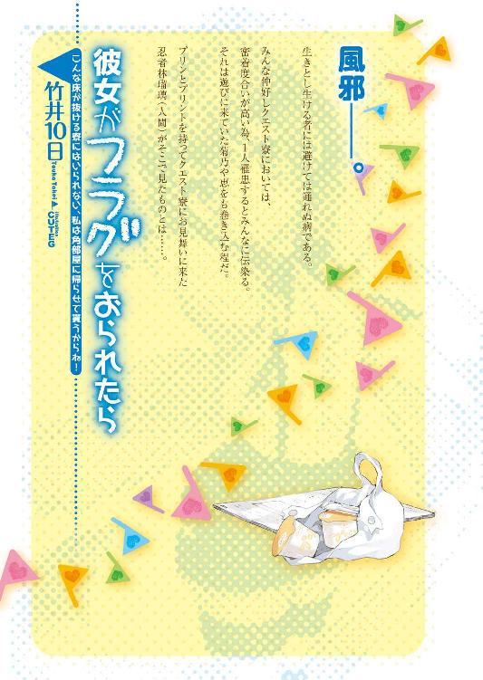
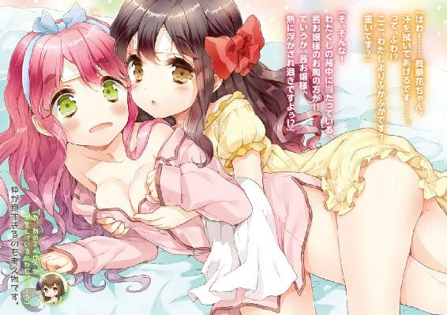
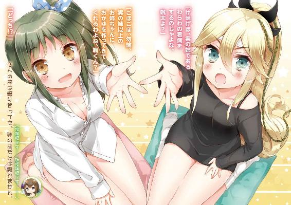
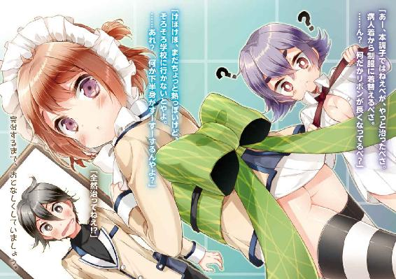
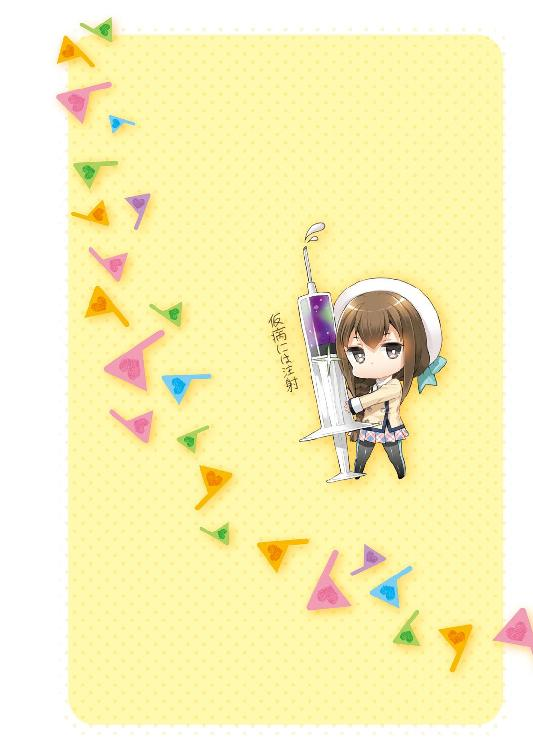
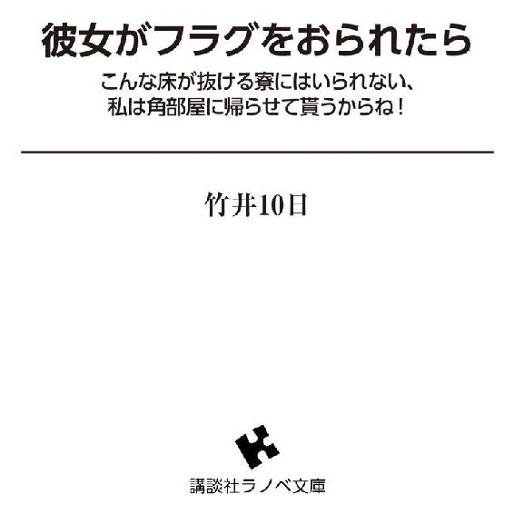
口絵・本文イラスト／ＣＵＴＥＧ
デザイン／團 夢見（イメージジャック）
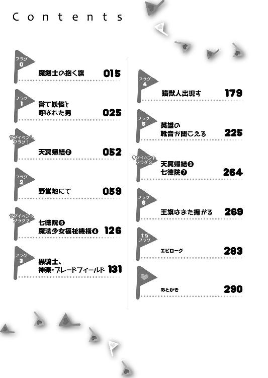
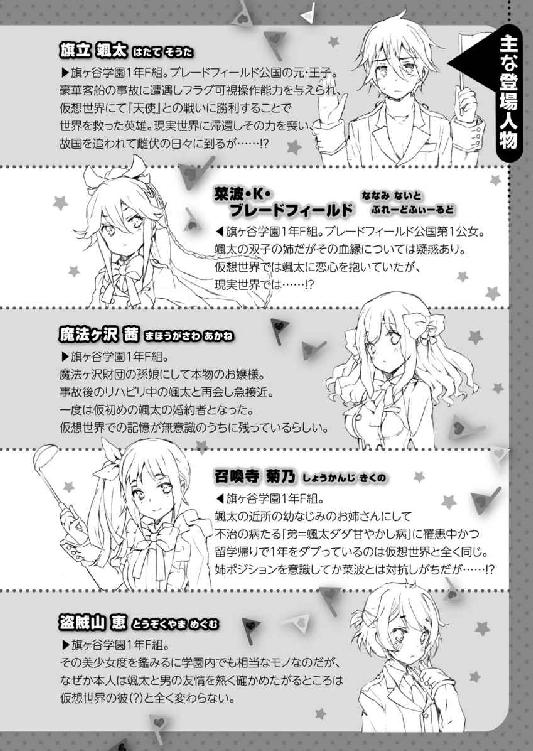
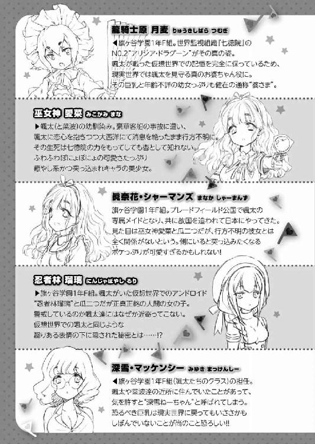
序章 魔剣士の抱く旗
ゴールデンウィーク明けの朝──。
「んんぅ......颯太ちゃん......」
大きくて弾力があって柔らかいおっぱいの感触がこれでもかと旗立颯太の顔に押しつけられ、窒息しそうになって颯太は目を覚ます。
「!! !? !!」
苦しさと気持ちよさといい香りで、ジタバタする颯太のジタバタ音で、隣の布団に寝ていた菜波・Ｋ・ブレードフィールドが起き上がった。
「んぅ......何じゃ、颯太、朝っぱらから五月蠅いの......う───────っ!?」
「ふぁ......何ですか、菜波姫様......って、ふわ!? 颯太殿下が深雪さんのベッドで胸に埋もれてらっしゃる!!」
菜波の叫び声で、飛び起きた颯太付きのメイド、眞奈花・シャーマンズが素っ頓狂な声を上げる。
──彼らが一夜を明かしたのは、深雪・マッケンシーの住むワンルームマンション。
前日の夕刻、行く場所をなくした彼らが当て所なく、学食の裏でパンの耳を貰っている場面を、深雪先生が見つけ、自分の部屋に連れてきたのである。
という訳で、この６畳の部屋には、部屋の主である深雪先生の他、颯太、菜波、眞奈花、そして月麦の５人が宿泊しており、家具とベッドが置かれているので、最早、寿司詰め状態で寝ることになっていた。
「きゃ───っ、深雪さん、殿下の頭上に涎が!! 涎が!! 私の殿下が穢されちゃうよぅ!!」
「ん～～～～～～～～～～～っ!! んんん～～～～～っ!!」
『変なこと言うな、駄メイド!!』と、寝惚け状態継続中の深雪先生の胸に埋もれっぱなしの颯太が叫ぶ。
「深雪姉ちゃん、ベッドから転げ落ちて一番遠い颯太の所まで行ったのかえ......寝相最悪じゃな......」
颯太にとってもそうであったように、一応、菜波にとっても近所の顔見知りのお姉さんだった深雪の初めて知る一面を、菜波が何とも言い難い表情で見ていた。何とも言いやすい表情で見ていた場合は、何かを言う。何を言うのかな？
と、そこへ、外から龍騎士原月麦が戻ってきて、寝惚けて颯太を抱き枕にする深雪先生と、それを引き離そうとする菜波と、涙目でオロオロする眞奈花を見て、やれやれだべという顔をした。
「ん、やっと起きただか、お前様達。お寝坊だべなあ」
「む、幼女。こんな朝も早よから、どこ行っとったんじゃ？」
「らじお体操だべさ。その後、げえとぼおるとやらに混ぜて貰ってきてたべ」
「老人か!?」
そんな一悶着があった後。
深雪先生が学校に行くのを見送ってから、颯太、菜波、月麦、眞奈花が顔を突き合わせて深刻な顔をする。
「さて......これから、どうするかのう」
菜波のため息混じりの言葉は、前途多難な彼女らの境遇を何よりも如実に表していた......。
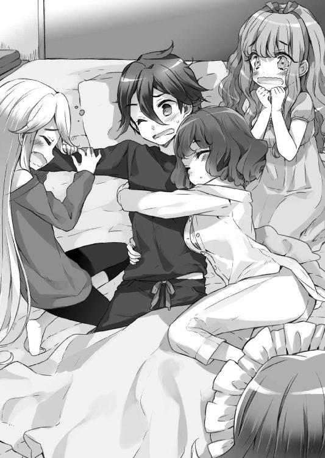
ごく普通の少年、旗立颯太は、ある日、父であるエリアがブレードフィールド公国の王族であることを知らされる。
父母と姉・旗立菜波と共に、ブレードフィールド公国へ赴く船旅の最中、沈没事故によって、意識不明となった颯太は、病院に収容され、半月の時を経て、意識を取り戻して退院した。
旗ヶ谷学園に通うこととなった彼は、ゴールデンウィークを利用して、婚約者となった魔法ヶ沢財団令嬢・魔法ヶ沢茜と共に、ブレードフィールド公国を訪れる。
遠き地で叶う、第１公女となった菜波や、仮想世界で出会った月麦との再会。
また、そこで、知り合ったメイド、眞奈花・シャーマンズは、沈没事故で生き別れとなった、巫女神愛菜と瓜二つであり、非常に紛らわしく、皆迷惑している。（颯太談）
平和な訪問となるかと思われた旅は、しかし、ある事件をきっかけに激変する。
異世界『天界』......その尖兵たる天界16騎士団の襲撃によって、公国の首都が陥落したのである。
追われる身となった颯太は、辛うじて難を逃れ、日本に帰国した。
先に茜と共に月麦に託した菜波と、懐かしきクエスト寮で合流した颯太は、そこで知ることとなる。
国籍も、家も、婚約者も──全てを失ったことを......。
「天界軍......天国の使者、という訳ですか」
「んむ、まあ、そんなところだべさ」
「文字通り、天使がお迎えに来たって、ところか......」
自嘲気味に呟く颯太は、仮想世界で天使に刃を向けたことが起因しているのだろうと悟っていた。
「殿下を天国になんて、連れて行かせる訳にはいかないよぅ!!」
力説する眞奈花に、菜波も大きく頷く。
「連中は颯太を追い詰めて、恭順を示させたいようじゃが。その上から目線が気にくわぬ。ここは、雌伏の時を甘んじて過ごしてでも、再起を図り、我らが父上や母上、そして、公国を奪還するのじゃぞ、颯太」
「......と言ってもな」
「殿下、ここはわたくしが一肌脱ぎますよっ！」
「......具体的には？」
「ぐ、具体的に!?」
「具体的に決まってないのか......」
「抽象的には、ふわっと一肌脱ぐ感じです」
「役に立たねえ!?」
颯太が若干フランクな感じになった。
「どのみち眞奈花では役には立たぬじゃろう。じゃって、奴ら、手からビームとか出すのじゃろ？」
「見たのか？」
「いや、わらわは見ておらぬが、眞奈花がそう言っておった」
幸いにというべきか、菜波は超戦闘力の天界軍騎士との遭遇はしていない。
しかし、空からいきなり生身で降ってくる所は見ており、眞奈花の話を７割方信用している。
残りの３割は、不信であり、つまり、眞奈花の話はそこそこ信用されていない。信用している７割の中でも、『とても信用している』の比率は２割程であり、要するに全然信用されてねえじゃねえか。
「手からだけとは限りませんよ、殿下、姫様」
「にゃんじゃと!? ちゅーことは、目とか鼻とか口とかから出るのかえ!?」
「花粉症の人みたいだな......」
涙、鼻水、くしゃみと一緒にビームが出るようであり、菜波の発想力に、眞奈花が何かを噴いた。
涙、鼻水、くしゃみを噴いた訳ではない。花粉症ではないからである。
何で花粉症の話なんかしているのか、よく分からなくなってきた。颯太が花粉症の話を言い出したからであろう。よく分かってんじゃねえか。
「いずれにしても、殿下、いずれ殿下を凱旋させて差し上げ、再び日本に戻ってお土産に買ってきた殿下くんストラップを日本のお友達に配れるぐらいに、この眞奈花・シャーマンズが必ず......」
「ちょっと待て」
「はい？」
「殿下くんストラップというのはなんだ？」
「お城の門のすぐ外にあるブレードフィールド公式アンテナショップで買える、先般の颯太殿下の帰還を記念して作られた必須アイテムだよぅ！ ほら、これ！ わたくしの宝物ですし！」
「なんだこの、ナマコの妖怪のような物体は......？」
「お主じゃ、颯太。ちなみに、こっちが姫様ちゃんストラップじゃ。わらわが監修したのじゃ」
「誰この美少女......？」
「何でじゃっ!? わらわじゃろうがっ!!」
「痛い!!」
菜波が颯太の頭をがぶぅっ！と嚙んだ。
『やっぱり、美化しすぎだったよね......』と薄々感じていた眞奈花が、心の中で忌憚のない意見を述べた。
口頭で忌憚のない意見を述べると、現在の颯太のように囓られる。
「僕は、こんなナマコの出来損ないのような僕の分身を、遍く学園に繰り広げる為に、人知を超えた戦闘力の連中と事を構えないといけないのか......」
「ああっ、何故か、殿下のモチベーションがダダ下がりにっ！」
「さもありなんじゃが......」
「大丈夫です、殿下！ この殿下くんは、こうして、姫様ちゃんを上に乗せて合体させることが出来るんだよぅ！」
「ただの、見知らぬ美少女のナマコライダーに......」
颯太が忌憚のない意見を述べた。
「ああっ、殿下のモチベーションが下げ止まらないよぅっ!!」
「さもありなんじゃが......」
面白い少年少女達の冷静さを欠いた会話にため息を吐き、月麦が口を開く。
「まあ、そんなどうでもいいストラップはどうでもいいべ。それよりもだべ......」
「ああ、公国奪還と言ってもな......」
月麦の言葉を颯太が接ぐ。
「......皆まで言うでないのじゃ、幼女よ。こちらの打つ手がないのは分かっておる。寄る辺がないのも、のう......」
消沈する若者達に、月麦が腕組みを解いて、微笑を浮かべた。
「んだば、寄る辺の心当たりに行ってみるべか」
「そんなのがあるのかえ、幼女よ？」
「んむ。困った時は、亀の甲より年の功、だべさ」
「............」
仮想世界で......。
ボロボロのクエスト寮を再建する時、菊乃はまさにそう言って、月麦の所に連れて行ったのだ。
それが月麦との出会いだった。
奇しくも、同じ言葉を、今、この時聞いたのは、或いは『運命』であったのかもしれない。
聖帝小路邸。
颯太に抱っこされて、ドアベルを鳴らす月麦。
「......あの、婆さま、これ、僕が自分で押せばよくて、別に婆さまを抱っこして婆さまが押す必要なくないですか？」
「そこに気づくとは！だべ」
颯太坊のいけず～と颯太のほっぺをぷにぷに押す月麦。
「何か、滅茶苦茶イチャイチャしてる!?」
ドアを開けて出てきた家の主、聖帝小路久美子が、颯太と月麦にショックを受けていた。
聖帝小路久美子。
旗ヶ谷学園副理事長である。
月麦と共に、居間に通された颯太は、仮想世界でここに来た時のことを何となく思い出す。
そして、一瞬。
ほんの一瞬、あの時、一緒に来た菜波、茜、菊乃、恵、凜、瑠璃、鳴、くるみ子、白亜、芹香......美森、その楽しげな姿と声を幻視し、颯太はたまらない寂寥感に囚われた。
あの時のメンバーの中で今、共にいるのは月麦だけだ。その月麦は、颯太の寂しさを恋する乙女の瞳で敏感に感じ取って、彼の頭を優しく撫で、それを久美子が何とも言い難い顔で見る。
「......。ともあれ、ようこそ、世界を救った英雄にお目にかかれて光栄だわ」
「......僕のことを？」
「蛇の道は蛇。裏の世界の出来事は、それなりに耳に入ってくるのよ」
久美子は手ずから、急須のお茶を月麦の湯飲みに注ぎながら、事も無げに言う。
「それで？ 今や、祖国を追われた王子殿下が、私に何かご用かしら？」
「単刀直入に言うべさ。颯太坊がこの国に......そして、旗ヶ谷学園に留まれるように、便宜を図って欲しいべ」
月麦が事情を説明し終えると、久美子は難色を示す。
「......なかなか難しいわね。ブレードフィールド公国は、颯太王子の廃嫡と共に、世界各国に、王子を自国に留めることを反国際社会的行為と見なすとして圧力をかけてきているわ。かの国は、情報という武器を持っているの。だから、実質的にどの国もブレードフィールドには、弱みを握られて、脅されているようなものなのよ。この星に、貴方の味方をしてくれる国はないでしょうね」
「............」
「と言いたいところだけど」
顔を俯かせかけた颯太が、顔を上げた。
「早晩、そんなことを言ってくるだろうと思って、既に手を回してあるわ」
「流石は、サンジェルマン伯爵だべ」
錬金術師・サンジェルマン。
聖帝小路久美子は、そう名乗り、ブレードフィールド公国を訪れた過去がある。
それは数百年前の出来事であって、未だ若さを保つ久美子もまた、月麦と同様、この世の摂理から外れた存在であることを示している。
「どういたしまして。......ところで、こちらの幼女はどなたなのかしら、旗立颯太くん？」
「え!? 知り合いじゃないんですか!? 龍騎士原月麦さんですよ!?」
「龍騎士......だれ？」
「冷てえもんだべなあ。酒を酌み交わした仲でねえべか。ワシだべ、七徳院２、アリシアだべさ」
「アリシア・ドラグーン!? 何でそんな縮んでるん!?」
美森会長のお母さん、恵っぽくなったな......と颯太は思った。
「人間、歳を取ると段々縮んでいくもんだべ。お前様もそのうち、ワシみたいになるべさ」
「マジで!?」
どこかで見たような風景を見、颯太が苦笑を浮かべる。
「んで、伯爵、どんな手を使ったべさ？」
この人、本当に地球生命体なのかな......？という目で月麦を見つつ、久美子がテレビのスイッチを入れた。
そこでは、国会論戦が行われており、野党が激しく首相を責め立てている。
《では、総理！ たった１人の、この国の人間でもない......いや、この現代社会の人間ではなくなった少年の為に、日本を国ごと国際社会の敵にしてしまうとおっしゃるのですね!? はいかいいえでお答えください!!》
どうやら、颯太を日本に留め置くことを発表した総理大臣に、野党代表が嚙み付いているようだ。
《なるほど。では、貴方は、ほんの数週間前まで、この国の国民であった年端もいかない少年を、我が身可愛さの為に放逐しろとおっしゃるのですね。何という無慈悲な言葉か。それでも、貴方は人間として恥ずかしくはないのですか？ 私ならば、恥ずかしい。そんな言葉を口にするのは》
感情的な野党代表に対し、総理はあくまで淡々と感情に訴えるように言葉を繫ぐ。
《私は、一人の人間として、少年を救いたい。この世界が醜く、汚いものだと、この国会中継を後にニュースなどで目にする少年少女達に思って欲しくはないからだ》
偽善者め！とヤジが飛ぶが、総理は一顧だにせず、答弁を続けた。
《考えていただきたい。もしも。もしも、貴方が少年の立場であったなら、と。世界のどこにも行き場をなくした少年であったなら、と》
《周囲を危険に晒すぐらいなら、喜んで出て行くべきではないですか！》
一際目立つヤジに、総理が言葉を止める。
これを待っていた、とばかりに。
《そうですか。自分ならば、周囲の安全の為に、喜んで自己犠牲を行う、とおっしゃる方は、是非、挙手願いたい。そして、そこまでおっしゃるなら、彼と運命を共にしてあげていただきたい。自己犠牲を行う彼と共に、皆さんも自己犠牲を行っていただきたい。その勇気を私は尊敬します。私の全権をもって、いかなる手段を用いても、その人物から日本国籍を剝奪しましょう。彼と同じ境遇を手にし、是非とも、社会正義の犠牲として、胸を張って、どこにも居場所のない人生を生きていただきたい。さあ、勇気ある方は挙手を!!》
これには、議場の誰もが鼻白んだ。
勿論、この放送を見ている国民も、である。
《自己犠牲を賛美なさるからには、自らにもその覚悟がおありなのでしょう？》
議論のすり替えだ!!と飛ぶ怒号の主のもとに、総理がツカツカと歩いて行く。
《では、貴方は彼に自己犠牲を強いますか？ 強いない、とおっしゃるのなら、挙手を。山本議員。強いるのでしたら、貴方の国籍はなくなるものとお思いください、山本稔議員？》
総理は先程とは逆に、挙手を求めた。
これは、アクションを起こさないまま議論を続けさせることのないようにする手法だ。
一旦、手を挙げて、少なくとも抵抗の意思を示す必要があるからである。
《私とて、個人としては、人道的に、別に彼を窮地に追い込みたい訳ではない》
《そうでしょうとも！》
総理が、山本議員の軽く挙げた手と、笑顔で握手する。
我が身可愛さに颯太の敵に回っていた人々は、総理の言葉によって、我が身可愛さの為に颯太に味方せざるを得なくなっていた。
聖帝小路邸、リビングルーム。
一旦、国会中継から、視線を颯太の方に向けた久美子が、苦笑を浮かべて言う。
「カリスマ性と舌先三寸で、若くして総理大臣に上り詰めた男は違うわね」
「総理大臣を抱き込んだべか。流石は伯爵、随分なコネクションだべなあ」
「彼は政治家になる前、教職に就いていてね。ウチの学校で教鞭を執ったことがあるのよ」
「新沢総理が、ですか？」
颯太の驚いた言葉に、久美子が頷く。
内閣総理大臣、新沢靖臣。
女性層の圧倒的な支持を集める、この国の最高権力者である。
「まずは一段落、ね」
「はい......、あ」
一安心する颯太は、一つ気になっていたものの、状況を考えて黙っていたことを尋ねてみた。
「会長......美森生徒会長は、お元気ですか？」
「娘？ ええ、元気なんじゃないかしら。初等部から寮住まいだから、ここには盆暮れ正月ぐらいしか寄りつかないけれど。......あの子の兄が亡くなってからは、特にね」
「............」
『やはり、現実世界でも、聖帝小路隆守は......』
颯太が謎の存在のままとなっている青年に思いを馳せるが、それも一瞬で久美子の言葉で現実に引き戻される。
「殿下は娘にご興味が？」
「いえ......まあ......仮想世界でお世話になったので」
「そう。いずれ、殿下とまた見えることもあるでしょう。何しろ、騒動のある所には必ず顔を出す子だから。殿下のもとには、まだまだ騒動の種は尽きそうもないもの」
「............」
嫌な預言だ、と颯太は思ったが、それが外れそうもないのも、また事実であった。
「ともあれ、だべ」
月麦が咳払いを１つして、話を本題に引き戻そうとし、久美子がそれに頷く。
「これで、当面は凌げるでしょう。しかし、殿下が目的だというのなら、いずれ、二の矢三の矢を射てくるでしょう。それまでに、事態を打開する算段を付ける必要があるわよ、アリシア」
「分かっとるべ。大旱の雲霓を望む......にしても、まずは態勢を整えんと、いかんともしがてえべ」
「態勢を整える。具体的には？」
「颯太坊に衣食住をきちんとしてやるところからだべ」
「ダダ甘やかされてんな!?」
颯太が何となく目を逸らした。
「ちゅーわけで、颯太坊を今まで通り旗ヶ谷学園に通えるようにしてやるだべ。世界を救った英雄だべからな。制服やらも家ごとなくしちまったべから、その辺も用意してやるべさ。奨学金も出すべ。あと、住む所も用意してやるべ、それから......」
「まだあるの!?」
月麦が最後に要求した案件......それは。
「はいは～い、今日はよい子のみんなに、転校生を紹介しま～す」
翌朝の１年Ｆ組教室。
「ブレードフィールド公国第１公女、菜波・Ｋ・ブレードフィールドじゃ。苗字で呼ばれるのは好かん。さん付けもちゃん付けも死刑じゃ。名前を呼び捨てる者も同様ぞよ」
「ま、眞奈花・シャーマンズですぅ......颯太殿下付きのメイドとして、付き従っています。よ、よろしくお願いします」
「龍騎士原月麦だべ。この学園のことで、分からんことがあったら、何でもワシに聞くといいだべさ」
『この学校来たばっかりの転校生に聞くの!?』『しかも、幼女に!?』とクラス中がざわざわし、菜波と眞奈花への関心が激しく薄れていた。
「............」
久美子に手配させた、菜波、眞奈花、月麦の転校。
その３人組を、颯太が自分の席から微妙な顔で眺める。
『菜波、婆さま......ついでに眞奈花。僕と行動を共にしなければ、余計なものを背負い込まなくても、済む......かもしれないのに』
菜波は言った。
「ど阿呆。わらわを安く見るでないわ。弟を見捨てる姉などおらぬ。大体、そんなことをしようものなら、菊乃先輩に何を言われるか分かったもんじゃないのじゃからな」
眞奈花は言った。
「わたしは殿下の１番目の家臣です。殿下をお見捨てする道を、眞奈花・シャーマンズは知りません」
月麦は言った。
「お前様は一人で世界を救ったべ。んだば、お前様はワシらが救うべさ」
そして、３人の自己紹介を聞き、当の自己紹介をした一人である菜波が『ん？』とぽきゅっと小首を傾げる。
「あれ？ なんじゃ、『つむぎ』って？ 確か、アリシアとか名乗っておらんかったかえ？」
「郷に入っては郷に従えだべ。菜波坊も、ブレードフィールドとか名乗らずに、日本菜波とかにするべさ」
「パスポートの名前の参考例みたいじゃ!?」
菜波が、日本太郎に近い存在になった。
ともあれ。
「颯太クン、学校に戻って来れて良かったんやよ。ウチ、すごく......しゅごく......心配したんやよぅ......!!」
「め、恵、泣くなよ......」
「男泣きやよぅ!!」
すぐ斜め後ろの席の恵が、女の子らしい可愛い泣き方で颯太の胸を借りてくる。
チラリと颯太が見た隣の席の茜は、今日は欠席だ。
「......そういえば、お菊ねえも、今日、休みなんだな？」
「昨日もお休みやったやよ。何か、颯太くんのニュースを聞いて、心労で倒れてしまって、うんうん唸ってるっていう噂やよ......」
「......。そっか。心配かけてたんだよな......帰り、お見舞いに行かないとな」
「あっあっ、それやったら、ウチも一緒に行くんやよ。お花を買っていってあげるんやよ」
「うん......ありがとうな、恵」
「ううん......ウチ、颯太クンに何かしてあげたいのに、何にも出来ずに......無力で情けないんやよ......」
「そんなことないよ。僕の為に泣いてくれるの、嬉しいよ」
「颯太きゅぅん......」
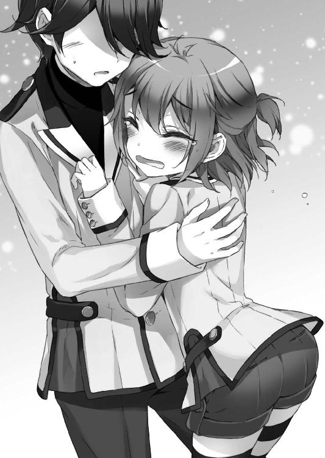
抱き合う男子と男子に、周囲の女子が何だかたまらない気持ちになったという。
颯太が男子とイチャイチャしている間に、クラスメートからの質問攻めを受けた菜波は、級友の計らいで、颯太の前の席に座らせて貰い、椅子に座って一息吐く。
「ふぅ、まさか、志望校じゃった旗ヶ谷学園にこんな形で入学することになるとはのう......。この制服、着てみたかったのじゃよ。言うてみれば、これも颯太のお陰じゃな」
ふふふと笑う菜波の言葉は半分本音なのだろうが、半分は颯太への気遣いだと思われた。
「菜波ちゃんも、旗ヶ谷学園へようこそやよ」
「おう、メグかえ。お主ともクラスメートとは縁は異なものじゃのう」
「......菜波ちゃん、何か、喋り方、本物のお姫様みたいになってるんやよ」
「本物じゃ─────っ!!」
現実世界では初めて見る、見慣れた光景に、颯太が思わず噴き出す。
「............」
久しぶりに見る気のする颯太の笑顔に、菜波も、恵も、月麦も、眞奈花も、嬉しそうにじんわりと微笑んだ。
と、颯太が現実世界の中学卒業間際のことを思い出す。
「そういえば、菜波は、旗ヶ谷学園、受験合格してたんだもんな」
「うむ。ブレードフィールド公国に行かずば、普通にこの制服で通っておったのじゃろうてな」
「あ!! そういえば、ウチ、合格発表の時、多分、菜波ちゃんを見たことあるかもやよ」
「そうなのかえ？」
「うん、金髪の子が喜んでるのを見たんやよけど、ずっと、外人さん、外人さん、て思ってたから、菜波ちゃんと全然一致しなかったんやよ～」
「どーゆー意味じゃっ!?」
またぞろ、菜波の顔がバタ臭いだけのただの日本人説が出て来た。
しかし、仮想世界で度々浮上したこの疑惑は、現実世界においては、あながち間違っているとも言えない面があるのだ。
「でも、この学園、中途入学やと結構ハードル高かった気がするんやよけど、菜波ちゃん達、今回ＡＯ入試なんやよ？」
「それは遠回しに学力を疑われとるということじゃろか......」
ＡＯ入試とは、ナンバーワンでなくともオンリーワンであれば試験にパス出来る個性一点突破型の入試だ。
菜波の場合は、お姫様だから合格、となっても全く不思議はない。
「ち、ちなうんやよ、ちなうんやよっ」
半笑いの菜波から逃げるように颯太の背中に隠れる恵が可愛い。
休み時間ともなると、颯太の周囲には人だかりが出来る。
菜波のみならず、月麦や眞奈花といった新顔が颯太の席の周囲に配置されたからでもある。
「王子、大変だったんだってな。ニュースで見たけど、その子が駆け落ちしたってメイドさんか？」
「はい、そうです。殿下のご学友ですね、よろしくお願いします」
「ちがーうっ!! 何でそこ、肯定するんだよ、駄メイド!?」
ぺちーんっとおでこを叩かれる眞奈花。
「駆け落ちではないのじゃ。そやつは、何か勝手についてきてしまったらしいのじゃ」
「そうなんだ......ナイトさんて、公女ってことは......あれ？ 王子の......何？」
「姉じゃ」
「え!? 召喚寺さんとポジション被ってるじゃん!?」
「あやつが後から被せてきたのじゃっ!!」
クラスメートの微妙に論点のズレたリアクションではあったが、菜波は正常に憤慨した。
「王子は、旗立颯太って名乗ってるのに、ナイトさんはブレフィーなんだ......」
「変な略し方をするでないのじゃ、無礼者っ。わらわは、まあ、未来の第１公王候補じゃからな。少し前までは、わらわも旗立菜波じゃったわ」
「こんな喋り方の姉ちゃん嫌だな......」
「なんじゃと!?」
クラスメートと次々に喧嘩腰になっていく菜波を見ていて、颯太は『ああ、なるほど......仮想世界の時も、こんな感じでクラスから微妙に孤立していったんだな』と一人で納得していた。
「ねえねえ、眞奈花さんって、結局、王子と駆け落ちしたの、してないの？」
「しましたあうち!!」
全く躊躇なく噓を吐くので、颯太がやむを得ず後頭部をチョップすることによる悲鳴が語尾に付帯される。
「し、してませんすびばせぇん......。わたしが殿下のお側にお仕えしていたくて、無理矢理ついてきましたぁ......」
「えー、健気ー!!」
男子よりも、女子からのきゃいきゃい騒ぐ声が上がっていた。なお、恵も一緒にきゃいきゃい騒いでいる。
「月麦ちゃんて、幾つなの？ 飛び級？」
「馬鹿こくでねえべ。ワシはこれでも、この学園が出来た当時にはもう生まれとるべさ」
「どゆこと!?」
「あと、何でスカート穿いてないの......？」
「最近の若いモンは、和服の着こなしも知らねえべか」
どこかで聞いたような会話に、颯太が苦笑いになった。
そんな風に囲まれる人々の中で、一際笑顔を向けられるのは、他ならぬ颯太自身だ。
「でも、王子、無事に戻って来られてよかったよ」
「もう王子じゃないんじゃないの？」
「あ、そっか。ごめんっ」
「でも、みんな、心配してたんだぜ？ ゴールデンウィーク明けの昨日だって、事情知ってそうな魔法ヶ沢さんも休みだったしさ」
「そうそう。......ま、深くは聞かないけど、ほんと、ちゃんとクラスに戻って来てくれてよかったよ。魔法ヶ沢さんも早く学校来るといいね。あ......いいの、かな？」
クラスメート達の言葉に、颯太が少し寂しげに俯く。
「うん......茜には巻き込んじゃって悪いことをしたから......。ちゃんと謝ってないしな......」
空っぽの隣の席を見る颯太を、元気出せと励ますクラスメートに、颯太は少しだけ無理をした笑顔を向けた。
放課後。
一人、菊乃の見舞いに行く予定だった颯太に、恵もついてきていた。
菜波や眞奈花達は転校手続きなどがあり、また、あまり大勢で押しかけるのもよろしくなかろうということになった為である。
「お花とー......あと、お菓子はちょっと病み上がりには重いかもやよ？」
「そうだな......」
「あ、でも、ハーブティなんか良いかもやよ。気持ちがリラックス出来るしやよ」
「うん、じゃあ、そうしようか」
お見舞いの品のチョイスに『恵、女子力高いな......』と思わず思った颯太の思考を、敏感に感じ取ったらしき恵の瞳から光が失われていた。
花屋に到着した恵は、ふわぁ！と瞳を輝かせて、花々に顔を近づかせる。
「ウチ、子供の頃、お花屋さんになりたかったんやよ～」
「うん、最高に似合ってるな」
色々な意味で頷く颯太。
「菊乃先輩やよから、菊の花......はお見舞いにはちょっと良くないやよし......っていうか、時季と違うからそもそもないんやよね。やっぱり、優しい色の花がええんやよ」
てきぱきと花を選んで待っている間、花に顔を寄せて香りを嗅ぐ恵の横顔が輝いて見えた颯太が、その束の中から１本を引き抜いて、恵の髪に挿してやる。
「あ......」
「似合うよ、恵」
「そ、颯太きゅん......あ、ありがとう......やよ」
幸せそうに頰を染めて俯く恵。
それを花屋の店員さんとお客さんが『絶対初デートだわ』『ええ、初デートね』『放課後デートよ』『彼氏、やるぅ！』と口々に囁き合い、恵の瞳から光が失われるのであった。
菊乃の家への道行き、花束を抱え、颯太が心配させたお詫びにとプレゼントしてくれた花を１輪、髪に挿した恵は気持ちを持ち直し、♪～と鼻歌を歌っている。
「あ、そうやよ。お花、プレゼントのお礼に、これ、あげるんやよ」
「なんだ......？」
「お守りやよ」
「お守り......」
「うん、ウチが子供の頃、お祖母ちゃんから貰ったものなんやよ。『恵が大きゅうなったら、必要になるから、大事に持ってるんよ』って」
「そんな大事な物、貰えないよ」
「ううん。......颯太クン、旗ヶ谷学園に戻って来れたけど、まだ、色々大変なんやよね？ ウチ、本当はもっといっぱい、颯太クンの力になってあげたいって思うけど、何も出来ないから......何かあったら言って欲しいけど、ウチ、頼りないから、言いづらいんやよね。だから、せめて、これぐらいしてあげたいんやよ......」
「恵......」
「ウチも、いつか、もっともっと頼り甲斐のある人間になるんやよ。颯太クンの側にずっと一緒にいられて、いっぱい頼って貰えるような。だから、それまで、そのお守りをウチやと思って、預かっていて欲しいんやよ」
「......ん。うん......ありがとう、恵」
仮想世界でも、ずっとその恵の優しい一途な気持ちに支えられていた。
理想の自分を諦めない気持ち。
どんなに挫けても前を向き上を目指そうとする恵の意思は、いつしか自分の中にも根付いていたように、今にして颯太は思う。
『そうだ......な』
恵の横顔に微笑む。
『いつまでも落ち込んでもいられないよな......。世界のどこにも居場所がなくなったって、自分で作る。自分を認めてくれる人がそこにいるなら。上を向き、前に向かい、進まなきゃいけない。その為の勇気と......優しさを、恵は、仮想世界でずっとその行動で教えてくれていた。......僕が、恵の友誼に報いる道は、その教えを実践することだ......そうだよな、恵』
可愛いだけではなかった。
その得難い友人を、友人の挫けない心を、颯太は今だからこそ、より大切に思えるのだ。
「......何やよ、颯太クン？ ウチのこと、ジッと見つめちゃったりして。照れちゃうんやよ」
「うん......恵、このお守りさ、安産のお守りなんだけど」
「ふえぇぇぇぇぇ!?」
可愛いだけのリアクションを恵がした。
召喚寺家。
颯太の顔を見るなり、入って入ってと菊乃の部屋へ行くのを菊乃の母が促しまくる。
そして、ノックの返事に死ぬ寸前の人みたいな枯れきった声で応える菊乃の自室の扉を颯太が開ける......と。
「颯くんんんんんんんんんんんんんんんんんんんんんんんんんんんんんんんんんんんんんんんんんんんんんんんんんんんんんんんんんんんんんんんんんんんんんんんんんんんんんんんんんんんんんんんんんんんんんんんんんんんんんんんんんんんんっ!!」
ベッドで死体のような状態になっていた菊乃が、瞬時に顔を紅潮させて、颯太に抱きついてきた。
「おでえぢゃん、心配じだんだかだぁ!!」
「......ごめん、お菊ねえ。これから、たっぷり姉孝行するから......許してよ」
「許ずなんて当だり前なんだかだぁ!! お姉ぢゃんが颯くんを許ざない訳ないでじょお!?」
涙でグズグズになりながら、右へ左へと颯太を揺さ振っていた菊乃が、最終的に颯太と共にベッドに倒れ込む。
「ウ、ウチ、ちょっと花瓶借りてくるんやよ......ごゆっくりやよ......」
顔を真っ赤にした恵が、そっと扉を閉じた。
「ちょっ......!? 変な気を遣うな、恵!?」
大体の事情を説明した颯太に、菊乃が憤慨する。
「お姉ちゃんの颯くんを酷い目に遭わせるなんて許せない!! お姉ちゃん、ちょっと行って倒してくる!!」
「お菊ねえ、ストップストップ!!」
まさかとは思うが、弟を思うお姉ちゃんの気迫をもってすれば、それぐらいやってしまいそうだから怖いと、颯太は思った。
「それにしても......颯く～ん！」
「な、何？ ちょっと声が怖いよ、お菊ねえ？」
「何で、昨夜、深雪先生の所に泊まってるの!? 真っ先にお姉ちゃんの所に泊まるべきじゃないのっ!?」
「いや......たまたま深雪姉ちゃん......深雪先生に会って何となく話をしているうちにそうなっただけでさ」
「むぅ～......いい、颯くん!! これからは、困ったりした時には、か、な、ら、ず、お姉ちゃんを頼るのよ!? 分かった!? どんなちっちゃな困ったことでも......たとえば、爪が伸びた時もお姉ちゃんが切ってあげるからね!? 颯くんが深爪したら大変だからっ！ 片足上げて転んじゃったら大変だから、靴下もお姉ちゃんが履かせてあげるから!!」
「ダダ甘やかしやよ!?」
際限なく甘やかしていくお姉ちゃんのダダ甘やかしに、様子を見に来た恵が衝撃を受けていた。
「でも、まさか、こんな大変なことになるなんて......やっぱりお姉ちゃんも一緒についていけばよかった！」
「菊乃先輩もウチも、船の事故のことがあるから、流石にそんなすぐ海外旅行とかお父さんお母さんに許して貰えなかったんやよね......」
「あと、お菊ねえが一緒でも、多分、状況は変わらなかったと思う。それより、お菊ねえまで危険な目に遭わせることがなくて良かったって思ってるよ」
「颯くん、何て優しいの!? お姉ちゃん、感激!! でも、いいのよ！ 颯くんが死ぬ時はお姉ちゃんも一緒に死ぬからね!?」
死ぬのか......と、あながち冗談でもない点に、颯太が苦笑を浮かべる。
「......ううん、やっぱり一緒じゃなくてよかったよ。お菊ねえや恵がここにいてくれるから......だから、戻らなきゃって......ここに絶対戻って来るんだって、その気持ちがあったからこそ、帰って来れたんだと思うんだ」
「颯くん......」
「颯太クン......」
仮想世界から戻って来れたのも、それ故であったように颯太は思う。
だからこそ、彼は何をおいても、彼女らに報いたいと願うのだ。
幕間 天冥帰結
ブレードフィールド公国。
ブレードプリンセス城、国王執務室。
颯太を追い詰めた天界16騎士団の一つ、聖櫃騎士団長、ジェルトロ・フルテッドは、城の窓から、憂いに満ちた瞳で城の対角線上にある塔の頂上を眺めていた。
そこには、ボロボロの王旗が掲げられている。
沈思する彼を取り巻く静寂を破ったのは、躊躇いのないノックの音だ。
「ジェルトロ卿」
「......返事をする前に入ってくんじゃねぇよ、ナルメル」
小学校高学年ぐらいの小柄な、低い少女の声を発するのは、真紅の頭巾を目深に被った魔法使い然とした人物である。
彼女は、ナルメル・エベラーゼ。
ジェルトロが騎士団長を務める聖櫃騎士団の副騎士団長である。
天界騎士団員は、騎士を名乗ってはいても、その陣容は魔導師や銃士も含む、混成部隊となっていた。
「見せたい物があるわ」
「......？」
ジェルトロは疑問を抱きながらも、深くは聞かず、ナルメルに従って、制圧した敵国の城たるブレードプリンセス城の、主から奪った部屋から出る。
何一つ尋ねないまま、ナルメルの後ろを歩くのは、参謀たる彼女を信じ切っているが故のジェルトロの行動であり、２人の関係を如実に物語っていた。
そのジェルトロが、中庭に向けて開けた廊下から見える王旗に再び目を遣る。
「どうかしたの？」
「............」
ナルメルの問いに、ジェルトロは深く嘆息してから、遠い目をした。
「ガキの頃、騎士に憧れた」
その瞳はまだ、彼が天界に魂を縛られる前、現世で普通の人間として生きていた頃の自分の少年時代を見ているようだ。
「スラム街のチンピラの息子だった俺は、裏路地から覗き見た、メインストリートを凱旋する馬上の騎士みたくなりてぇと思ったもんだ。だが、蛙の子は蛙だ。結局、俺は、盗賊団の頭目に収まって、死ぬまで悪逆非道の限りを尽くすチンピラの親玉にしかなれなかった」
「お前は死んで騎士になっただろう。天界で16人しかなれない、輝ける天界騎士の称号を得た」
「チンピラだよ、こんなもんは。......チンピラの仕事だ」
圧倒的な戦力で、ブレードフィールド公国の城を制圧した彼に、達成感は一切ない。
それは、本来の目的である王子の捕縛を逃したから、というだけの理由ではなかろう。
中庭を歩く城の下働き達から蔑んだ目で見上げられ、ジェルトロは自嘲気味に笑った。
自分は決して、あんな目で、凱旋する騎士を見たりはしなかった、と。
「俺の故郷の国旗には、竜が描かれていた」
今も昔も、蔑まれながら生きている。
蔑まれながら死に、天界へと辿り着いた自分の人生を、彼は振り返り、俯く。
「なりたかったねえ......竜の旗を誇らしげに掲げる、尊敬される騎士、ってやつによぉ」
嘗て自分が騎士達を憧れの目で見たように。
自分も誰かからそんな風に見られたいと。
その気持ちをどこまで汲んでいるのか、赤頭巾の少女・ナルメルはジェルトロに言う。
「では、次に機会があれば『天』の一文字ではなく、竜の旗の下に馳せ参じればよかろう」
「悪くねぇな」
そこでジェルトロはようやく、はためく王旗から視線を逸らした。
「俺に、次、ってやつがあるなら、だがよぉ......」
ナルメルがジェルトロを連れてきたのは、城に隣接する議会場の地下、七徳院と呼ばれるこの国の中枢機関の司令室である。
その部屋に控えさせていた七徳院メンバー──18舞琉・カフトリンに、視線で合図をし、ナルメルは１枚の画像を、モニタに表示させた。
「......船？」
「ここの城に保存されていた、先の天使軍の襲撃の際の画像、その断片よ」
ジェルトロの訝しげな声に、ナルメルが冷静に答える。
それは、颯太が打ち倒した『ゴッドブレス・アンブリエル号』に他ならなかった。
「天使客船、てやつか。......いや？ いや、ちょっと、待て、こいつぁ!? 何で、これがこんな所にそんな名前で現れるってんだ、ナルメル!?」
「そう。これは──」
「黄道器の箱船!!」
彼らの会話に舞琉が眉根を寄せる。
『黄道器の箱船......？』
黄道器。
黄道星座をモチーフに製作された神器である。
有名な所では、聖騎士王の持つ聖剣・王虎、冥界軍総司令の持つ魔剣・ベムレーテ、大魔王シャルロット・ホーリィの持つ凶矛・リヴァイアサンなどがある。
それらを起動装置として動く、高位次元への航海を行う為の船と言われているのが、黄道器の箱船だ。
ジェルトロは、嘗て、それを見たことがある。
忘れられる訳もない。
生前、その盗掘に向かい、折しも発見した時に、軍に囲まれ、手下のほとんどを失って、彼自身も捕らえられ、処刑されたからだ。
ジェルトロが『黄道器の箱船』とそう断じた呼称に、ナルメルが軽く首を横に振った。
「正確には少し違うわ。よく見なさい、船のフィギュアヘッドを」
「......双子の天使像？ 何だ、こりゃ？」
「これは、こちらの世界の黄道12星座の１つ、双子座のフィギュアヘッドなの」
「双子座？」
「そう、本来、『黄道器の箱船』がある、我々の世界には存在しない黄道の星座......つまりこの船は、黄道器の箱船......そのレプリカなのよ」
「ちょっと待て......神の御使いがレプリカに乗って来たってのか？」
「少し......裏がありそうな気がしない？」
「まったくだ。......だから、チンピラの仕事だっつーんだよ、こんなもんはよぉ」
ジェルトロの苦々しげな舌打ちが、地下司令室に僅かに木霊するのであった......。
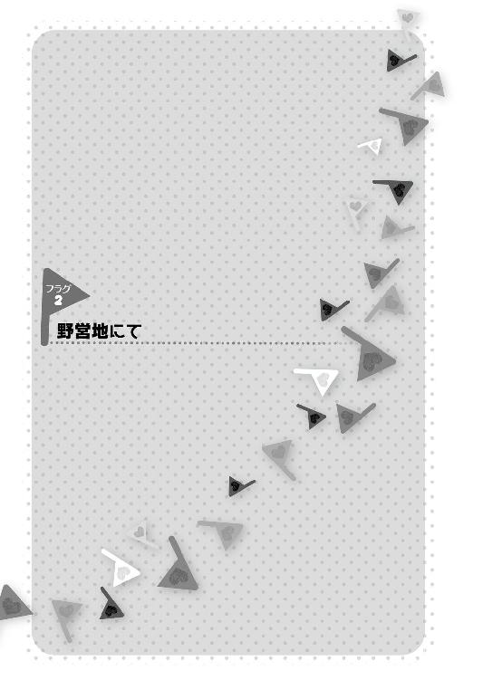
颯太が菊乃の家に見舞いに行った帰り道。
菊乃の家を後にし、恵と別れて、学校に戻ってきた颯太は、正門の所で弱った顔の菜波達と合流する。
「......どうした？」
「どうしたもこうしたもないのじゃ。用意された寮というのが......、ほれ、お主も見たじゃろう？ あのボロボロの寮じゃ。帰国して合流した時の」
「クエスト寮か！ まあ、あそこに住むのは、女子にはちょっとキツいよな」
「男女とか関係ないのじゃ！ あんな所に住むのは人間のすることではないのじゃ」
人間のすることではないことを仮想世界でしていた颯太が、半笑いになった。
「何かの手違いだと思って、副理事長さんの所に連絡して貰ったんですけど、出張でしばらくいないそうなんですぅ」
心許無い様子で情けない声を出す眞奈花。
「改築工事をすればええべ。りふぉーむだべさ」
『昔取った杵柄だべ？』とウインクする月麦ではあるが、あの時とは決定的に違うことがある。
「そうは言っても、先立つものがな......」
クエスト寮行き学内モノレール駅への道を歩きながら、ポツリと零した颯太に、力強い声が飛ぶ。
「話は聞かせて貰ったです!!」
「!?」
それは、巨大なキャリーバッグを引き摺ったふわふわの髪の両脇に赤いリボンを付けた少女──魔法ヶ沢茜、だった。
「茜!?」
「いかにもご存知、茜さんです!!」
「何でここに!? ていうか、その大荷物は!?」
「家出してきちゃったです!!」
「してきちゃったのか......って、えええ!?」
テンションが相当上がっているらしき茜は、笑っているのか憤っているのか分からない声の張り上げ方をしている。
「だってだって!! お父様が分からず屋さんなんです!! 颯太くんはそんな人じゃないって言っても、メイドさんと駆け落ちをするような不実な人は駄目だって言うです！ それに、もう颯太くんは王子様じゃないからって......です......」
「......駆け落ちはともかく、王子じゃないのは本当のことだよ」
「わたしには関係ないです！ だって！ 初めて会った時、わたし、颯太くんが王子様だなんて思わなかったです......それでも、わたし......だから......颯太くんが王子様かどうかなんて、わたしには関係ないことです！ 颯太くんだって、わたしがお嬢様かどうかなんて......関係ないって......そう......思ってくれてたです」
「茜......」
「それなのに、お父様が全然わたしの言うことを聞いてくれなくて、わたし、激おこぷんぷん丸になっちゃったので、お父様が悔い改めるまで、家出するです！って言って出てきちゃったです！ お母様は茜のしたいようになさい、って言ってくださったのに、もうっもうっ！」
茜が罪のないキャリーバッグをばしばしと叩く。
「......お祖父さんは？」
「お祖父様......ですか？ ......。そういえば、わたしとお父様が大喧嘩している間、目の前にいたのに、ずっと腕を組んで黙り込んで何も言わなかったです......。家出するって言った時も、です。いつもなら、絶対に、茜、ああしなさいこうしなさい、あれはしてはならんこれはしてはならん、って指図なさるのに......です」
今まで憤慨で頭がいっぱいになっていたせいで、そのことに思い至らなかった茜が今更ながら思案顔になる。
「............」
颯太は、仮想世界で、茜の祖父、秀辰が望んでいたことを何となく思い出していた。
彼は、茜が自分の意思と主張を持った、強い人間になって欲しいと望んでいたはずだ。
であれば......。
「兎に角、お母様が出がけに渡してくださったこのブラックカードで、どーんと寮をリフォームしちゃうです！ ......って、あれ？」
「どうしたのじゃ？」
「このカード、お祖父様のです。お母様のだと思ったですけど......です」
秀辰は、これも茜にとっての精神修養の一環だと思っているのかもしれない。そのカードを通して、『頼むぞ、信頼しておるからな、婿殿』という秀辰の言葉が聞こえてきたような気がして、颯太は困ったような苦笑を浮かべるのだった。
結局、まさか茜を、あのボロボロのクエスト寮に泊める訳にもいかないと颯太が判断し、一旦、施錠間近の１年Ｆ組教室に戻る。
菜波が『茜がおらんかったら、わらわは泊めるつもりだったのかえ!?』と嚙み付いてきて颯太は対応に苦慮したが。
「んで、当面、どうすんべかなあ」
「流石にこの人数で連日深雪姉ちゃんちに押しかけるのは気が引けますしね......」
さりとて、先程一度顔を見せてきた菊乃の家に行くのも躊躇われる。
頼れる程に仲の良い相手、となると、あとは恵ぐらいではあるのだが......。
「あっ、あっ、それでしたらですっ！」
茜がぱちむと手を合わせて、笑顔を輝かせた。
校舎の施錠後。
見回り教師が巡回していった後、１‐Ｆ教室の中、机の陰からもそもそと出て来る人影がある。
勿論、颯太達だ。
「いいのかな......こんな、校舎に潜んで一晩過ごす、なんて」
「あ、じゃあ、わたしの家に来るです？ お友達がお泊まりに来るなんて、初めてのことで、茜さんどきどきしちゃうですけどです」
「いや、お主家出中じゃろ!?」
「そこに気づくとは！です！」
「......国際的なお嬢様は大物ですね、殿下」
「まあな......」
「一晩ぐらい、ええべ。明日になったら、伯爵に連絡をとって何とかさせるべさ」
体育倉庫から体操用マットをかっぱらってきて、教室の床に敷く算段をしつつ、放浪の身の上を嘆く層と楽しげにエンジョイする層の二極化が進みつつあり、前者は後者に救われていることを自覚しないではいられなかった。
月麦と茜を教室に置き、颯太、眞奈花と共に体育倉庫に移動する菜波が、颯太の服をくいっと引っ張る。服をくいっと脱がせたら、大変なことになるからである。
「のう、颯太よ。茜を家に帰さんでええのかえ？」
「そりゃ、帰した方がいいんだろうけど......あれで意外と頑固だからな。言ってすぐ帰るような娘じゃないよ。ほとぼりが冷めたら、改めて話をしてはみる......けど」
「............」
菜波が不機嫌そうに颯太を睨む。
「なに？」
「ふんっ、随分と分かり合っておるのじゃなと思ってなっ。このケダモノめっ」
「あはは......は」
どうあっても、菜波からは茜のことでケダモノ呼ばわりされるのだな、と颯太は後ろ頭を搔いた。
機嫌の悪くなる菜波が離れるのと反比例して、眞奈花が近寄ってくる。
「殿下、元気を出してください」
「......僕は元気なく見えるか？」
「はい。口の端に乗せるのは憚られることながら......」
「そうか。心配をかけるな」
「いっ、いえっ！ ご飯を！ ご飯を食べよぅ！ ご飯を食べれば元気が出るはずなんですよう！」
「お前も、おなぺこキャラか......」
「ふえぇ!?」
元気づけたはずが、颯太から呆れ気味に見られ、眞奈花がショックを受けていた。
引き摺ってきたマットを教室の一角に敷き、倉庫からカーテンの予備を拝借してきて、その上に敷いて、簡易宿泊所の完成である。
「各部屋の鍵の隠し場所とか、月麦ちゃんは何でも知っておるのう......」
「学園の生き字引と呼ばれたワシに知らぬことはねえべさ」
「今日転校してきたのにかえ!?」
「婆さまは、既に学園内でも相当な生き字引として、認識され、すっかり『婆さま』と呼ばれているよう、菜波姫様」
「マジかえ!?」
眞奈花がすっかり婆さまと呼んでいるように、菜波も程なく月麦の呼び方が婆さまになるフラグが立っているなと、フラグの見えない颯太にも分かる。
そんな会話の間を、茜がひゃっはー！とマットの上をゴロゴロ転がっていた。
「何だか、遠足気分で楽しいですっ、颯太くんっ！」
「茜お嬢様は精神的に逞しいですね......」
「そんなそんなっ、眞奈花ちゃん、お嬢様なんてやめてくださいですっ！ わたしは、もう魔法ヶ沢を出た身ですから、元お嬢様です。颯太くんが元王子様なのとお揃いです。えへへ......」
はわはわした出だしから、最後は何故かでへでへ笑う茜の台詞に、眞奈花がテンションの上下動が激しい人だなーと珍しい生き物を見る目で見つめる。
「では、来る途中で買ってきた、おにぎりとかサンドイッチでお夕食にしましょうか、殿下。キッチンと材料があれば、不肖わたくしめが何なりとお作りしますのに......殿下に不自由を強いて申し訳ない限りです......」
「へぇ。眞奈花ちゃん、お料理得意ですかです。流石はメイドさんです。今度、教えて欲しいです」
「はい、喜んで！」
「何じゃ、わらわも教えてやろうかえ？」
菜波の思いも寄らぬ飛び道具台詞に、颯太が盛大に何かを噴いた。何かの正体は主にエクトプラズム。
侘びしいが楽しい夕食を取った一同は、雑魚寝ということをもっと気にすべきだったかもしれないが、それが気にならないほどに各々が疲れていて、あっという間に眠りに就いてしまった。
そして、翌朝。
ほぼ毎日、朝一で登校してくる１年Ｆ組クラス委員長、弥生一二三が教室に入るなり、教室の隅っこで、ごろ寝しているクラスメートの小集団を見て、挨拶の言葉が途中で止まる。
「おは......なんで!?」
「おはなんでですー」
「おはなんでじゃー」
「新しい挨拶じゃありませんよ!? 何でこんな所で寝起きしてるんですか!?」
その叫びに反射的に反応して、夢うつつで返事をする人々に一二三がショックを受けた。
「ぼちぼち童どもが登校してくる時間だべか」
「あ、婆さま」
登校初日から、月麦が人々に婆さまと呼ぶように周知徹底した結果、一二三にもそう呼ばれるようになっていた。
弥生一二三は、仮想世界でも颯太達のクラスのクラス委員長をしていた少女であり、非常に頼れる眼鏡っ娘だ。
その当時は、知恵の一二三と知識の月麦は、１‐Ｆの頭脳の両輪として働く隠れた名コンビでもあった。
ともあれ、お年寄りなので朝が早い月麦は、既に起きてラジオ体操をしてゲートボールに混じってから丁度教室に戻って来て、かくかくしかじかと一二三に事情を説明する。
「ちゅーわけで、土木研究会に仕事を発注しておいたべさ。何しろ早く工事するべと言うたらば、出来るだけ人手をかき集めるようにと言われたべ」
「なるほど。そういうことなら......私も一肌脱ぎましょう」
「んむ。旗ヶ谷の怪物と呼ばれた一二三坊が味方に付けば百人力だべさ」
「何故、転校生が私の中学時代のあだ名を!?」
どこまで自分の雷名が轟いていたのか、一二三は怖くなってきた。
そして、放課後。
早速という感じで、土木研究会が総出でクエスト寮の改築に取りかかる。
「実在するんだ、あの組織......」
土研会レギュラーの証である、トレードマークの黄色に安全マークのヘルメット。
それを一様に被っててきぱき働く集団を、軽く意表を衝かれた颯太が棒立ちで眺めていた。
「こんなボロボロの寮が、ちゃんと住めるようになるのかのう......？」
その隣で颯太とは別の方向性で棒立ちの菜波は、心配そうに目の前の一時的に崩されゆく廃墟を見上げる。
「なるよ」
「そうなのかえ？」
「うん。なるよ......僕らが帰る場所に」
感慨深げな颯太を、菜波が少し訝しむ。
が、颯太の方も、ふと怪訝な表情になった。
「......多いな、人が」
そう。仮想世界で寮を再建した時よりも、遥かに人が多いのだ。
「旗ヶ谷の怪物の面目躍如だべかなあ」
「婆さま」
小さな身体を覆うように板きれを担いでいるので、一瞬、板きれが歩いてきたのかと思ったが、その口調から月麦のようであると断じた。
板きれにぶつかりそうになった菜波は、うおっ危ねっ！とかなって、そういえば、埃が立たないように水まき班に配置されたのを思い出して作業に戻る。
「一二三坊が随分あちこちに声をかけてくれたみたいだべさ」
「生憎と、私の力ばかりではないわよ」
噂を耳聡く聞きつけたか、一二三がバケツを片手に現れて言った。
「旗立くんが住む寮なんだって言ったら、『俺も』『私も』って感じで、向こうの方からいっぱい手を挙げてきてくれたのよ。転校からこっち、随分、旗立くんに助けて貰った人が多いみたいでね。あと、友達が助けて貰ったから、って来てる子もいるみたいよ」
「............」
ほのかに......じんわりと微笑む颯太に、にっこり笑って、一二三は自分の持ち場に歩いていく。
月麦が颯太を見上げる。
「成長したべなあ、颯太坊よ」
「婆さま......」
いつか貰った言葉が。
いつか贈った言葉が。
２人の中で蘇る。
『よう見ておけ、そして、覚えておくべさ。これは借りではねえ。好意だべ。好意は好意で返すもんでねえ。胸の中にしまっておくべ。そして、少しずつ自分の中で、育て、糧にするだ。さすれば、颯太坊もいつか呼吸をするように、人に好意を向けられる人間になれるべさ』
「その成長が、こうして、人を惹きつけるべさ。人に好意を向ける者には、自然と人が集まってくるべ。あの、おなごに引っ張り回されるだけに見えた子が、よくぞ......よくぞ、ここまで......」
ちょっと苦笑する颯太の身体を登ってきた月麦が、よしよしと頭を撫でる。
何かを求めてそうしてきた訳ではないが、何か報われたような気持ちの颯太は、少し涙ぐんでいた......。
少し涙腺が緩んできていた颯太は、月麦と別れ人目を避け、寮の裏手の作業に回る。
......と。
「あ」
「......あら」
そこでは、帽子を被り、三つ編みを前に垂らした少女が割れた窓ガラスを掃除していた。
人間の忍者林瑠璃である。
「瑠......忍者林さん。手伝いに来てくれてたんだ」
「......ええ。転校生に借りがありましたから」
「ああ......」
そういえば、深雪先生に頼まれた仕事を手伝ったな......と思い出しながら、颯太がくすっと笑う。
「？」
「あれは、借りじゃないよ。好意だ」
「いやらしい」
「そうじゃなくて!!」
瑠璃からジットリとした視線を向けられ、颯太が声を裏返らせる。
「借り、だって思って欲しくないんだ」
「............」
「人が、人に向ける、親しみ......厚意、でもいいかな。好意は好意で返すものじゃない。胸にしまっておいて、少しずつ自分の中で育てて、糧にするんだ。そうすれば、いつか、呼吸をするように、人に好意を向けられる人間になれる、ってさ」
「好意......」
「まあ、僕も人からの受け売りで、偉そうに言えた義理じゃないんだけど、あはは」
「いいですね」
「......！」
微かに、ほんの微かにだけ、表情に笑みを浮かべた瑠璃を、颯太は初めて見た。
そして、その微笑がすぐに曇ることに、颯太はちくんと胸の痛みを覚える。
「私も、そんな風に思えたらよかった」
「え......」
「ここは、私一人で十分なので、表の方を手伝ってください」
微笑んだままで、けれど、悲しそうに、瑠璃ははっきりと拒絶するように、背中を向けた。
「......僕も昔、そんな風だった。全てから目を背けて、全てに背を向けて」
そんな時、仮想世界で出会った、彼の墓標だと思えた建物は、今、再び目の前で蘇ろうとしていた。
「その時、出会った人達に、僕は前を向かせて貰った」
「私はもう、前を向きませんよ。前を向くことが出来るのは、未来がある人間だけです」
いつか思った。
この人間の瑠璃は、嘗ての......旗ヶ谷学園に来たばかりの自分と似ている、と。
「僕にも、未来はなかった。それでも、諦めずに前を向くことが、未来を創るんだよ」
「......転校生は」
瑠璃は俯いたまま口を開いた。
「国籍も、住む場所も、親の庇護もなくして、それでも前を向くんですか。どんな未来があるって言うんですか」
「............」
ないような気がしたので、颯太が凹んだ。
目に見えて凹んだので、瑠璃が気後れした様子で訥々と詫びる。
「すみません。まさか、特に反論がないとは」
「いや......確かに、どんな未来があるんだろうな......」
「元気を出してください。......では、私は向こうで作業をするので」
凹んでしゃがみ込んだ颯太を元気づけ、半ば逃げるように瑠璃は去って行った。
......かに思えたが、再び戻って来た。
「良かったら、食べてください」
「......キャラメル？」
「さっき、転校生のメイドさんが、『食べると元気が出ます』と言って、私に一方的に渡してきたものです。私も今の転校生のような顔をしていたんでしょうかね......。私には意味がないと思えましたが、転校生には意味があるのではないですか」
「............」
眞奈花が瑠璃にそうしたように、瑠璃も颯太に一方的にキャラメルを渡してきて、踵を返した。
「難しいもんだな。人に優しくするのって」
瑠璃が見えなくなってから、ゆっくり立ち上がる颯太。
自分が茜達にして貰ったように、今の瑠璃にしてやりたい、と思うのだが、逆に元気づけられる始末である。
と、物陰に潜み、様子を窺っていたらしき茜と眞奈花が颯太に歩み寄ってきた。
「まさか、颯太くんが瑠璃ちゃんに甘やかされる場面を見てしまうとは、です」
「甘やかされる言うな!? ていうか、見てたのか」
「いえ、殿下がしゃがまれて、帽子の方が戻ってくる所をお見かけして......」
「あれは、瑠璃ちゃん、っていうです、眞奈花ちゃん」
「殿下に優しい言葉をかけてくださっていました。殿下のお味方をしてくださるのはいい方です」
「でも、あれは、眞奈花ちゃんが瑠璃ちゃんに優しくしたからです。だから、回り回って颯太くんが優しくされたです。眞奈花ちゃんのご主人様を思う気持ちのお陰です」
「そんなそんな！ 瑠璃さんがお優しかったからですっ！」
「いえいえ、眞奈花ちゃんが......！」
「そんなそんな、瑠璃さんが......！」
茜が瑠璃の代弁者として譲り合う変形譲り合いではあるが、『譲り合い逆修羅場』を久々に見て、颯太は感慨深げだった。
恵も合流して、譲り合い逆修羅場をしばらく繰り広げていると、スタスタスタと足早に瑠璃が戻ってくる。
「ちょっと、あなた達っ、私の名前を連呼しないでくださいっ。話を聞いた人達がよく分からない噂を立ててたじゃないですかっ」
「よく分からない噂です？」
「私が優しいだのどうだのという噂よ！」
「よく分かる噂です」
「............」
茜との会話がよく分からなくなってきた瑠璃が沈黙した。
「............」
それと合わせた訳ではないのだが、茜もまた沈黙してジッと瑠璃の顔を眺め、瑠璃を怯ませる。
「な、何ですか......？」
「いえ......、瑠璃ちゃんて、わたし、とてもどこかで会ったような気がするんですよねです」
「何を言ってるんですか。そんなの、クラスメートなんですから当たり前じゃありませんか」
「いえ、そういうんじゃなくてです。凄く......仲良しだったような......」
「あ！ ウチも！ ウチも、何かそんな気がしてたんやよっ！」
颯太は最初、茜の言葉がまた何かの思い違いだろうと考えたのだが、恵も加わってデジャブを主張する段に至り、気づく。
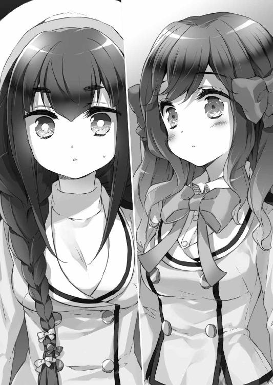
『そうか......仮想世界の記憶！ 茜も恵も、アバターを経由してあの仮想世界の記憶が残っているんだ......!!』
その茜の言葉を、瑠璃は鼻で笑った。
「何ですか、それは。馬鹿馬鹿し......い」
だが。
瑠璃もまた、どこかその言葉に頷けるものを見出し沈黙したように、颯太には見える。
『忍者林さん......？ まさか......いや、少し不思議に思っていたんだ。そもそも、何故、あの仮想世界では、現実のように人間の忍者林瑠璃がいるのではなく、ロボットの瑠璃がいたんだ？ 現実とどこか繫がっているのだとすれば......、まさか......この現実の忍者林さんも何か、仮想世界と繫がりがあった......ということなんだろうか？』
しかし、その颯太の沈思はすぐに瑠璃の声で打ち破られる。
「兎に角！ くだらないことを言い合って、人を噂に巻き込むのはやめてください！ いいですね！」
「は、はいです......怒らりたです......」
来た時よりも力なく歩いて行く瑠璃の背中を見送る颯太の心中は、まだ乱れていた。
ぞろぞろと寮の裏手から表の方に戻って来た颯太と茜と眞奈花は、丁度、良い上振りかぶりフォームでシャベルを持って寮に突っ込んでいく菊乃を見る。
「颯くんの為に、お姉ちゃん、頑張っちゃうわよぅ────────っ!!」
それを見て、うずうずした茜が手近にあったハンマーを振りかぶって、寮の方にすっ飛んでいった。
「わたしも颯太くんの為に、負けないです───────っ!!」
がこんべきん！と派手な破砕音が鳴り響くのを、棒立ちで聞く颯太と眞奈花と恵。
「殿下、あれ、物を壊す時のフォームです」
「............」
と、少し離れた所から、土研会の呼ぶ声が聞こえた。
「おーい！ 男子の人手、誰か頼むー！」
「はいやよ!! ウチらの出番やよ!!」
恵が瞳をキラッキラさせて、颯太の手を引き、呼ばれた方へダッシュしていく。
そこには背の小さい少年のような黄色いヘルメットの人物がいた。
「あ、匠先輩」
「ん？ お前、新顔だろ、転校生？ よく俺のこと一発で土研会長の称号〝匠〟だって見抜いたな。なかなか、見所があるじゃねえか」
鼻の下を指の背でこする匠を、颯太が懐かしんで微笑む。
「ウ、ウチ、なんか、先輩にはシンパシーを感じちゃうんやよっ。女の子と間違えられがちな者同士、頑張りましょうやよっ」
「俺は女だっつーのっ!!」
「ふえぇ!?」
男らしく否定する匠女の子らしく驚く恵。
なお、この対決は両者が敗北を喫している上、両者に大ダメージである。
「ええいっ、お前ら、そこの建材、全部トラックから降ろしてブルーシートかけとけよ！」
腹立ち紛れに、匠が言い放ち、去って行く。
なお、その間、既にその辺にいた為に招集されていた颯太のクラスメート、茶パが黙々と１人で建材を運んでいた。
ようやく現れた助っ人２名を、茶パがチラ見する。
「おう」
「やあ」
「あっあっ！ 茶パくんと颯太クン、今の挨拶、何か男らしくて格好良かったんやよ!! ウチも、やりたいんやよ!!」
恵がグッと握り拳を２つ胸の前で作る超可愛いポーズを取って主張するので、冷や汗を垂らしつつ、茶パが応じざるを得なくなった。
「......おう」
「やんっ」
端的に言って、超可愛い。
「............」
「ち、ちなうんやよ、ちなうんやよっ！ 今のは、嚙んじゃったんやよっ、本当は『やあ』って格好良く言おうとしたんやよっ!!」
恵はそう力説するが、台詞内の『やあ』の言い方も可愛いだけで特に格好いい要素はなかった。
「つーか、お前ら、手伝いに来たのか、邪魔しに来たのか」
苦笑しつつ言う茶パの言い様は、茶髪にピアスという見た目のチャラさとは裏腹に、やはり優しさが内包されていた。
「じゃあ、やるか、恵」
「う、うんっ！ ウチの豪腕を見せる時やよ!!」
そう言って恵は軽やかにトラックの荷台に飛び乗った。
軽業に限定して言えば、恵は運動神経はかなりいいと言える。
そして、恵は荷台の上の１枚のベニヤ板に手をかけた。
「ふにゅあああああっ!!」
力一杯持ち上げようとしてもびくともしない。
「うにゃあああああああっ!! せみゃあああああああああああっ!!」
かけ声だけが妙に可愛く、踏ん張っている内股な感じだけも妙に可愛く、唇をふるふる震わせる様子だけも妙に可愛い。つまり、全然『だけ』ではなく可愛い。
「恵、手伝うよ」
と言って逆側を持って、せーので持ち上げる２人だが、ほとんど恵の力は寄与していない。
「颯太クン......ウチ、役立たずの子猫チャンでごめんやよ......」
「そ、そんなことないよ、恵。恵は役に立つ子猫チャンだよ？」
「結局、子猫チャンなん!?」
颯太が若干、茜に似てきたと恵は思ったという。
颯太と恵と茶パのうち、主に颯太と茶パの力が建材を運び終えた頃、菜波が颯太達の所へと歩み寄ってくる。
「なんじゃ。こんな所におったのか、お主ら。しかし、あれじゃな......。１週間ほどで取りあえずの住むスペースは一定程度作ってくれると土木研究会の連中が言っておったが、その間、どうするか......じゃな」
「一応、深雪姉ちゃんに相談はしておいたけど」
そこへタイミング良く、おっぱいをばいんばいん揺らしながら深雪先生がゆっくり駆けてくる。
「やったわよ！ 先生、頑張ったわ、颯太ちゃん達!! 例のお泊まりする場所の件、学校とかけ合って、何とかしたわ！」
「おお、今丁度その話をしておったところじゃ。でかしたぞよ、深雪姉ちゃんよ！」
「教室で寝泊まりしてもいいって」
「そうじゃねーんじゃよ─────っ!!」
憤りの余り、菜波が手近にあった１００ｔハンマーを手に、物を壊すフォームでクエスト寮に突っ込んでいった。
その日から１週間。
謎めいた光景が教室で展開されることになる。
放課後になると、颯太達は机を動かして、教室のほどのスペースを確保する。
その後、流れるような作業で、教室の後ろに立てかけてあった茶道部の借り物の畳を６枚、空いた場所に運んで敷き詰めた、
更にその中央へ、ちゃぶ台を置き、ふぅと落ち着く。
「普通に教室で暮らしとる!?」
「なに、あの人達、すげえ......」
居残りクラスメートや文化部から帰る生徒達が廊下から、そんな彼らを見て、もう一回見る。二度見である。
「颯太クン達、それじゃあ、ウチ、部活行くんやよ。家庭科部のお料理、あとで晩ご飯に持ってくるんやよ」
「おお、恵坊、いつもすまんべさ」
「婆さま、それは言わない約束やよ」
『じゃあ、あとで』と、この上なく可愛く手を振る恵が教室を出て行く。
「あ、そうだわ！ 颯くん、今夜はちょっと冷えるらしいから、お姉ちゃん、毛布貰ってきてあげるわね」
「うん、ありがとう、お菊ねえ」
色々な人達の支えによって、颯太達はどうにか暮らせていることを実感する。
「あっ、寂しくなっちゃったら、お姉ちゃんを呼んでいいんだからね？ 寒かったら、お姉ちゃん、添い寝してあげるし」
「うん......ありがとう......お菊ねえ......」
特定の人達の支えによって、颯太達がいかがわしい暮らしをしていることを、クラスメート達が妄想する。
それでも、流浪の王子と姫が、メイドと元婚約者のお嬢様と老婆を自称する幼女を伴い、宿無しの生活をしていることに、生徒達は力を貸してきてくれた。
運動部は洗濯機を、家庭科部は冷蔵庫を、快く貸してくれたし、ある者は使わなくなったテレビやロボット掃除機やノートパソコンを、またある者は家に眠っていた空気清浄機やマッサージチェアを持ってきてくれた。他にも浄水器に電子レンジと、必要な物を力一杯運搬した結果、『めっちゃ良い暮らしになってんな!?』と、様子を見に来た者達にビビられる。
〝クエスト寮・１‐Ｆ教室出張所〟と立て札の立てられた場所を一旦後にした颯太達は、改築途中のクエスト寮で、土研会の手伝いをし、日が暮れかけた頃、再び出張所に戻ってくる。
『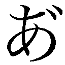～～～』とマッサージチェアで気持ちよくなっている月麦が揺らされる声を出しつつ、すっかりリラックスして、颯太を呼んだ。
「颯太坊よ、そういえば職員室に夕刊が届いてるんではなかろうべか」
「じゃあ、ちょっと行って借りてきますけど......いいのかな、いつも勝手に持ってきちゃって......」
「あっあっ、茜さんもついていくですっ」
「では、わらわも一緒に行ってやるとするかのう」
「殿下、わたくしもお供いたしますっ」
「新聞を取りに行くだけで、そんなに人手がいるか!? 眞奈花は残って、屋上に干した洗濯物の取り込みとか頼むよ」
どんだけ新聞貰いに行く気だ？というツッコミのもと、眞奈花が切り離されたが、それでも３人編成でかなり多量の新聞を運搬する恐れがある。
「!!......わ、分かりました......殿下のお役に立てぬ、このメイドをお許しください」
るーるーるるるーと、悲しく去る時のＢＧＭを眞奈花の代わりに口ずさむ茜。いい連携である。見事な連携だ。
「洗濯物取り込む方がよっぽど、颯太の為じゃろう」
「!!......ですよね！ 殿下のお役に立ってますよね！」
るーるーるるるーと、悲しく去る時のＢＧＭを眞奈花の代わりに口ずさむ茜。
「いや、何でそのＢＧＭですか!?」
特に連携とは関係なく、このＢＧＭを口ずさみたかっただけみたい。
新聞を取りに行く道すがら。
「何か、こうやって３人で歩いていると、懐かしい気がするです」
遠い目をする茜に、菜波が小首を傾げる。
「うむ？ 船上でのことかえ？ ああ、いや、ブレードプリンセス城でのことじゃろうか」
回想する菜波は、それだと愛菜とか眞奈花がおらんかったことにされとるな......と、両者の変な所で忘れられる存在っぷりに口の端をヒクつかせた。
「いえ、そういうのではなくて......何ていうか......もっと前というか、遠い昔にこんな風に......。そう、夢の中で、とかです」
「............」
颯太は、それが仮想世界の中での、茜の深層心理に残る思い出......学園祭で泊まり込んだ掛け替えのない格別の日々のことのような気がして、自然と微笑みが浮かぶ。
一方、菜波はしてやったりとばかりに、ニンマリして茜の脇腹を肘でつんつん突いた。
「なんじゃ、茜の方がポエマーではないかえ。やーい、ポエマーめ」
「えへへ～、そんなそんな～、菜波ちゃんにはかなわないです～」
「何で嬉しそうなんじゃ!?」
笑顔の茜は、その夢見るような表情で言葉を続ける。
「何だか、本当に不思議なんです。こうやって、颯太くんや菜波ちゃん、婆さまと一緒に生活していると、まるで、そうすることが凄く自然だったみたいに、しっくりくるです」
「ほう......」
遠い思い出を見つめるような茜の表情と口調、それらに頷く菜波は、やっぱり眞奈花が抜けているので、口の端をヒクつかせた。
何だかんだで愛菜は一番仲の良い幼馴染みであったし、その幼馴染みに似ている眞奈花は、一時期自分のメイドさんでもあったので、多少なりと思いやりを持って見ているようだ。ヘヴィランスである。何故、突然、思いついちゃった駄洒落を挟んできたのか。
「何だか、でも......本当はもっと賑やかで......もっともっと楽しい日だった気がするです」
「............」
「あ、と言っても、今が楽しくない訳ではないです。菜波ちゃんのせいではないです」
「何で、わらわがおると楽しくないみたいな流れになりかかっとんじゃっ!?」
「ちなうんです、ちなうんです！ 菜波ちゃん、さっきから変な顔してるから、気にしていると思ったです！」
茜がぼんやり思っている寂しさと嬉しさは、颯太の大いに共感するところで、その理由を告げてしまおうかとすら思うほどだ。
すっかり月麦と茶飲み友達になっている学長が綺麗に畳んでおいてくれた夕刊を拝借し、教室に戻り、月麦がその新聞を読み終えた頃、恵と家庭科部の部員がやってきて、部の成果物であるチキンカツやほうれん草のごま和えや豚汁やキノコおこわを運んでくる。
それに舌鼓を打つ颯太達を、満足そうに眺める恵を筆頭とする家庭科部員達。
「どうやよ、颯太クン、そのチキンカツ、チーズ挟んだのとか、紫蘇挟んだのとかあるんやよ。ウチの力作なんやよっ」
「うん！ 美味しいよ！ 恵、流石だな。......。......ありがとうな」
美味しい料理にテンションが上がっていた颯太が、ふと落ち着いた物腰で改まって礼を言ってきて、家庭科部員達は『？』と揃って、ぽきゅっと可愛く首を横に倒した。なお、その中で一番可愛いのは恵である。
「家庭科部、部活でこんな毎日晩ご飯の献立ばっかり作るの、変だもんな。普通はもっと、お菓子とかも作るんだろうし。みんな、僕らに気を遣ってくれてるんだろ？」
颯太の優しい微笑みに、『お！ ちゃんと気配りに気づいてたよ』『やだ、王子、イケメン』『そりゃ、女の子いっぱい侍らすわ』と、謂われのない......訳ではない家庭科部員達の屈託のない感想が、颯太の微笑みをぎこちなく固まらせた。
「颯太クンの力になりたいからやよっ。ウチら、これぐらいしか出来ないし......やよ」
「十分だよ」
「そうですよです！ わたしなんて、お料理習いにお邪魔させて貰ったりもしてるですし、メグちゃん、相当な力になっているです！ パワーです!! パワーオブパワーです!!」
パワーオブパワーは直訳すると、力の力であり、意味は全く分からないが、兎に角、凄い力であることは伝わってくる。
「............」
そんな颯太をジッと見つめていた家庭科部・部長、犬上えれんは、颯太の肩にポンと手を置いて言い放った。
「感謝の言葉、受け取っておくわ。えれんお姉ちゃんと呼んでいいのよ、後輩」
「マジで!?」
またも姉ポジションを増やしかける颯太へ、菜波は冷ややかな視線を送る。
「何で、お主の周りには、姉を名乗ろうとする奴が次から次へと現れるんじゃ......」
「ナチュラルボーン弟やよ」
「まあ、確かに僕は生まれながらに弟ではあったが......」
「厄介すぎるのじゃ......」
ナチュラルボーン弟を生まれながらに弟にした張本人には、特に自覚はないようであった。
食事の後は食器洗いであり、それぐらい自分達でやるといつも言う颯太達だが、部員の何人かが残って『食器洗いも家庭科部の部活の一環での自主練だから』と手伝ってくれる。
恵と並んで、颯太がお皿を洗っていると、月麦が感慨深げに言った。
「そうしていると、新婚さんだべなあ」
「「ふえぇっ!?」」
颯太と恵が同時に可愛く悲鳴を上げ、眞奈花がうるうると瞳を潤ませる。
「ずっと......ずっと思っておりました。殿下と恵お嬢様は、いちゃいちゃいちゃいちゃいちゃいちゃいちゃしていて、恐らく、そういう関係なのだと......」
「眞奈花、人聞きの悪いこと言うな!?」
ぺちーん！と颯太が眞奈花のおでこにデコピンをした。
「あうち！ ひ、酷いです、殿下ぁ......」
「......いいなあです」
「ん？ 何がじゃ？」
ぺちんぺちんとデコピンの連打を食らう眞奈花を、少し離れた所から見た茜が羨ましそうにする。
「わたし、颯太くんとあんな風に距離感のない感じになりたいです」
「いや......今でも既に大分距離感ないじゃろ」
「そんなことないです。颯太くんからは距離を感じるです」
そう言って、茜がテテテテテと颯太に寄り添ってきた。
「......なに、茜？」
「ほらっです！ 一歩後ずさったです！ 距離が開いたです！」
「引っ付こうとするからじゃろ......」
「なんやよ？ 何の話やよ？」
颯太の背中にぴったりくっつきながら尋ねてくる恵に、茜が、はわわとかなる。
「あれです、あれあれ！です!!」
「やったらええではないかえ」
「じゃあ、菜波ちゃん、出来るです!? あれ、出来るです!?」
「わらわを何じゃと思っとるんじゃ......」
姉のスキンシップ力舐めんなとばかりに、菜波が颯太の隣に立つ。
「......？」
この時、颯太にフラグが見えていれば、一体どんなフラグが菜波の頭上に立っているのを見ただろうか。
なお、何となく疑問に思っただけなので、こんなフラグが立っていたのではないか的な話を広げるつもりはないのだが、何か広げそうな雰囲気の話の振り方に見えたなら、申し訳なく思う。誰に言い訳をしているのか。
ともあれ、菜波は、颯太の隣に立ったまま、頰を染めて少し俯く。
『な、なんでじゃ。何で、わらわ、颯太をこんなに意識しとるんじゃ。颯太は弟じゃぞ？』
颯太の手を取りかけた菜波が、ちょんと指先が触れた瞬間、手を引っ込め、逆側の隣に蟹のような動きで移動した。
『蟹です』
『蟹やよ』
『蟹だべさ』
そして、もう一度、逆の手で颯太の手を取りかけた菜波は、ちょんと指先が触れた瞬間、手を引っ込める。
「............」
「............」
その奇妙な動きを、颯太が奇妙な目で見ていた。
「ちゃっ、ちゃちゃちゃ、ちゃうのじゃ!! これは、そういうのではないのじゃっ!?」
「そういうの......？」
「何じゃっ!? あにか文句があるのかえっ!?」
「いえ......特には......」
菜波の凄い剣幕に押される颯太を、ぐぬぬと睨む菜波。
『なんか......なんか、変なのじゃ......。ブレードフィールド公国に渡ってから......あれから、なんじゃか、颯太のこと、変に意識しすぎる気がするのじゃ......』
改めて、颯太を見上げる菜波の瞳が潤む。
その理由は、今の菜波には分からない。
ただ、離れ離れの時間と、生死不明だった彼への心配が、少し、日本で一緒に暮らしていた頃の感覚を狂わせているのだと、そう思うのみであった......。
なお、余談であるが、放課後からここまで、メイドさんがメイドさんらしい仕事を単独で行ったのは洗濯物の取り込みぐらいである。
『夜道は危ないから、家庭科部の女子はウチが送らないといけないんやよ！ 送り狼やよ！』と意味が分かっているのか分かっていないのか、そう主張する恵は家庭科部女子達と仲良く帰って行ったが、女子達の間では恵を一人で帰すのが危ないので、みんなで送ろう的な暗黙の了解となっているのは自明の理である。
そんな家庭科部一同と昇降口で別れ、１‐Ｆ教室のクエスト寮出張所で食休みをした後、各々、シャンプーやタオルを入れた風呂桶を片手に、近所の寮に移動していった。
寮のお風呂を使わせて貰う為だ。この流れで、寮のトイレを使って帰って来たらおかしいからである。
学内の寮のあるブロックに差し掛かったあたりで、男子寮のお風呂を使う颯太と別れ、茜、菜波、月麦、眞奈花は女子寮のお風呂に向かった。
「♪♪♪～、鬼～のお風呂は良いお風呂～、強いぞ～♪♪♪～」
「どんな歌じゃ!?」
「ふわ!?」
ご機嫌で歌を歌っていた茜が菜波に突っ込まれた。
颯太がこの場にいたら、仮想世界ではよく見られた光景だと微笑んだことだろう。
「わたし、お友達とお風呂なんて、毎日楽しすぎて、ひゃっはー状態ですっ。だから、つい歌っちゃうですよです」
「ふむ......」
毎晩、茜、眞奈花、月麦の巨乳トリオに囲まれて、胸の敗北感に囚われる菜波からすると、素直には頷きづらい。
「眞奈花ちゃん、今日も背中の流しっこするです！」
「はい。メイドのわたしに......恐縮です」
「あっあっ、距離を感じないでくださいですっ。今のわたしは、お家を追い出された流離いの茜さんです。メイドさんとも同じ立場のただの学生です。つまり......対等なお友達ですっ！ ......眞奈花ちゃんがそう思ってくれれば......ですけど」
「勿体ないお言葉です！ 殿下の元婚約者様に、そんな風に言っていただけるなんて！」
「じゃが、元通りお嬢様に返り咲いたらどうなるのじゃ？」
「え......その時は......ええと......ううんと......眞奈花ちゃんは対等ではなくなるです......？」
「ですよね!?」
「あっあっ、やっぱりそんなことはないですっ。２人がどんな風になっても......たとえ、この先、眞奈花ちゃんが下克上でお姫様になっても、わたしは眞奈花ちゃんと仲良しでいたいですっ」
「わらわを打倒する気じゃったのか、眞奈花!?」
「酷い濡れ衣じゃないですか!?」
臨戦態勢で目潰しの構えを取る菜波に、ふえぇ......とかなる眞奈花。
「あとまあ、お姫様やお姫様を打倒する輩とは普通に仲良くしておいた方が色々ええべなあ」
「ふえぇ......眞奈花ちゃんのせいで、わたしが下心をもってお友達とお付き合いする感じの人になっちゃってるです......」
「酷い濡れ衣じゃないですか!?」
臨戦態勢で目潰ししてこようとする菜波の手を必死で止めながら、ふえぇ......とかなる眞奈花。
女子寮のお風呂。
約束通り、背中を流し合う茜と眞奈花に、月麦と菜波も混ざり、それから落ち着いて湯船に浸かる。
「......のう？ その......お主らは、何を食って......そんなに、胸が大きゅうなったのじゃ？」
「え？ し、知らないうちに大きくなっていたので、よく分からないですけど......クレープは好きですよです。特に......わたし、颯太くんが連れて行ってくれた、クレープ屋さん、すごく美味しかったですっ」
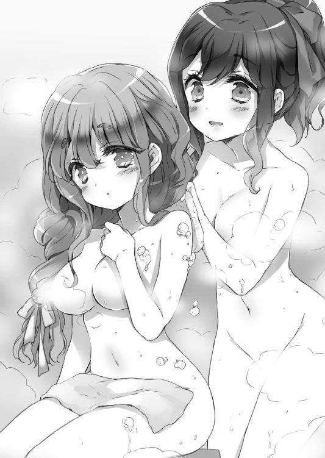
「ああ......愛菜とよう一緒に行っておった店じゃな。奴のお気に入りじゃったからのう」
「............」
その会話に何故か、眞奈花が少し寂しそうに湯をすくって顔を静かに浸した。
「婆さまは何を食べて大きくなったです？」
「ワシは、よくひじきを食っておったべさ」
「ひじき......」
「ただ、ひじきを食っても背は段々縮んだべ」
「微妙な情報じゃな......」
しかも、身長とのトレードオフは、そう身長が高くない菜波としては悩ましい。
「菜波ちゃんは何を食べて、そんな感じです？」
「そんな感じとはなんじゃっ!?」
そんな感じとは残念な感じである。
「わらわは、たこわさが好きじゃな」
「お姫様なのに!?」
眞奈花がショックを受けた。
「まあ、菜波坊はこの間まで庶民だったべからなあ」
「あと、とろろ昆布とか好きじゃな」
「お姫様なのに!?」
眞奈花がショックを受けた。
「まあ、菜波坊はこの間まで庶民だったべからなあ」
「眞奈花ちゃんは何が好きです？」
心なしか、ただの好きな食べ物談義になり始めている。
「わたくしは、毛蟹が好きですね」
「「そこはかとないセレブ感（です）（じゃっ）!?」」
お嬢様とお姫様が、この話題一番の高級感を感じ取っていた。
皆で楽しいお風呂タイムを堪能していると、お風呂の扉が不意に開く。
「あ」
入って来たのは、忍者林瑠璃その人である。
「あ、瑠璃ちゃんです！ 一緒に入るです！」
「ちょ......誰とも顔を合わせたくないから、わざわざ時間をずらして入りに来たのに、何であなた達いるの......？」
「それを見越して、わざわざ時間をずらして入りに来たです」
「嫌がらせ!?」
「というのは冗談で～、単なる偶然ですよです」
「もう、この寮の人は全員お風呂に入ったので、最後にちょっと入れて貰うつもりできたのじゃが。......帰ろうとせずともええじゃろう。袖振り合うも多生の縁じゃ。クラスメートでもあることじゃし、浸かっていったらどうじゃ？」
「......はあ」
凄い嫌そうな顔をしてから、瑠璃は、茜達から一番遠い所で身体を洗い始めようとする。
そこへすかさず、茜がしゅたたたたたとやってきて、頭を洗ってきた。
「ちょ......!?」
「どこか痒い所はありませんかです？」
茜に瑠璃が冷たい視線を向ける。
「......友情ごっこがむず痒いです」
「この辺ですねです？」
「その辺は旋毛よ!!」
瑠璃の旋毛がもしゃもしゃ洗われる。
その後、瑠璃は、颯太すらも諦めさせたと言われる茜の友情アタックの猛攻に晒され、ぐったりしながら湯あたりした。
お風呂から上がって、別れた場所で颯太を待つ茜達。
「遅いのう、颯太の奴め」
「はいです。でも、何だか、こうして颯太くん、まだかなーって待っているの、ちょっと楽しいです」
「神田川だべなあ」
「違うです、魔法ヶ沢です」
「苗字じゃねえべ!?」
そうこうしているうちに、颯太が小走りにやってくる。
「ごめん、お待たせ」
「殿下、男の子なのに、長風呂でいらっしゃいますねえ」
「いや、風呂は早々に上がったんだけど、男子達からみんなにってお土産をあれこれ貰ってたら、こんな時間に」
「お土産......アイスです？」
「うん。風呂上がりにね」
「ちゅーても、もう、ほれ、颯太坊が待たせるべえから、洗い髪が冷えてしもうたべさ」
月麦が颯太の上に登って、颯太の手を取り、茜の髪に触れさせる。
「......ぽわぽわ、ふかふかだな。温かい」
「えへへ、念入りにブローしてきたです」
「時代性の違いだべ......!!」
月麦が颯太の上でのポーズを取って、貧しい時代の日本の銭湯で風呂上がりに男女が待ち合わせる時の情緒を失うという、時代の移り変わりを嘆いた。外人なのに。
就寝前には、みんなでちゃぶ台を囲んで宿題をする。
なお、月麦はお婆ちゃんで夜が早いので、宿題をやらずに既に寝てしまっている。朝４時頃に早起きしてやるようである。
ペンの走る音が静かに流れる中、眞奈花が颯太のノートをチラチラ見ては、自分のノートに書き写す。
「カンニングすんな!?」
「あうち！ だ、だって、殿下......日本語が難しいので......」
確かに、日本語が喋れるとはいえ、いきなり高校の現国の課題はやや難易度が高いかもしれない。
「......教えてやるから、丸写しはよせ」
「身に余る光栄です、殿下！」
「大げさな。どれ......？......。......。......」
嬉しそうに恐縮する眞奈花の頭をグリグリと撫でてやってから、颯太が眞奈花のノートを覗き込んで、沈黙する。
「殿下？」
「これ、何語？」
「日本語ですよぅ」
「ていうか、漢字を適当に創作するな!? なんだ、この、人偏に苗って漢字は!?」
「......ねこ？」
「こんな人間っぽい猫があるか!? 課題の前に、漢字の書き取りからだ！」
「ふえぇ......」
ふえぇ系メイドの眞奈花が、追加されたタスクに半泣きになった。
とはいえ、颯太の厳しくも愛情ある指導を受け、時に涙目になりながらも、嬉しそうな眞奈花だ。
小休止。
颯太がトイレに立ったタイミングで、茜がうーんと背伸びをしてから、ちゃぶ台にべたぁっと突っ伏して、眞奈花を上目遣いに見てくる。
「眞奈花ちゃん、いいなあです。颯太くんと凄い仲良しさんに見えるです......」
「そ、そうですか？ わたくしはむしろ、茜お嬢様が羨ましいですよ。凄く大切にされているというか。わたくしなんか、殿下に雑に扱われてる感じですし」
「え～、雑に扱われるの羨ましいです～。わたしも颯太くんに雑に扱われてみたいです～」
いいなーいいなーとちゃぶ台の上で上半身をゴロゴロ転がす茜。
「何でですか......丁寧に扱われる方がいいじゃないですか」
「そんなことないです～。雑な方が仲良しっぽくて、気の置けない感じが出てて良いと思うです～」
眞奈花のゆるふわぽちゃ感に引っ張られるのか、茜の喋りも語尾のあたりに若干ゆるふわぽちゃ感が増している。
「眞奈花ちゃん、眞奈花ちゃん、颯太くんに雑に扱われるコツを教えて欲しいですっ」
「コツを......ですか」
「そうです。靴ではないです」
「殿下に雑に扱われる靴を!?」
「スパイクです？」
「何か痛そう!?」
「ちゅーかじゃなー」
どんどん頭の悪くなる話に、興味のない素振りをしつつも気になってしょうがなかった菜波がようやく口を差し挟む。
「単に、眞奈花が愛菜に似ておるので、その距離感の延長できておるのじゃろう。まあ、眞奈花がポンコツメイドじゃから雑になりやすいというのはあるじゃろうが」
「酷いおっしゃりよう!?」
「わたしもポンコツお嬢様になればいいです？ ふわ!? 自分でお嬢様とか言っちゃったです!!」
『ポンコツじゃ......』
『ポンコツですよね......』
既にポンコツお嬢様になりかかっていることを、菜波と眞奈花は何となく感じ取っていた。
「ポンコツ......難しいです。とても難易度の高いチャレンジですねです」
真剣に悩みに入る茜を前に、果たしてそうだろうか......と、菜波と眞奈花が真剣に悩んだ。
「眞奈花ちゃんのポンコツ分はどの辺に隠されているです......？」
「すっかりわたくしのポンコツ性が既定路線に!?」
「後ろ頭のメイドキャップの中に隠れているです？」
「いえ......これは髪がまとめられて入っているだけですが」
「じゃじゃじゃじゃじゃ、じゃあ......」
何かが隠れていそうな膨らんだ部分を視線で捜す茜の目が、それはそれは豊かでしかも重そうな２つの胸の膨らみで止まる。
「ちっ、ちないますちないますっ、ここにはそういうものは別に隠れてませんっ！」
「ですよねです......」
眞奈花に負けずとも劣らない自分の膨らみを、ぱよぱよと下から持ち上げてみながら、茜が呟いた。
「それだと菜波ちゃんがポンコツじゃない感じになってしまうです」
「わらわのポンコツ性が既定路線に!?」
ポンコツ姫扱いされる菜波がショックを受ける。
「取りあえず、でも、颯太くんが雑に扱いやすいのは、見た目から入っているというのはあると思うので、せめて、わたしもちょっと眞奈花ちゃんに近づいてみるです」
「？」
颯太がトイレから戻ってくると、茜の髪がメイドキャップによって後ろでまとめられ、水色のリボンが頭上で結ばれていた。
「ふわっ!?」
その状態で、何食わぬドヤ顔で正座して宿題を続けている茜を見て、颯太が変な悲鳴を上げる。
「............」
「............」
緊張感溢れる様子で、颯太が茜を凝視し、そのまま対面に着席する。
「............」
その颯太の隣では、茜と取り替えっこした赤いリボンをサイドに揺らす眞奈花が無言でドヤ顔を向けてきていた。
「............」
それを無言で見遣った真剣な顔の颯太が、びしぃ！と眞奈花のおでこにデコピンを見舞う。
「あうち！ な、何するんですか、殿下!?」
「それはこっちの台詞だ。何だ、その巫山戯たリボンは......？ 高校生にもなって、リボン......何を目論んでいるというんだ......？」
リボンを付けている菜波と茜と眞奈花がむくれ顔をして、暴論を吐く颯太の目を息の合ったタイミングで揃って突いた。
「ぎゃあああああああああああっ!? 目がっ!!」
颯太が畳の上を転がる。
「てゆーか、眞奈花、お前!!」
「ふえぇ!? すっ、すみません、殿下っ！ つい、つられましたっ!!」
ぺちーんぺちーんと颯太が眞奈花の膝頭を叩いた。
「ふえぇ、痛いです痛いです、殿下っ！」
「あっあっ、雑いですっ、凄く雑い感じですっ」
正座のまま後ろに後ずさって攻撃を回避しようとするも、ぷにぷにした膝に攻撃を受け続ける眞奈花を、茜がいいなあと指をくわえて見る。
「大体、何だ、この似合わないリボン......、......、......」
「？......殿下？」
今は眞奈花の付けている、茜から借り受けた赤いリボンを、颯太が指先でくいくい引っ張ってきた。
「......これはこれで似合うな」
「え、そ、そうですかっ？ えへへぇ、こういうのも今度買ってこようかなぁ」
はにかむ眞奈花を、少し保護者目線で微笑ましく見つつ、リボンをくりくり弄ってくる颯太。
それを、はわわ状態で見る茜と、ジト目の菜波......のうち、茜が耐えかねて、顔を覆ってブリッジをした。
「はぅわ！ そっちが正解だったです！ 今は赤リボンが弄られるターンだったですっ！ 茜さん、チョイス大失敗です！」
「？？？」
悶絶している茜の謎行動に、颯太が頭上に疑問符をいっぱい浮かべる。
と、眞奈花が颯太に耳打ちしてきた。
「殿下、殿下、茜お嬢様は、殿下に雑に扱って欲しいそうなんですよ」
「何で......？」
「話せば長いことながら......」
こしょこしょと内緒話をする颯太と眞奈花を、ブリッジした状態のままの茜が顔を覆った指の隙間から見る。
「あまつさえ内緒話です～っ！ どうしてです！ どうして、わたしはずっと一緒に苦楽を共にしてきた赤リボンさんを信じてあげなかったですかですーっ!?」
よく分からない罪悪感と戦い始めた茜が、気の毒になってきた颯太は、眞奈花から聞いた経緯を脳内で咀嚼して、どう接するかの最適解を考えた。
そして、茜の後ろ頭のメイドキャップを下からぎこちなくぽこぽこ叩く。
「な、なんだ、茜。こんなポフポフした物つけて。ポンコツ成分がぎっしり詰まっていてみっともないぞ～」
「殿下、酷い！」
「うっさいなっ」
茜を雑に扱う緊張感でいっぱいいっぱいの所を横から口を挟まれた颯太が、眞奈花の頭の両脇の赤リボンをつかんで上下左右に頭ごと、ぐらんぐらん揺すった。
「はわ～っ、殿下、目が回ります～っ！」
茜が『あぅ～っ、やっぱり、赤リボンさんの呪いです～っ』と半泣きで、颯太と眞奈花がじゃれるのを見ていることに気づき、颯太がハッとなる。
「こ、このポンコツ袋め～......」
「はわ！ 颯太くんが私の後ろ頭を鷲づかみにっですっ。雑いですっ。これが雑い扱いというものですっ。あはははっ、楽しいです楽しいですっ」
「何がそんなに楽しいのじゃ......？」
大喜びの茜を、冷めた様子で見る菜波。
「あははは～、菜波もポンコツリボンがお似合いだぞ～」
それに気づいた颯太が、菜波のポニーテールを持ってもふもふする。
「誰がポンコツじゃっ!?」
がぶぅっ!!と菜波が颯太の頭に囓りついた。
「あっあっ、雑いですっ。菜波ちゃんの颯太くんへの扱いが雑いですっ。わたしも試しに颯太くんを雑く扱ってみたいですっ。わ、わたしも、颯太くんを囓っていいです？」
「駄目だっ！......痛たたたっ、痛い痛いっ！」
茜に怒鳴りながら、なおも菜波に囓られ続ける颯太が悲鳴を上げる。
夜も更けてきた頃、１１１１１の字になって床に就く。菜波の寝相によって、１１１２１の字になったりもする。寝相悪いな！
菜波の強硬な主張により、防波堤と称し、寝る場所の順番は、茜、眞奈花、月麦、菜波、颯太......なのだが。
『......うぬ』
隣で吞気に寝息を立てている弟を、寝返りを打った菜波が恨めしげに見つめた。
『何でこやつは、緊張もせず、ぐーすか寝ておれるのじゃ』
つんつんと頰を突く。
『わらわがこんなに......意識して眠れずにおるというのに。......大体じゃ、こんな風に並んで寝ておったのなんて、小学生の低学年の頃までじゃろが。こんな......手の届く距離で......寝息が......頰にかかりそうな......距離で』
見ていれば見ている程、菜波は切ない気持ちになる。
こんなにも近くにいるのに......決して手の届かない少年を。
『公国にいた頃は、睡眠カプセルとやらを七徳院に使わせて貰ったものじゃが......。あれはよう眠れて便利じゃったな。ただ、何か凄い夢を見ていた気がしても、ぐっすり寝すぎて、全然夢の内容を覚えておらぬのが唯一問題じゃったが......』
菜波は知らない。
それは、グリモワールと呼ばれる量子コンピュータに繫がる端末カプセルであったことを。
そして、その先に繫がっていた〝ある世界〟での出来事を......。
１週間後。
一部再建されたクエスト寮を、颯太は感慨深く見遣っていた。
仮想世界で賑やかに暮らした面影を見、心落ち着く物を感じないではいられない。
「やっただな、颯太坊」
「......はい」
すっかり定位置になった颯太に抱っこされるポジションの月麦と微笑み合う颯太を、『何じゃこりゃ？』という何とも言い難い顔で、茜と菜波と眞奈花が眺めていた。なんじゃこりゃ言ってるじゃねえか。
「さあさあです、中に入って、みんなで完成式典ですよですっ！」
「うむ、世話になった分、今日はワシらがホストとなって、再建に手を貸してくれた旗ヶ谷学園の皆をもてなさねばなるめえべさ」
「ホストといえば、颯太くんですねです！」
「何でだよ!?」
茜はどうも、色んな面を持つ颯太を見てみたいようで、甘えん坊の颯太や自堕落な颯太の他、ホストっぽい颯太も見てみたいという願望があるようで、『全く意味が分からんのじゃ』とは菜波の弁である。
クエスト寮の中に入っていきつつ、眞奈花が未だ工事中の箇所も多く残る寮内に目を遣って言った。
「そういえば、部屋割りとか決めてなかったよぅ」
「わらわ、２階の角部屋がいいのじゃっ!!」
「わたし、颯太くんのお隣がいいですっ」
「あと、わらわが寮長じゃからな!! やはり、取り仕切るのは上に立つ資質のある者がやるべきじゃてな！」
そうだった。
仮想世界で住み始めた時も、そうだったと、颯太は思う。
少しずつ。
少しずつ。
重なっていく。
思い出のクエスト寮と、現実のクエスト寮が。
その感慨深さに、颯太は少し涙ぐみそうになる。
それを押し殺し、颯太が言う。
「さて、みんなが来る前に準備しないと。忙しくなるぞ！」
「はい、このデキるメイドにお任せあれ、殿下!!」
元気に万歳をした眞奈花の手から皿が滑り落ちて、景気の良い破砕音が鳴り、何がデキるのかを小一時間問い詰められる眞奈花であった。
数時間後。
クエスト寮前の空き地に、クエスト寮再建に手を貸した生徒達がずらりと勢揃いしていた。
「クエスト寮、落成おめでとうです───!!」
寮長が言うことになっていた台詞を、テンションが上がりきった茜がついフライングで言って、クラッカーを鳴らし、寮長が啞然となる。
が、もう始まってしまったので、その場の全員がクラッカーを次々に鳴らした。
そんな中、土研会の会長・匠が唇を尖らせる。
「いいけどよー、まだ、落成はしてねえからな？ 全員分の部屋と、台所と風呂とトイレ作っただけの仮状態だからな？ こんなもん、落成って言われた日にゃ、土木研究会の看板に傷が付く」
「どうどうです。看板は台風が来ると、飛ばされるものです」
「意味分かんねえ!? けど、お前ら、ほとんど台風クラスのはっちゃけっぷりだから怖ぇよ......」
一方。
「まったく......何で寮長のわらわの発声で落成記念パーティが始まらんのじゃ......」
「まあまあ、菜波姫様。あ、乾杯があるよぅ、乾杯の音頭を取るといいですよぅ」
「そ、そうじゃな。本当は茜がやるはずじゃったが、まあ、交代ということでええじゃろう。それでは、皆の衆、飲み物は行き渡ったかえ？」
一同が紙コップを掲げて、ＯＫの意思を示す。
「それでは、クエスト寮の落成を祝して、パパンがパンとカンパーイです!!」
先達ての打ち合わせ通り、颯爽と茜が乾杯し、寮長は呆然となった。
妙な踊りを踊りながら乾杯の発声をした茜に、颯太が苦笑を向ける。
「茜、乾杯の音頭っていうのは、東京音頭とかとは違うんだぞ？」
「やですようです、颯太くん。茜さん、そんなの分かってるです」
「そうか......？」
フォークダンス的な物を颯太と踊り始めかけている茜に、颯太が疑問を抱いた。
なお、フォークダンスは音頭ではない。
「おっ！ 颯くん、女の子とイチャイチャしてるわね。お姉ちゃん、応援するわよっ」
「ウチもやよっ」
とか言いつつ、颯太の腕を取って、両脇を固める菊乃と恵。
「でも、颯くんが女の子と一緒にお家に住むなんて......大丈夫？ 怖くない？ お姉ちゃん、怖いなら颯くんだけお姉ちゃんの家に住めるように言ってあげてもいいのよ？」
「ダダ甘やかしやよ......」
「ちゅーか、何でじゃ？ 普通は、男子と住む女子の方の身の危険を心配するもんじゃろが」
「お姉ちゃんの颯くんが女の子を襲うって言うの!?」
「颯太クンは男らしいからそんなことしないんやよ！ ウチならともかく！」
「男だから襲うのではないのかえ......まあ、確かに颯太にそんなことが出来るとも思えぬのじゃが。そして、メグは襲おうとしたら返り討ちにされそうじゃな......」
「確かに、ウチはそのうち男子に襲われそうって、ウチのお姉ちゃんに散々言われた身やよ......」
恵の瞳から光が失われた。
「颯くんはデリケートだから、女の子まみれの生活なんて、お姉ちゃん心配なの!!」
「大丈夫じゃろ。じゃって、いつも颯太が一緒にいるのって、子供の頃から、わらわと菊乃先輩と愛菜じゃったじゃろ？ それ以外見たことないのじゃ」
「菜波ちゃんとお姉ちゃんは、姉だからいいのっ！ 愛菜ちゃんは......アウトオブ眼中だとお姉ちゃん思うし」
「酷!!」
愛菜はいないが、眞奈花が何故か代わりにショックを受けていた。
「いっそ、お姉ちゃんもここに住んじゃおっかなぁ」
「ウ、ウチも......」
「いや、それは駄目だ」
意外にも颯太がきっぱり断ったので、菊乃と恵が目をパチクリさせる。
「僕は追われる身だからな......出来るだけ側にいて巻き込む可能性のある人は減らしたいんだよ」
「颯くん......」
「でも......菜波ちゃんや茜ちゃんはええんやよ？」
「わらわは言ってみれば当事者じゃからのう。元とはいえ婚約者じゃった茜も存在をよう知られとるじゃろう」
「颯太くんの当事者......良い響きです!!」
「眞奈花は......まあ、どっちゃでもええじゃろう」
「そうだな」
「姫様も殿下も酷い!!」
菜波と颯太の言い様に、眞奈花が激しいショックを受けた。
「颯くん......じゃあ、お姉ちゃんの為を思って......？」
「うん......お菊ねえ達には、出来るだけ平穏に、穏やかな生活をして欲しいから」
菊乃は、『そんなこと気にする必要ないのよ、水くさい!!』という言葉を辛うじて吞み込んだ。
颯太の優しさをこそ尊重したいと思ったからだ。
「......分かった。でもね、颯くん、寂しくなったらいつでもお姉ちゃんを呼ぶのよ？ お姉ちゃん、颯くんの為に、この寮にお泊まりしにくるからね？」
「ダダ甘やよ」
「ダダ甘じゃ」
「ダダ甘です」
お姉ちゃんの愛と業の深さに、恵達のみならず、クエスト寮落成パーティにやってきた人々がため息を吐いた。
ともあれ。
颯太、菜波、茜、月麦、眞奈花......新生クエスト寮メンバーでの生活が始まろうとしていた。
新しくも懐かしい暮らしは、颯太に何をもたらすのか、それは誰にも分からないが、颯太が女の子大勢と住みまくっているというあまり外聞のよくない話がもたらされることは確実であろう......。
幕間 七徳院 ・魔法少女福祉機構
・魔法少女福祉機構
颯太達が教室からクエスト寮に荷物を運んでいるその頃。
新宿から程近いオフィス街のビルの屋上から屋上を飛び回る黒い影があった。
「ちっ......!! 抜かった!!」
黒い仮面の下で毒突く女性は、黒いマントと膝裏まで伸びた金髪を空に棚引かせ、舌打ちをする。
その女性の名は、０。
ブレードフィールド公国議会、通称・七徳院の裏の長である。
まるで曲芸のように、ビルの谷間を飛び移る０を、同様に追跡するのは、奇しくも黒いレオタード状の衣服に黒い帽子、黒いタイツの少女......に見える人型の物体だ。
そう──人型の物体。
「ＭＥＲ‐０４１１──量産型・忍者林瑠璃......!!」
戦闘用にカスタマイズされた、魔法ヶ沢エレクトロニクス謹製のアンドロイドである。
量産型瑠璃は、先の天使客船侵攻の際に、天使ウイルスに冒され、人間に反旗を翻す動乱の陰の主役となっていたが、現在においてはプログラムのクリーンアップが行われ、人間の味方になっている......はずであった。
しかし、それはイコール、０の味方、という訳ではない。
今や、ブレードフィールド公国を乗っ取った天界軍の、情報戦に屈した欧州連合の手により送り込まれた量産型瑠璃は、０への刺客として彼女を追っていた。
「............」
高速移動をしながら、量産型瑠璃は、あくまで無言で、０に左手を向ける。
と、手首から先をパージした量産型瑠璃は、そこから肘までをバクン！と開き、内部のメカニカルな砲身を剝き出しにした。
「小型エヴェストルム砲か!!」
七徳院が技術供与をした兵器で、自らが撃たれようとする皮肉に、０は自嘲の笑みを浮かべずにはいられなかった。
『くっ......!! 本来ならば、私があんな木偶人形如きに不覚を取るなど、あり得んというのに!!』
０は、忌々しげに自分の喉に巻かれた首輪に手を這わす。
『力場封環』──超高位の術者により魔法を込められた、対象の力を封印する魔導具である。
油断した隙に、生きた蛇のように這い、絡みつかれ、引きはがすことが出来なくなった物だ。
０はその呪いのアイテムによって、ほとんど全ての力を奪われながら、それでも僅かに残る超常的な力でビルからビルに跳躍した所を、量産型瑠璃に狙い撃たれた。
「しま......っ!!」
その瑠璃色の閃光の直撃を食らい、０は意識を失って、地上へと落下していく。
更に、量産型瑠璃は自由落下する０目がけて、量産型用標準装備である高周波アサシンエッジを抜刀し、追撃を試みる......が。
その刀身を、うっすらとしたピンク色に輝く根元に小さな一対の翼を広げた、先端に渦巻きキャンディ型の魔力発生装置を宿した杖が弾き、量産型瑠璃がその反動で、後ろのビルの屋上に着地する。
「計算外因子の介入を感知しました。命令に従い強制排除を行います」
瑠璃が、その翼持つ杖を手にする少女を見据えて、機械的な合成音声を発した。
一旦、０から標的を自分に変更されたその少女は、不敵に微笑む。
「困るでありますな」
セパレートのへそ出しでありながら、キュートさを失わないフリルとリボンで彩られている愛らしい衣装を着たその少女は、ビシッ！と渦巻きキャンディのような杖の先を量産型瑠璃に向けた。
「我々の平和なシマを、戦闘行為で荒らすとは、太いお姉さんでありま......あれ？ 瑠璃お姉ちゃんでありますか？」
見知った顔によく似た量産型瑠璃を見て、眉間に皺を寄せる少女の肩に、羽をはばたかせてくるんと飛んできた手の平サイズの妖精が腰掛けて注進する。
「あれは量産型・忍者林瑠璃よ」
「にゃんと！ 瑠璃お姉ちゃん、量産されていたでありますか......」
「だから、気兼ねなく倒してしまって大丈夫よ」
「そういうことであれば、見せてあげるでありますよ、リヴェドちゃん」
少女が、サイズ故に歪んで聞こえる声の妖精──リヴェドにウインクをした。
「この、魔法少女福祉機構・新事務総長──」
全次元80億の魔法少女達の頂点に、つい最近、新たに立つこととなった、その少女は、クルクルと魔法の杖を回して見せながら言う。
「〝魔法少女みらくるみん〟の力を!!」
意識を失い、地上に叩きつけられた０は、自らの過去を夢に見ていた。
少女の頃から始まる、彼女の数奇な人生の夢を──。
異世界。
デルタ王国と呼ばれる、その国家には、ブレードフィールドという古い古い一族が存在した。
ブレードフィールド家は、デルタ王国の伝承にある『はじまりの旗の物語』と呼ばれる英雄譚に登場する、女騎士の家系に当たる。その家の血族は、王国を救った少年の忘れ形見を宿した女騎士の子孫達なのである。
ある寒い寒い冬の年に、ブレードフィールド家に一人の少女が生まれた。
神楽。
そう名付けられた少女は、その血統に恥じることなく、騎士として王国に仕え、やがて、頭角を現し、16歳という若さで騎士団長の任に就く異例の昇進を果たす。
......が、城の稽古場で剣を振りながら、神楽の表情は晴れやかとはいかないでいた。
「浮かぬ顔ではないか、新・騎士団長殿」
壮年の男に声をかけられ、肩まで伸びた艶やかな金髪を翻した神楽が振り向きざま、男の名を呼ぶ。
「ゴトフレド卿」
神楽の後ろ盾ともいえる、ゴトフレド前騎士団長は、他ならぬ彼女を後任に推した筆頭である。年齢的に剣技の冴えの絶頂期とも言える今、彼が騎士団長の任を退かねばならない理由は１つ。死病に冒されているのである。
「若輩のお前に、騎士団の内外からの風当たりが強いことは理解出来るが、お前自身が隙を見せては困るな」
「申し訳ありません......」
「構わん。初任務をこなせば、いくらか自信も付こう」
「初任務......？」
「うむ。騎士としての誉れだぞ。怪物退治だ」
ヴィレッジイーター。
この時期、デルタ王国北東部の国境付近を脅かしていた謎の怪物である。
山岳地帯の幾つもの村の人間が、村ごと、次々に姿を消すという怪事件の犯人、現場に残された巨大な足跡の主。
その姿さえ分からぬ謎の怪物に付けられた名が、ヴィレッジイーターであった。
新任騎士団長初出撃の噂を聞きつけ、神楽が団長の下に就く隊長職を務めていた頃の騎士隊副隊長で、神楽と共に出世したライル・ホワイト副騎士団長は、彼女の留守を預かることになったのだが、その彼が心配そうに告げてきた。
『団長殿、気をつけてくださいよ。今回の件、怪物の仕業に見せかけた隣国の策謀だという話もあります』
調子の良い面もあるが、神楽と共に戦場を駆けたライルは、彼女にとっては数少ない味方、掛け替えのない戦友であり、騎士団長としての神楽の片腕でもある。
ホワイト家は嘗ては公爵の位まで上り詰めた名門であったが、数代前の王子と王弟の争いで、敗北した王子派についた為、失脚し地方の小領主とは名ばかりの村長へと追いやられた一族だ。
ライルは一族再興を夢見ている。神楽の片腕と目される彼にとって、それは、神楽の立身出世と無縁ではない。信頼と打算によって、神楽の一番手の部下と誰もが認めるライルには、しかし、もう一つ......神楽への秘めた思いもあった。
数日後。
神楽・ブレードフィールド騎士団長は、部下を率い、怪物退治へと遠征を開始する。
難航するかと思われた調査であったが、神楽達は、まだ被害を受けていない近隣の村で、あっさりと怪物に出くわした。
それは、怪物としか形容しようがない代物であった。
何かの動物の体軀を歪めに歪めた結果、誕生したような、何もかもが歪な形状。
瘤だらけの腕は、肘で身体を支える代わりに手の平が２度曲がりくねって空を向き、先端の指からは血の泡が常に噴き出している。脚も同様で、右足などは途中で枝分かれして木の枝のような脚があちこちから更に生えていた。
胴体には、瞳孔が幾つもあるような瞳がぎょろぎょろとあちこちに埋もれている。
頭部は最早、生物とは言えないかもしれない。溶けて歯が不規則に並ぶ口と、奇妙な触角だけが伸びているのだ。
「なん......だ、これは......？」
それは、生理的嫌悪感と恐怖を同時に呼び起こさせる、まさに怪物。
そして、怪物は『ケケ』と胴体の瞳から声を発して、神楽の背後で固まっていた部下の騎士の横に、瞬間移動をし、粘土をつかむように重装備の鎧を着た騎士をねじ曲げながら指先で摘まむ。
......と、騎士は、到底人間のものとは思えない悲鳴を噴き出しながら、最初はじわじわと、やがて凄まじい勢いで、蒸発していく。
それを見た神楽は、正気を失いそうなのを、どうにか押し留め、叫んだ。
「撤退───────ッ!!」
逃げる。
必死に逃げる。
部下が１人、また１人と、怪物に吞み込まれ咀嚼され、生きたまま石に姿を変えられ、頭の下半分だけを残して消滅し『タスケテ』と口だけが動き続け、次々にその生を終えていく。
そして、崖の道へ追い込まれた神楽は、決して低くはない眼下に広がる森目がけて、決死の思いで飛び込んだ。
遠くから声が聞こえる。
遥か遠く。
「おいおい、見たか？ 今、空から女が降ってきたぞ？」
「ああ、私の故郷では、そういう漫画とかありますよ？ その相手と恋人とかになるんです」
「お前の故郷恐ろしいな......。絶対にそんな所へは行きたくない」
２人組の女性の声......。
落下の衝撃で一度は失神していた神楽はその声を聞きながら、もう一度気を失った。
どうにか、木の枝がクッションにクッションを重ね、一命を取り留めた神楽が痛みに目を覚ました時、既に周囲は日が落ちていて、たき火を囲む２人の美少女が干し肉を囓っているのを見る。
「ぅ......！」
「あ、起きましたね～。大丈夫ですか～？」
「まだ動かん方がいいぞ。あばらやら脚の骨やらが折れていたからな。その胸に貼った回復呪文のかかった札がどうにか治してはいるが、まだ少しかかるはずだ」
１人は水色の髪をした狐耳の女性......亜人のようだ。
もう１人は、もこもこした髪の、眼鏡をかけた少女......露出の多い黒い鎧を着ている。剣士だろうか。
「お前......達......は？」
「旅の者だ。私はエデン。エデン・リ・プライ」
「旗立深雪と言います。異世界から来ました」
「おい、深雪。ほいほい素性を人に話すなと言ったろう」
「あ、そうでした。ついうっかり」
魔導人工衛星群グリモワール。
その仮想世界内において、曾祖父失踪の謎を追った深雪は、本来、この世に実存在を持たない電子の魂だけの存在であった。
しかし、仮想世界を旅するうち、彼女は自らの存在の真実を知り、更に、グリモワールを通して現実の異世界の召喚士にコンタクトを取ることにより、仮想世界から現実世界に現出する方法をつかんだのである。
全次元における三大召喚士の１人である、その召喚士が用意した空っぽの人造人間の肉体。
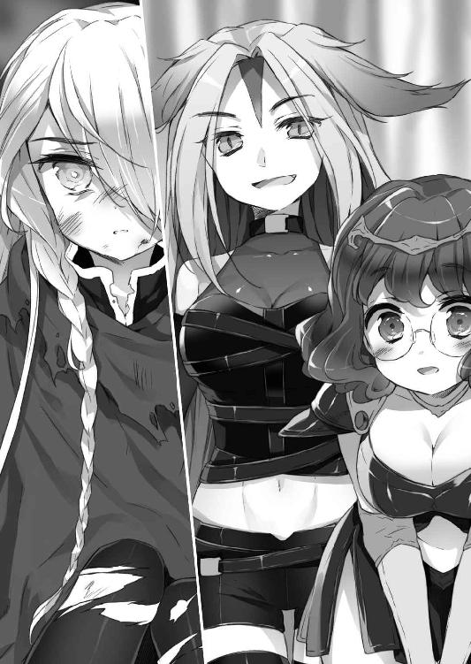
その肉体の中に、電子の魂〝旗立深雪〟は召喚される。
但し、深雪が召喚された先は、召喚士が暮らしていた異世界であった。
この世界で、既に幾つかの英雄的行動をし、この世界を旅していたエデンと知己を得、行動を共にするに至る深雪は、まさに彼女の物語において、主人公と称するに相応しい冒険をこなしていた。
そして、やがて訪れる決戦の場へと、導かれることになるのだ。
再び、自らを生み出したあの『仮想世界』の決戦の場に。
──そう、深雪はここが〝過去の〟異世界であることを知らない。
次元の壁を越える時に、時間をも超えていたのである。
夜が明ける頃。
どうにか動けるようになった神楽は、彼女らに礼を言い、ここから出来るだけ早く離れるよう忠告する。
「その鎧の紋章はこの国の騎士だな？ こんな山奥で単独行動もなかろう。何か事情が？」
エデンにそう問い返された神楽は、少し迷って怪物に遭遇したことを話した。
険しい顔で神楽の語る怪物の風体を聞いていたエデンは、ゆるりと深雪を見る。
「ビンゴだな」
「間違いありません。『神竜の眷属』です」
「神楽卿、お前はすぐに下山しろ。生きて城に帰りたくばな」
エデンの珍しく相手を思いやった言葉に、しかし、神楽は激した。
「な!? 部下が全員やられたんだぞ!? おめおめと私だけが逃げ帰れるか!! 必ず奴を倒さねば、騎士の名折れだ!!」
「命あっての物種なんですけどね～......」
その後、説得を試みるも、頑として聞き入れない神楽に諦め、同行を許す深雪とエデン。前者は神楽を守るつもりで、後者はいざとなれば見捨てるつもりで。
神楽の情報に従い、怪物と遭遇した場所へと、再び山を登る一行。
神楽は、ふと、前を行くエデンに尋ねてみた。
「お前達はあの怪物を捜しているような口ぶりだったな。アレがなんなのか知っているのか？ あんな化け物は見たことも聞いたこともないのだが」
「............」
エデンはチラリと神楽を見て、ふんと鼻で笑う。
「好奇心は猫を殺す、か。まあいい、教えてやろう。お前が出くわしたのは、『神竜の眷属』だよ」
「神竜......ＳＢＤとかいう？ 神話の生き物の？ 旧世界の神を滅ぼしたっていう？」
「神竜は実在した生命体だ」
「............」
深雪はその話には加わらず、無言で神楽が向けた視線にも応えようとはしない。
「運命をねじ曲げるという、恐るべき力を備えた絶対的な存在だよ」
「運命......」
「その眷属......側近中の側近だった者もまた、微少ながらもその力を受け継いだのだ。お前が話した部下の死に様は、『人間として生きる』運命をねじ曲げられた結果だよ。......もっとも、その力の代償として、神竜の眷属自身もまた、人間としての生をねじ曲げられているようだがな」
「............」
「私達は、故あって、その神竜の眷属の暴走を止める為にここまで来たんですよ」
ようやく深雪が口を開く。
「危険なので、本当に帰った方がいいんですが......」
「危険だというのなら、お前達もだろう？ 私とて騎士だ。ただの旅人に討伐を任せる訳にはいかん。それに、これは、私の部下の弔い合戦だ」
その最後の言葉が、深雪とエデンを情に流させしめたとも言える。
しばらく無言で歩いていた３人だが、不意に神楽が口を開いた。
「しかし......神話の生き物と戦うことになるとは。......だが、そういえば、神竜というのは、どうして〝ＳＢＤ〟というんだろうな」
「神竜、というのは俗称というか......肩書のようなものだ」
エデンは空を見上げて言う。
「星剣、というのを知っているか？」
「星剣......星をも砕くと言われるお伽噺のあの伝説の剣？」
「そう、星剣。お前の言うように、星をも砕く故とも、その刀身に星の輝きを湛え、一振りすれば流星のように輝きが尾を引く故にそう呼ばれるようになったとも言われる、星の剣だよ。お伽噺ではなく、現実に存在するのだがな」
彼女の瞼の裏には、その輝きが懐かしく思い出され、映っていた。
「最強の剣だといわれ、世界に13本しかないというその星剣を、かの偉大な神殺しの竜は、牙に１本、右爪に２本、左爪に１本、角に１本、尻尾の先に１本、そして逆鱗に１本、身に宿している」
「最強の剣の過半数を......」
「そうだ、故に、そは、呼ばる」
嘗て口伝として伝わり、今はほとんど失われた一節を、エデンが口にする。
「星剣竜......スター・ブレイド・ドラゴンと」
その語り口に圧倒され、神楽はしばし言葉を失う。
神楽の意識を引き戻すように、深雪がやんわりと告げた。
「心してくださいね、私達が今から相対するのは、アカシックレコードに刻まれた運命すら自在に操れると言われた神竜の、その眷属の歪んだ生き残りですからね」
エデンとは真逆の、深雪ののほほんとした口調の深刻な言葉に、神楽は息を吞んだ。
神楽が怪物と遭遇した村には、既に怪物の影も形もなくなっていたが、足跡が残されており、それは村はずれの洞窟に続いていた。
３人は深い深い洞窟を松明片手に進んでいく。
洞窟の中では、白骨が転がり、動く毒蛇や動く毒蜘蛛が襲いかかってくるが、エデンが素手で払いのける。
そして、洞窟の最奥部。
そこでは、強烈な腐臭と共に、あの怪物が無限に生えてくる自分の腕を食い続けていた。
その異様に、流石のエデンと深雪も絶句気味に呟く。
「これはまた......」
「元々人間だったとは思えない状態になっていますねぇ......」
その言葉に、神楽が悲鳴染みた声を上げた。
「人間!? これが、人間だというのか!? この怪物が!?」
「そうだ。彼は神竜の側近──〝三つ首の竜〟の二つ名で呼ばれた三人衆。そのうちの１人、ヴィデネー神父。これは、人間として存在する運命を狂わされた者の末路なのだ」
言いながら、こちらを認識したらしき怪物に、エデンが二刀流の短剣を抜いた。
「深雪、最初から全力で行け。奴の攻撃は魂まで届く。お前の身体は替えがきくだろうが、魂まではそうはいかんからな」
「は～い」
気の抜けるような可愛い返事ではあったが、黒い刀身の剣を抜いたのが合図であったように、深雪とエデン、２人から激烈な殺気が発せられるのを、神楽は感じた。
彼女らから溢れ出るそれは力場、とよばれる気力・魔力といったものの総称である。
普通の人間が感知出来るものではない。修行を積んだ高位の使い手のみが感じることの出来るものであるが、今の深雪とエデンのそれは、常軌を逸したレベルの力場であり、神楽にもその尋常ではない、目に見えない力を圧として感じられた。
『なんだ、コイツらは......!? コイツらの方こそ化け物じゃないのか......!?』
神楽の心の声が届いた訳ではなかろうが、エデンがチラリと神楽を見る。
「お前はそこから動くなよ」
「......!!」
動きたくても動けなかった。
怪物と、エデンと、深雪、三者の異常な力場に、足が言うことを聞かないのだ。
と、動き出した怪物が間を詰め切るより一瞬早く、エデンがフッ！と短剣の斬撃で、怪物の腕２本を切り飛ばす。
「深雪!!」
「魔剣二式、アンテノーラの月......」
深雪が上段から斜め下に切っ先を向ける変則的な構えから、瞬時に怪物を両断した。
ゆっくり真っ二つになる怪物に、神楽は肺の中の酸素を吐き出しながら言う。
「やった......!!」
が、怪物の腕は、元の腕より更に禍々しい形になって瞬時に生えてきた。
「まだだ！ 奴の持つ異能、超再生だ！ 気を抜くな、深雪！」
「了解～」
「ふ......奴め、一筋縄ではいかんな。流石は〝三つ首の竜〟のうちの１人のなれの果て、か。だが、そうそう何度も使える手ではあるまい。深雪、気にせず、切り刻め!!」
「はいは～い」
そこからは圧巻だった。
怪物は確かに驚異的だったが、それ以上に、深雪とエデンは圧倒的だった。
この２人こそが、圧倒的に、〝怪物〟だった。
どれ程の時間が経っただろうか。
永遠に続くのではないかと思える、怪物との死闘は、しかし、やがて終焉を迎えようとしていた。
最初の頃に怪物が使っていた時間の巻き戻し、超回復、変態、それらは、やがて鳴りを潜め、単純な戦闘へと移行していき、それに従って、深雪とエデンは怪物を圧倒していく。
そして、遂に、怪物は深雪の魔剣によって、斬り伏された。
怪物から力場が消えるのを確認し、深雪が魔気で溢れる剣を鞘に納める。
「思っていたより、苦戦しませんでしたね、エデンさん」
「私が鍛え上げたお前が、既に主の加護のない亡霊のような存在に後れを取るはずがない。......とは思っていたが、思いの外、敵の力が落ちていたか......神代の時から生きている代物だからな、劣化していても無理からぬところか」
冷静に勝因分析をする２人の横をすり抜け、神楽は急速に朽ち果てゆく怪物の前に立って見下ろす。
「......。......ありがとう、部下の仇を取って貰った。亡き命に成り代わり、礼を言う」
「いえいえ～」
と、のんびり微笑む深雪の視線の先、神楽の足下で、完全に力場が消えたはずの怪物の腕の骨がひゅんっ！と跳ね上がった。
「危......!?」
「え......？」
思わず神楽が振り返ったその瞬間。
物凄い力によって、そっと、怪物の指一本で、左の頰から左目を通り額までを撫で上げられた。
顔だけを触れられたに過ぎないはずなのに、神楽は身体中がバラバラになるような衝撃を覚え、そのまま、壁に激突する。
「ぐ......ッ!!」
「しまった!! 最後の一撃を残していたか!?」
「そんな!? 力場反応はもうなかったのに!?」
「力場を反転させてマイナスの力場で一瞬だけ動いたんだ!! おい、お前、しっかりしろ！」
赤く染められていく視界の中。
死を覚悟する神楽は昏倒しゆく意識で、最後に、粉々になって空気中に溶けていく怪物がもう一度『ケケ』と笑ったような気がしていた......。
数日後。
デルタ王国王都近くの宿屋の一室。
「!!」
怪物に食われる夢を見続けていた神楽は、苦しみから逃れたい一心で、ベッドの上で目を覚ました。
跳ね起きた衝撃で、額に載せられていた濡れタオルが落ち、それを載せてやっていた宿の娘がビクッとなる。
「ふわ!? お嬢さん、起きなさったですだか!?」
「ここは......？」
「王都の北の街道の宿屋ですだよ。お連れさんが看病してやってくれと言い残して、お代と一緒にお嬢さんを置いていきなさったですだよ」
「............」
痛みも苦しみもない。まるで何もなかったかのような自身の状態を訝しみながら、神楽は唯一の違和感である左頰付近に指を這わすと、そこには包帯が巻かれている。
そこで初めて、神楽は左目を含む顔半分が包帯に覆われていることに気づいた。
そして、特に痛みもなかったので、グルグルと包帯を解き、壁掛けの鏡を見て、神楽は衝撃を受ける。
触れられただけのはずなのに、斬撃で出来たような傷が、左額から頰にかけて走っていた。
が、それだけではそこまでの衝撃はない。
「何だ......これは......？」
エメラルドグリーンの瞳が、左目だけ真っ赤に変色していた。
視力が失われているということはなく、血よりも鮮やかな色をしているものの、瞳に損傷がある訳ではないようだ。
しかし、その変化が何を意味するかを悟る前に、彼女に訪れた異変は早くも牙を剝き始める。
階下から大勢の甲冑を着た者達の足音が響いてきたのだ。
足音は、神楽の部屋の前で止まり、バン!!と扉が蹴破られる。
身構える神楽は、だが、彼らの鎧がデルタ王国騎士団の支給品であるのを見て、緊張を解く......のだが、次に彼らが発した言葉に絶句した。
「いたぞ!! 反逆者、神楽・ブレードフィールドだ!!」
「宰相閣下と前騎士団長閣下の暗殺の容疑で連行する！ おとなしく縛に就け、首謀者、ブレードフィールド!!」
「な......!?」
神竜の眷属が残した神楽の傷。
この傷は表層的にはともかく、運命をねじ曲げる怪物の面目躍如とも言うべき爪痕を神楽に残していた。
それは、運命改変。
神楽が本来持っていた運命は、この時、既に大きくねじ曲げられていたのである。
王都に戻った神楽を待っていたのは、神楽を重く用い、騎士団長に推挙してくれた前騎士団長及び、彼と陰ながら反目していた宰相の２人の死、そして、その殺害の首謀者という汚名を着せられ、投獄されるという過酷な運命であった。
無論、そんな事実はない。
しかし、神楽は既に、彼女が元々歩むはずだった運命のレールを大きく歪められてしまっていた。
獄中での尋問は苛烈を極めた。
１ヵ月近い月日が流れ、すっかり疲れ切り、すり減った神経で、冷たい独房に身体を横たえる神楽は、深夜、鉄格子の開く音を聞く。
「......？」
うっすら瞳を開ける神楽は、嘗ての片腕、ライル・ホワイトの姿をそこに見た。
「ライル......？」
「団長、ご無事で？」
「無事なものか......」
「でしょうな。しかも、団長は明日、広場で斬首刑に処せられます」
「......ライル。私は暗殺など......」
「やってはいないでしょうな。しかし、今や、それを信じるのは俺ぐらいですよ。正攻法でお助けすることが出来ず、申し訳ない。団長の名誉を救うことは出来ませんが、お命ぐらいは、どうにか。という訳で、脱獄の手引きに参った次第です」
「脱獄......」
「外に駿馬を用意してあります。それに乗って、ティトの港町まで行ってください。船着き場にいる蝶の入れ墨を右肩に彫った船乗りが団長を安全な所まで運ぶ手はずになっています」
「しかし、脱獄の手引きなどしたと知れたら、お前......」
「まあ、実質バレるでしょうな。何しろ、どういう訳か、俺以外、どいつもこいつも団長の仕業と信じて疑わんのですから。しかし、この程度の罪なら、騎士位剝奪と一族郎党で辺境再追放ぐらいで済むでしょう。......どいつの差し金かは知らないが、つまらん陰謀のせいで、ホワイト家再興の夢もパーです。まあ、いずれ、公爵位は、俺の子孫にでも取り戻して貰うとしましょう」
「......私を見捨てればいい」
「申し訳ないが、どのみち、このままだと一生冷や飯ぐらいなんでね。団長に濡れ衣を着せた奴に一矢報いたいじゃないですか」
「ライル......」
「さ、早く。獄吏に気づかれます」
「......ありがとう」
柄にもなく礼を言う神楽に少し笑って、ライルは弱った足の神楽に肩を貸した。
彼の言う通り、嫌疑不十分のままに辺境追放となったホワイト家は、この後、数世紀を経て、彼の言葉通り、子孫によって再興される。
騎士団長となり、公爵位を受けたその子孫は、全次元最強剣士の７人に与えられる『七剣人』の称号を受けるまでの、高名な騎士となるのである。
一方。
命からがら王国を逃れた神楽が乗った船は、奴隷船であった。
そう。ここでもまた彼女の運命がねじ曲げられたのか、ライルの言葉とは裏腹に、彼女は奴隷として、とある場所に売られる。
精霊記念魔導学院。
精霊島と呼ばれる巨大な島を領土とする、学園国家の中枢である。
ここで、魔法使いの召し使いとして買われ、自暴自棄に日々を過ごしていた彼女は、運命の出会いを果たす。
まるで、それがねじ曲げられた先に用意されたものであるかのように。
神楽の運命を大きく変える人物──バルガド・フォートラン。
当代の黒騎士である。
黒騎士。
その名を名乗ることが出来るのは、世界で１人だけ。
『黒の刃』と『影の盾』を操る黒騎士は、長らく、この世界で最強の代名詞として伝えられてきた称号である。
傭兵として魔導師の警護をしていた老騎士・バルガドは、一目見て、神楽が騎士としての訓練を受けてきた者であることと、彼女の持つ瞳の力に気づいた。
そして、魔導師に頼み込み、身柄を引き受けた神楽に頭を下げて言った。
「頼む、カグラ。この老人の最後の願いを叶えてはくれまいか」
曰く。
「次代の黒騎士に......その為の修行を受けて貰いたい」
「......!!」
あの日以来......冤罪で投獄されて以来。
奪われてきた。
何もかもを奪われてきた自分が。
何一つ残っていないこの身に。
誇りを託そうとする人がいる。
その誇りは、何代にも亘って、継いできた魂の称号。
この世にたった一つだけの黒き砦の体現。
神楽は心が震えた。
「......承知しました」
神楽・ブレードフィールドは、もう一度、失われた誇りを取り戻そうとしていた。
３年後。
黒騎士、神楽・ブレードフィールドは誕生した。
稀代の大騎士と言われたバルガドは彼女に全てを伝え終え、今際の際に感動に打ち震えたという。
「最後の最後に、俺は、人生で一番の大仕事をやってのけた」
それ程に、黒騎士、神楽・ブレードフィールドは歴代の黒騎士の中でも、稀に見る最強クラスの黒騎士と呼ばれるに相応しい騎士だった。
バルガドに代わって精霊記念魔導学院の傭兵を務めた神楽は、その年月が10年、20年と経つうちに、自らの異変に気づいた。
歳を取らないのである。
親しくなった魔導師から、それが、神竜の眷属によって、運命をねじ曲げられた者が背負う業であると教えられる。
彼女は永遠に16歳のまま、生きていくことになるだろう。そう魔導師は告げた。
永遠の時を得た神楽は、やがて、精霊島を出、世界各地を転々とする旅の人となった。
故郷から逐電し、早50年が経とうとしていた。
神楽は、故郷へと舞い戻るが、そこには彼女が知っている故郷は最早存在していなかった。
国王は代替わりをし、見知らぬ者が騎士団長を務め、お尋ね者としての神楽をすら知る者もいなくなっていた。
安堵と絶望の中、神楽は、生家へ赴くが、ブレードフィールド家は既に取りつぶされ、一家は全員死罪に処せられていた。
神楽が可愛がっていた幼い弟が、獄中死したという文献を目にし、神楽は流石に落涙する。
次に、ライルの足跡を追う神楽は、国境付近の片田舎で、子と孫を残し、既にこの世から去ったライルの墓標に手を合わせ、自分を知る者のいない故郷を、寂寥感と共に去るのであった。
この世界に未練のなくなった神楽は、各地で、黒騎士の名に恥じぬ勇名を残すも、心を穿ち続け広げられる空隙に、荒む自分を自覚していた。
そんな時。
運命は、神楽に一つの再会を用意していた。
偶然、酒場で出会った、水色の髪と狐の耳を持つ亜人は、神楽の最初の運命の分岐点に確かにいた、あの時と変わらない姿でそこにいた。
「エデン......エデン・リ・プライ......!!」
「？......どこかで会ったかな？ その力場、さぞ高名な騎士とお見受けするが？」
「そうか......忘れたか。だが、お前が忘れても、私は忘れん。忘れられる訳がない。私は神楽・ブレードフィールド。お前が、深雪という少女と共に、神竜の眷属を倒した時、その場にいた者だ」
「......。......!? あの時の木っ端騎士か!? 待てよ？ 神楽......神楽だと？ 黒騎士・神楽か!? そうか......あの何の力も持たない、ただの人間が、黒騎士になったのか......いや、しかし、あれからもう百数十年は経つぞ？ その姿は......」
エデンの中で、あの無力な少女騎士と、噂の黒騎士が重なる。
「知人の魔導師は、神竜の眷属に傷つけられたことで、超常の生き物になったせいだと言っていた。先代黒騎士は、私の変色した左目が、先読みの目......数秒から数十秒先を見通す未来検知の異能を持つ目だと言っていた。お陰で、私もお前達、化け物の仲間入りだ」
忌々しく嘆く神楽の言葉を、エデンは真顔で聞いていた。
「神竜の眷属......奴め、最後の一撃で、自らの主が使う『運命改変攻撃』を行ったのか......!! なるほど。あの時のお前は確かにただの人間だった。運命など無縁の普通の人間。それが今や、運命という歪んだシステムに組み込まれ、その軛から逃れようとする力を手に入れるまでになったか」
エデンは微笑する。
「運命の生まれぬ場所より至り、運命の届かぬ場所へと上り詰めるか。私の轍を図らずも辿る......か」
「？」
「いや、見たところ、お前の魂を縛る運命の手はそれ程長くはないようだ。どうだ？ この世界を出てみるか？」
「世界を......？」
「そう。異世界に渡れば、お前の歪められ続ける運命から逃れられるやも知れん。私にまとわりつく強大で呪わしい運命はその程度では断ち切れなかったが、お前はまだ今なら、可能かもな。可能であると証明してくれれば、私にも、光明の欠片ぐらいは見えるというものだ。お前は、私の希望の結晶となってくれるやもな」
「............」
神楽は気づいていた。
目の前の女、エデンから漏れ出る夥しい力場に。
恐らく、初めて会った時にも、エデンの力場はダダ漏れだったはずだ。それに気づけるだけの存在になってしまった自分に、神楽は隔世の感を覚えずにはいられなかった。
世界の果てにある異界の門。
エデンに案内され向かった、深き迷宮の底に、その門はあった。
エデンに見送られ、門をくぐった神楽には、その先で、更なる波乱の人生が待っていた......。
地球。
西暦１３４０年、ヨーロッパ。
フランス辺境の森の中で、神楽は盗賊集団に囲まれ、追われていた。
『身体が重い......力場が出ない。これが、運命から解き放たれるということか。だが、盗賊如きに蹂躙され、死ぬことが、その代償なのか......!! くそったれめ!!』
そう。
異世界で、黒騎士として名を馳せた神楽の力は、異界の門をくぐり、この見知らぬ地では、全く自由に使うことが出来なくなっていたのである。
必死に逃げるも、嬲るように包囲網を狭められ気がつくと、神楽は下卑た笑いを浮かべる数十人の盗賊に完全に取り囲まれていた。
「へっへっへ、お頭ぁ、こいつぁ、上玉ですぜ」
「顔は傷つけるんじゃねーぞ、クソども。高く売れるからよ」
異境の地に住まう者も所詮人は人か、と神楽が唾棄する。
「......くそッ、ここまでか」
せめて、１人でも多く巻き添えにして死んでやろう、そう思った神楽が剣を抜いたその時。
「!?」
にじり寄る正面の盗賊の首だけが綺麗に宙を舞う。
どう！と倒れる首のない盗賊の後ろに、その男は立っていた。
「おいおい......俺に正義の味方みたいなことをさせるなよ。恥ずかしくなるだろうが」
自嘲気味にそう言い放った男は、無造作に側の盗賊の首を落としていく。
黒髪に東洋系の顔立ち、手にした日本刀が目を引くその男だが、より注目すべきは手にした刀が僅かに燐光を放っている点で、その一見して尋常ではない所に、カッとなった盗賊達は気づくことなく、襲いかかっていった。
「野郎!! 全員でかかれ!! 生かして帰すな!!」
「悪党は倒すのに躊躇いがいらなくて助かる」
最初に６人が一気に斬りかかるが、男は目にも留まらぬ速さの体捌きと刀捌きで、盗賊達の足を止め、口を開く。
「センティア流１号剣、回転王冠」
次の瞬間、彼を中心に円周上に位置していた盗賊の斧や剣や槍が、根元からへし折られて時計回りに宙に散り、その先にある盗賊の胴体をも上下に弾け飛んで血の花を咲かせた。
それは、その技の名の通り、鋼と血の王冠の如き様相を呈していた。
鮮やかな手並みに戦いた盗賊の間を、男は、ほとんど瞬間移動のような速さですり抜ける。
「センティア流５号剣、峻厳火炎」
まるで魔法の呪文のようだった。
いつの間にか、先程とは別の場所に立っていた男が、そう呟くと、神楽を追っていた盗賊達全員の身体が発火し、悲鳴を上げながら次々と倒れていく。
その断末魔が当然であるとでも言わんばかりに、確認することもせず、男がゆっくりと神楽のもとへと歩いてきた。
「大丈夫かな、異世界のお嬢さん？」
「マナを火種に、剣に気を練り込んで人体発火させたのか......。それに、あの移動速度と太刀筋、......たいしたものだ」
それは、黒騎士として研磨された神楽からしても、自分と互角に見える。
「お誉めにあずかり恐悦至極。お名前を聞いても？」
「......神楽・ブレードフィールド」
「......。ほう」
ずっと涼しい顔をしていた男が、少し驚いたように目を見開いた。
「よろしく、神楽殿。俺は、山風忍という」
謎の東洋人、山風忍。
神楽の故郷の匂いをさせる忍は、神楽に親切にし、この世界での力場の使い方や、様々な知識を与えてくれた。
時は、百年戦争開戦直後。
フィリップ３世の子、フランス国王フィリップ６世と知己を得ていた彼は、傭兵として神楽を推挙した。
「ふん、ブレードフィールド（Lamechamp）......か。戦場の匂いのする名だ。シノブが推すのだ。さぞかし、化け物染みた輩なのであろう。よかろう。余が貴様の腕を買ってやる」
黒騎士としての力を存分に発揮する神楽は、最初はフランス軍の兵卒として......やがて、将帥として、国王や軍に認められていくのである。
しかし、それは、居場所が与えられたということでも、勝ち取ったことでもない。
嘗て、彼女自身がエデンをそう見たように、神楽は〝怪物〟として、人々に使われているに過ぎないことをよく分かっていた。
『ならば、せめて、上手く使われてやろうではないか。元より、もう、私には居場所などないのだ。戦場こそが我が生きる場所よ』
そんな神楽の前に、１人の少年が現れる。
ヴァンと名乗ったその少年は、神楽の鬼神の如き戦いぶりに弟子入りを志願した。
素気なく断り続けていた神楽だが、ヴァンの熱意に負け、矢避け程度に思い、側に置くことにする。
しかし、この少年が戦闘に対する非凡な才能を有することを知り、神楽はヴァンに剣技を教え込むことを楽しみ始めた。
その頃には、神楽は自分が着ていた黒い鎧を打ち直してヴァンに与え、名実共にヴァンは黒騎士の弟子になっていく。
やがて、ヴァンは恐るべきスピードで黒騎士の剣技を吸収し、神楽をも上回る戦いを見せるようになるのである。
神楽は歴代の黒騎士の中でも、かなり上位に入る実力者と言ってよかった。
だが、ヴァンの潜在能力は常軌を逸していた。
戦争の最中、免許皆伝となったヴァンに、神楽は当代の黒騎士の称号を譲る。
自らの目的の為、神楽のもとを去るヴァンの背中を、神楽は万感の思いで眺め遣りながら、一つ、気になっていたことを尋ねた。
「ヴァン、お前のフルネームをついぞ聞かなかったな」
「今更かよ、師匠」
そう言って、ヴァンは不敵に笑う。
「ゼルヴァーン・クレッツベルンだ」
「......覚えておこう、黒騎士ゼルヴァーン卿」
歴代最強の誉れ高き黒騎士、ゼルヴァーン・クレッツベルンがこうして誕生し、神楽はバルガドから預かった重荷から解放される。
最強の弟子を得たことの誇らしさと共に、神楽は、櫛の歯が欠けたように自分の周りから人がいなくなることを、改めて実感するのであった。
時は流れ、百年戦争終結からしばし。
世は、ジャン２世の子、シャルル５世の治世となっていた。
戦場を失った神楽は、シャルル５世に召喚され、謁見を許される。
「......公爵位......ですか？」
「うむ。お前の活躍で、敵国を強かに打ちのめすことも出来たし、何より、戦後の周辺諸国との小競り合いで、随分と領土をもぎり取った。お前がいなければ、歴史は変わっていたやもしれんな」
「ご冗談を」
神楽は謙虚に頭を垂れたが、実際、神楽・ブレードフィールドがこの世界に存在しなければ、この後、シャルル５世が口にするだけの領土を、この時のフランス王国が有することは実現し得なかったであろう。
「お前に、国境付近の領地をくれてやる。公爵領だ。が、実際は体の良いお払い箱だ。お前のような化け物がいつまでもこのパリにいると、望みもせぬ争いが起こる。余の言葉の意味は分かるな？」
「御意。辺境にて、おとなしく王国の盾として、他国の脅威となれ、と」
「そういうことだ。この国への影響力が残るのも困る。故に、お前の公爵領は公国として独立し、我が国の属国として隷従して貰う。公爵然として、この国の一員でいて欲しくはないのだ。よいな？」
「御意。ですが......厄介払いにしては、随分な厚遇ですな」
「お前を恐れ、やっかみ、忌み嫌う者も多いが、余は感謝している。お前は、紛れもなく、余の剣であったよ、ブレードフィールド（Lamechamp）」
「恐れ多きお言葉、胸に刻みます」
力ある者を辺境に置けば、反乱の火種になるという見方も勿論あったのだが、不思議と、シャルル５世は、叛意の可能性を疑わなかった。
神楽の世捨て人のような枯れきった野心や欲望を、よく知っていたからである。
ブレードフィールド公国。
フランス王国からは、ラムシャン公国と呼ばれていた、その小さな国は、国力も弱く、ほとんど幾つかの街と村の共同体でしかない、名ばかりの国家であった。
公国で一番大きな街の、ささやかな屋敷のバルコニーで、不意に与えられることとなった『自分の国』を眺めながら、神楽は苦笑を浮かべて独り言つ。
「私が公爵様だ。......笑えるな、ライル。この立場、お前にくれてやりたい気分だよ」
嘗て、自分の部下であった公爵家再興を夢見た青年の幻影に、神楽は嗤った。
「そう言うなよ。お前が長年かけて積み上げたものへの恩賞だぞ」
「忍......」
神楽を国王に紹介して以来、たまにふらりと現れては彼女の顔を見て、またどこかへと姿をくらます......というのを数度繰り返していた忍と、神楽が会うのは実に11年ぶりだった。
「臣下も領民もほとんどない国の、かかしのような公王を笑いに来たか、忍？」
「......それでも、これからは、ここがお前のいるべき場所だ」
「............」
「自分で作るしかないんだよ。自分のいるべき場所......ってやつはな」
「お前......」
ずっと抱えていた。
寄る辺なき身の不安を。
それを忍は見抜いていたのだろうか？
今、こうなることを見越して、忍は神楽を導くような行いをしたのだろうか？
「作れ。自分の居場所を。ここは〝お前の国〟だぞ」
「............」
「最後に俺から餞別を送ってやる」
「最後......？」
「ああ。故郷になすべきことが残っていてな。俺は帰らねばならん。もうここに来れるかどうかは分からん。......そんな寂しそうな顔をするな。嬉しくなる」
「......馬鹿者」
「ははは」
笑う忍は、手を叩いて、神楽のお付きの少女に、１人の少年を連れてこさせた。
その少年を見て、神楽は絶句する。
「な......!? 何故......その子がここにいる......!? お前......忍、その子が誰なのか......知っているのか......!?」
「知っているよ。景義・ブレードフィールド。お前の弟だ」
往時の姿と変わらぬ弟の無邪気な笑顔に、神楽は蹌踉めきながら、一歩、また一歩と近づいていった。
「噓だ......景義......そんな......生きて......!?」
「処刑された、とされていたが、流石に子供を殺すのは忍びなく思ったのか......当時の国王の恩赦でな、魔法によって城の地下で時間凍結刑に処せられることになったらしい。もっとも、反逆の見せしめ、という意味合いから表向きは死罪になっていたようだが......。ちょいとしたコネを使ってな。城の地下から引き上げて届けて貰った」
「景義......景義......!!」
「お姉ちゃん......」
神楽は、途中から忍の言葉が耳に入ってこない様子で、景義に駆け寄って彼を抱きしめる。
姉弟の再会を、満足げに眺めながら、山風忍はこの世界から去った。
神楽と景義の姉弟が再び共に暮らすことの出来たのは、しかし、それから５年の間だけだった。
未熟な魔法による時間凍結は、景義の身体と魂に多大な負担を与えており、その余命は幾ばくもなかったのである。
享年17歳の景義を弔い、抜け殻のようになっていた神楽の精神を蘇らせたのは、新たな命だった。
女だけの屋敷の中でずっと景義の世話をしていた召し使いの少女が妊娠をし、やがて生まれた男の子は、景義と瓜二つであったのだ。
そう──少女は景義と通じ、彼の忘れ形見を産んだのである。
この小さな命に、神楽は心から感謝した。
幼子を不器用に抱き上げながら、神楽は心に強く誓う。
『守ろう。この子の為に。このブレードフィールド公国を、この子に、この子の子孫に生きるべき国を残してやるのだ。それが私の役目。この子達の見る世界が、私にとっての世界だ......!!』
そうして、景義の息子は、第２代ブレードフィールド公王となり、時を経て更にその子供、孫が生まれていく。
生まれ、年老いて死んでいく彼ら。
歳を取らず、少女のまま、王室に寄り添い続ける神楽。
その奇妙な関係をいつまでも続ける訳にはいかなかった。
何より、愛すべきブレードフィールドの子らに、化け物のように見られるのが辛かった。
いつしか、神楽は公王家の表舞台から去らざるを得ないと自覚するようになっていた。
『表から支えることは無理でも、裏から守ることは出来る』
その思いの下、神楽は公国を裏で支える組織、七徳院を結成した。
これ以降、仮面で顔を隠した神楽は自らを七徳院の０番構成員......『０』と名乗り、陰から公王家を見守ることとなる。
０の異能の力に惹かれるように、１人、また１人と、仲間を増やした七徳院は、やがて、公王家そのものよりも強大な組織となり、その目的も徐々に変質していった。
それは、自らの決断とはいえ、日なたから暗闇へと追いやられることを余儀なくされた神楽の苦しみの変遷そのものであったろうか。
世界を見守るという思いは、歪み、七徳院は世界監視組織と呼ばれるようになっていった。
時は流れ、21世紀。
ブレードフィールド公国に１人の王子が生まれる。
公王家に生まれた者は生まれてすぐ、預言者である七徳院１００〝Ｎ〟によって、能力の有無とその運命を診断される。この王子も例外ではなかった。
王子に先立ち、同じ日に生を受けた姫が０とＮの前に連れてこられる。
「この子の名は？」
「菜波姫、だそうだ」
菜波の額に軽く手を当て、Ｎが目を閉じる。
「......菜波姫。金の宝珠の髪を持つ姫、......見える。彼女の力が。剣となり盾となる、心強き者。この者、騎士の運命を有するだろう」
「騎士か......。この子を０の名において、菜波・Ｋ・ブレードフィールドと名付ける」
ブレードフィールド公国では、王家に生まれた者は例外なく、この儀式を受ける。
異能の力なき者は、ミドルネームを授かることなく、力を持つ者は、その運命に沿ったミドルネームを与えられるのだ。
「次、王子をこちらへ」
「この子の名は？」
「颯太王子」
菜波の時と同じように、Ｎは目を閉じ、颯太の額に軽く手を当てる。
......が、すぐに何か目に見えない力に弾かれるように、Ｎが手を引っ込め、大きく後ろに反り返って、２、３歩後ずさった。
「......？ どうした、Ｎ？」
０には、普段感情を表に出さないＮが、歓喜と畏怖に満ちた表情をしていることに驚いた。
「０......この子は、この子の持つ運命は......!!」
「？」
「龍の、運命を背負う者です」
「何......？ そんな運命を持つ者は、今まで生まれたことがなかった。龍の運命、そんなものもあるのだな......。では、この子の名は、颯太・Ｄ・ブレードフィールドか......」
「いえ......!! いいえ!! ０、この御子は、ブレードフィールドの子である前に、龍の子だ」
Ｎが天を仰ぐ。
「故に、この御子はこう名付けられる......」
Ｎの頰を伝う涙が、何によるものなのか、それは彼自身にしか分からない。
「颯太・ブレードフィールド・ドラゴンと!!」
「......。......。......ＳＢＤだと!? ......は！ はは......!! ははははははははははははははははははははははははははははははははははははははははははははははは!!」
その名を聞き、脳が沸騰しそうな程に笑う０。
『私の運命を狂わせたあの怪物を眷属に持つ、神竜と同じ名を持つ者が、自分の家系から生まれるのか！ なんたる皮肉!! なんたる因縁か!! これが私の歪められた運命への仕打ちか!!』
公国では程なく政変が起き、父王達と共に国外へ逃げ落ちたその赤子は、日本という極東の国で１人の少年へと成長し、数奇な運命を経て、０の前に現れることになる。
仮想世界で、ブレードフィールド公国最大の危機を前に。
ある夏の日。
仮想世界の城で出会った颯太に、神楽は、自らが嘗て着ていた鎧を打ち直した物を与え、日本へと送り返した。
百年戦争の時代、神楽が黒騎士と呼ばれた時に自ら着、次いで弟子である最強の黒騎士が纏い、この地を去る時に残していったものである。
その鎧を着て、再び仮想世界のブレードフィールド公国に戻った颯太は、天使達を討ち滅ぼし、彼の生まれ故郷の国を......そして、世界を救うのだ。
それは、神楽・ブレードフィールドの物語。
異世界デルタ王国で騎士の家系に生まれた彼女が、騎士団長にまで上り詰めながら、濡れ衣を着せられて国を追われ、放浪の果てに地球のヨーロッパに辿り着き、ブレードフィールド公国の守護者となるまでの物語である。
颯太と眞奈花は、新生クエスト寮で暮らす為の買い出しに来ていた。
「ふふふ、殿下。こうして、新居の買い出しに並んで行っていると、何だか新婚さんみたいで、嬉しいですねぇ」
「............」
「ふふふ、殿下。こうして、新居の買い出しに並んで行っていると、何だか新婚さんみたいで、嬉しいですねぇ」
「２回言うな！」
「だってぇ」
「じゃあ、『ふふふ』を『でゅふふふ』に変えてみろ」
「でゅふふふ、殿下。こうして、新居の買い出しに並んで行っていると、何だか新婚さんみたいで、嬉しいですねぇ......って、わたくし、凄いいやらしい感じだよぅ!?」
憤慨する眞奈花の頭をぽんぽんと撫でる颯太。
そんな２人はある意味新婚さんに見えなくもない。
新宿に程近い旗ヶ谷学園から出て、買い物をし、高層ビルの間を縫うようにして荷物を抱えた２人が歩いて戻る。
......と。
ドォンッ!!と、頭上で物凄い音が響いた。
「!?」
心臓を高く跳ねさせるその不吉な爆発音に、颯太は思わず、荷物を放り投げて眞奈花を庇うように抱きしめる。
「殿下っ、いけませ......」
本当ならば、主の為に自分が身を挺さねばならない。何があっても。
その思いを最初に湧き上がらせた眞奈花が、目を見開き、叫ぼうとしたが、颯太に押しつけられた胸元に口を塞がれ、それ以上言うことは出来なかった。
眞奈花を抱きしめながら、颯太はビルの谷間から頭上を見上げる。
そして、彼は見た。
猛スピードで落下してくる──。
黒衣の人間を。
「!?」
背中から落ちてきたその人物は、アスファルトの地面でバウンドし、転がりながらビルの壁に激突し、颯太の血の気を引かせた。
次に颯太は、ボロボロになった、その黒く長いマントに、太ももまである長いブーツ、ショートパンツと露出の多い衣服に目を遣り、マントの背中に大きく描かれた特徴的な紋章に驚く。
２本の剣とⅦの文字を組み合わせた紋章を、彼は忘れることはない。
『七徳院......』
ブレードフィールド公国議会、七徳院の物である。
その中で、左目だけが見える黒い仮面を被った金髪の少女を、颯太は１人しか知らない。
それは......。
「０か!!」
天界軍によるブレードフィールド公国侵攻の際、出張で姿の見えなかった七徳院のトップとまさか、こんな場所でこんな形で再会するとは、颯太は運命の数奇さを思わないではいられなかった。
しかし、一瞬見た限りでは、高層ビルの屋上近くから落ちてきたらしき０が、無事だとは思えず、眞奈花を放した颯太は恐る恐る地面に横たわってピクリとも動かない０に歩み寄る。
「ぅ......」
おっかなびっくりの颯太に抱き上げられた０が、苦しそうに身じろぎした。
「い、生きてるよぅ、殿下!? 普通、即死では!?」
「普通じゃないんだよ、コイツは......」
ズタボロにはなっているが、脈拍も呼吸もしっかりしていることを確認した颯太が、０を背負う。
裏道であった為に、人通りはなかったが、少し離れた表通りからは、先程の爆発にざわつく声が届いてきて、騒ぎになる前に早めにここを立ち去った方が無難だと颯太は判断した。
「............」
そして、もう一度、ふと見上げた高層ビルの屋上。
「......!?」
颯太は思わず、大きく目を見開く。
ビルからビルに飛び移っていく、ピンク色の後ろ姿に目を奪われた。
「何て日だ......今日は......」
服装こそ違えど、その少女のシルエットとオーラの色を、颯太は知っている。
仮想世界での学園祭の時。
疾風のように現れて、いつの間にか去っていた少女だ。
確か、彼女は、こう名乗っていたはずだ。
「魔法少女......みらくるみん」
『魔法少女......そうか、魔法少女か!!』
颯太はこの時まで、すっかり忘れていたのだ。
魔法少女福祉機構。
そう名乗る２人組、ジークリート・キンダーハイムと早織屋アーシェが現れた時、みらくるみんのことも関連づけても不思議ではなかったのに。
あまりにも、みらくるみんが何もしなかった為に、あの意味ありげなフラグを立てていた２人組との関係を全く疑わなかったというか、そもそも、みらくるみんの存在自体を忘れていたのである。
「暗躍しているのか、この街で。まだ、魔法少女達も......」
先程の魔法少女みらくるみんが０を倒したとは、あまり考えづらいが、しかし、この場にいたのだ。
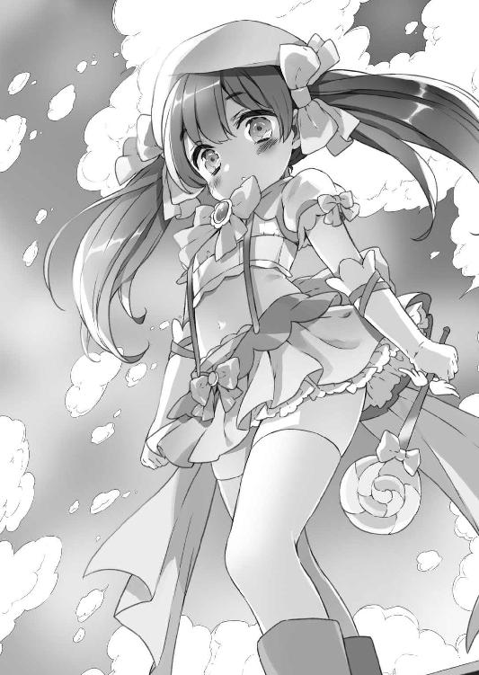
完全に無関係ではあるまい。
そう。
魔法のヴェールによって、変身前の正体の分からない状態になっているみらくるみんが、何者であるかを颯太は知らない。
旗ヶ谷学園の方の空に消えていくみらくるみんを、颯太はただ、不思議な気持ちで見届けていた。
クエスト寮。
「............」
永い永い夢を見ていた。
この夢を見るのはいつ以来だろうか......そう思いながら、０はゆっくりと目を覚ます。
ベッドの上の０に、真新しい部屋の主が椅子を半回転させて見遣ってくる。
「気がついたか。あんたがビルの屋上から降ってきた時は何事かと思ったよ......」
「......旗立颯太？ ここは......？」
思いも寄らぬ人物に出くわした０が周囲を見回す。
クエスト寮の入り口で丁度良いタイミングで月麦に出くわした颯太達は、『適当に唾付けて包帯巻いて寝かせておけば治るべ』と言われ、困惑しつつもその通りにした。月麦の知恵袋に間違いはない。
その月麦は、何かを思いついたように、お出かけして行ったので、この場にはいないのだが。
ともあれ、颯太は少し迷って、自身の部屋のベッドの上に寝かせていたのだ。
巻かれた包帯に気づき、０がしゅるしゅる外すと、颯太の側でお茶を淹れていた眞奈花が、はわ!?とかなる。
「ふわ、凄いです、殿下！ この方、傷、もう治ってます!!」
「婆さまの言った通りだな......」
「それにしても、空から女の子が降ってくるなんて、流石は殿下！ まるで陳腐なお話の主人公のようです！」
「............」
こいつは本当に、自分のことを慕っているのだろうか......？と疑問に思いながら、颯太が眞奈花のこめかみを両端から拳でぐりぐりした。
「そうか......木偶人形にやられて落ちたのか......しかし、お前に拾われるとはな、旗立颯太。これも因果か」
「そうかもな。何があった？ それにブレードフィールド公国が乗っ取られた件は......」
「無論知っている。反撃を試みる前に、先手を打たれたがな。次善の策を協議せねばなるまい。といっても、現状のこちらの持ち駒では、勝てる方策は皆無に等しいが」
「手詰まりかよ......」
「まあ......な？」
０が俯きかけたその時、量産型瑠璃との戦いでヒビが入っていた０の仮面に、ピシィッ！と大きく亀裂が走る。
そして......。
パァン!!と弾けるように、０の顔を覆っていた仮面が砕け散った。
「!!」
「な!?」
仮面の下の０の素顔。
「お前......!!」
颯太はその面差しに絶句する。
次に我が目を疑った。
その次に、これが夢なのではないかと思い、眞奈花の頰を抓る。
「痛い！ 殿下、何するの、酷い!!」
現実に今、起きていることだと認識して、颯太はようやく０によく似た少女の名前を呟いた。
「......なな......み？」
「......ふん。やはり、似て見えるか」
「瓜二つ......いや、あんたの方が凜々しい感じはするが......」
左右で色の違う瞳と、左顔の傷で、簡単に見分けは付くが、髪の色や顔立ちは非常によく似ている。
「あと、この方の方が気品と迫力とオーラがありますね......」
「菜波に基本的にあまりないものだな......」
菜波が聞いたら、この人達の命はないものと思う。
「私が菜波姫に似ているのではない。菜波姫が私に似ているのだ。なにしろ、私は......」
０が不敵に笑った。
「神楽・ブレードフィールド、なのだからな」
「神楽......」
その名を聞いて、颯太は、すぐには何者なのかを察することが出来ずにいた。
代わりに颯太よりも先に、地元民が気づく。
「殿下、ブレードフィールドの建国王ですよ、神楽様というのは」
「......えぇ!? ご先祖様!? 僕や菜波の!?」
「厳密に言うと、私の弟の直系の子孫だ、お前達は」
「......なるほど......それで菜波と似てる訳だ......しかし、だとすると、随分と長生きってことになるぞ？ 本当に神楽王なのか？」
「まあ、長生きには違いない。アリシア・ドラグーンほどではないがな」
「なるほど！ じゃあ、普通だな」
颯太内部の長命の基準が月麦になっており、基本的にはおかしい。応用的にもおかしい。つまりおかしい。
超回復能力と引き替えに、少しの疲労を覚えたので再び眠りに就く神楽を部屋に置き、颯太と眞奈花が、颯太の部屋を出て、大きなため息を吐く。
「......僕は、０のことで副理事長と相談に行った婆さまと合流する。ひとまず、０のことはみんな......といっても、この寮にいるのはあと、菜波と茜だけだけど、２人には伏せておこう。あまり巻き込みたくはないからな」
「はい、殿下、眞奈花にお任せを！」
敬礼をする眞奈花の頭をくしゃっとしてやって、寮から出て行った。
残された眞奈花は、両頰に揃えた指先を当てて、状況を再確認して、はわわとなる。
「そ、それにしても、七徳院のトップが建国王だったなんて！ はわわ......王国の大変な秘密を知ってしまいました......!!」
「王国の秘密がなんじゃって？」
「はうあ!?」
キッチンで新しく仕入れられた食器の整理などをしていた菜波が現れ、眞奈花はビクゥッ!?となった。
「ななななな、何でもないでふ......!!」
「......お主には言うたことはなかったかのう？ わらわは気になったことは解き明かさずにはいられぬ性分なのじゃ」
「はわわわわわ......!!」
「正直に白状するのじゃ、はわわメイドめ!!」
「そ、それは......」
「それは？」
「菜波姫様の肩に、ご先祖様の霊が見え......」
「茜!! わらわも食器を磨くぞよ!!」
眞奈花が機転を利かせた台詞の途中で、菜波が踵を返してスタスタとキッチンに戻っていこうとする。
その菜波の進行方向であるキッチンで一仕事していた茜が、キッチンの入り口からひょいっと顔を見せて言った。
「あれ？ 菜波ちゃん、用事を思いついたんじゃないんです？」
月麦に次善の策を任せ、寮に戻ってきて夕食を取る颯太は、そういえばと、多めに作られている料理を幾つか皿に取って自室に戻ろうとする。
と、当然の如く、茜がそれを気に懸けて問うた。旗立問うた、である。何となく言いたくなっただけなので気にしなくてよい。
「颯太くん、それ、どうするです？」
「え......ああ、ちょっと部屋で勉強する時に、夜食にしようかなって」
「冷めちゃうですよです。夜食が欲しくなったら、茜さんに言えば、温かいの何か作ってあげるですからです」
「いや、悪いから」
そそくさと部屋に戻る颯太に、菜波が目を細める。
「怪しいのじゃ......」
「ふぇ!? そ、そんな、殿下は別にそんな......あ、怪しいことなんて......!!」
「眞奈花、何ぞ知っておるのかえ？ 目が泳ぎまくっておるのじゃ」
「はわわわわわ......!!」
「あ!! 茜さん、分かっちゃったです!! 颯太くんは、お部屋にこっそり、可哀想なわんこかにゃんこを連れてきちゃったです」
「小学生じゃ!?」
当たらずとも遠からずの予想に、眞奈花が微妙な苦笑を浮かべた。
翌朝。
食っちゃ寝でほとんど話の出来なかった０もそうであるが、結局、あれから戻ってこなかった月麦も心配な颯太が、登校して教室の自分の席で嘆息すると、菊乃が心配そうに顔を覗き込んでくる。
「どうしたの、颯くん？ 心配事？ お姉ちゃん、相談に乗ってあげようか？ ん？ ん？」
「いや......」
「あっ！ お姉ちゃん、分かっちゃった!! さては、女の子と一つ屋根の下で生活するようになって、もやもやしちゃってるんでしょう？ んもぅ、颯くんも思春期なんだからぁ！」
お姉ちゃんが分かっちゃったことは、大体分かっていないことが多い。
と言いたい所ではあるが、理由の一つが神楽でもう一つが月麦であるので、あながち分かっていなくもないのかもしれない。
「颯太クン、もやもやしてるんやったら、ウチが男同士の友情で遊んだりしてあげるから、元気出して欲しいんやよ」
クラスメートの男子達が『余計もやもやするわ!!』と心の中で突っ込み、その思念を感知して、恵の瞳から光が失われる。
と、そこで、深雪先生が教室に入ってきてホームルームが始まった。
「はいは～い。今日は、よい子のみんなに転校生を紹介しま～す」
『またか!?』と教室が騒然となる。
「深雪先生......このクラス、転校生多くないですか......？」
「副理事長先生の指定なの～。よい子のみんなは、権力に逆らえるかな～？」
クラスの意思を代弁したクラス委員長の問いに対する、深雪先生のにこやかな答えに、教室が静かになった。
「という訳で、転校生、どうぞ～」
「............」
静寂に包まれた教室で、生徒達が扉を凝視するも、待てど暮らせど、誰も入って来ない。
耳を澄ますと、廊下から争う声が聞こえる。
「ほれ、覚悟を決めて、さっさと入るべさ」
「馬鹿か、アリシア!? 何で私がこんな格好で入らねばならんのだ!?」
「んなこと言ったって、お前様、あそこはこの学園の寮なんだべから、この学園に通わねえと住めねえべさ」
「私は別にあそこに住んでいる訳ではないっ」
「んだども、今や、お前様も宿無しだべ？ 大体、既にしっかり制服着とるべさ。今更何をゴネとるべ？」
「着るだけと、衆目に晒されるのとでは、雲泥の差だっ！」
「ええから、行くべ」
「あ!!」
廊下で、月麦と口論していた少女が、扉を開けられて、げしっと教室に蹴り入れられた。
蹌踉めきながら入って来た金髪三つ編みに、エメラルドグリーンとライトクリムゾンの瞳の少女は、既にクラスにいる転校生によく似ている。
「はいは～い、転校生の神楽・ブレードフィールドちゃんで～す、みんな仲良くしてあげてね～」
自分によく似た少女の出現に、菜波が思わず叫びながら立ち上がる。
「うおおおおおおおおおおお!?」
そして、神楽を指さしてぷるぷる震えた後、力が抜けたようにストンと椅子に腰を落とし直した。
『立ってすぐ座った』『屈伸運動？』『何故、今？』とクラスメート達が囁く。
ぽかんと口を開ける颯太を見て、赤い顔をした神楽が、苦虫を嚙み潰したように言った。
「......。......。......。......よろしく」
その様子に、クラスメート達が活気づいた。
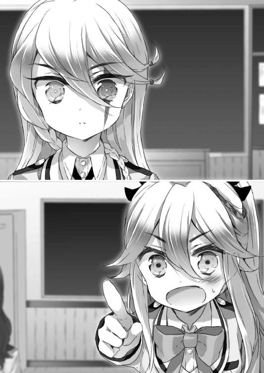
「ナイトさんより可憐だ......！」
「ナイトさんよりいい匂いがする......！」
「ナイトさんより叱られたい......！」
「全部聞こえとるわいっ!!」
クラスメートの男子達による悪意のない比較に、少なからず乙女心に傷を負う菜波が、ガオゥッと吼えて一喝する。
「はいは～い。神楽ちゃんは、菜波ちゃんや颯太ちゃんの親戚の子なの～。仲良くしてあげてね～」
幼児相手にするような優しい口調で言う深雪先生を、そこで改めて、神楽が認識して目を見開いた。
「旗立深雪か!?」
「ふぇっ!?」
「そ、颯太クンの親戚の人が、いきなり深雪先生を颯太くんのお嫁さんポジションに認めたんやよ!?」
「な!? ち、ちが......!?」
そういう考え方はなかった神楽が、思わず恵と颯太と深雪先生を交互に慌てて見るが、それ以上に慌てたのは他ならぬ深雪先生である。
「こ、困るわ、先生、確かに、颯太ちゃんは可愛いと思うけど、でも、茜ちゃんに悪いし、っていうか、先生で本当にいいの、颯太ちゃん......？」
「深雪姉ちゃん、何言ってるの!?」
「深雪先生、意外にも乗り気やよ......」
この日一番の騒がしさが教室を包む。
「も、もうっ、そ、颯太ちゃんと神楽ちゃんは、放課後、生徒指導室に来なさ～いっ」
『この女......!! まさか、エデンと別れた後、こんな所で教職に就いていたのか!! しかし、こいつがいれば、天界軍に対しての戦力として......は......？』
神楽が心底驚きつつ、内心で期待を膨らませていたが、すぐにその期待に穴が空いた。
『いや、待てよ？......そうか！ この女は、深雪・マッケンシー......私が故郷でエデンと共に出会った旗立深雪とは違う存在か......』
肩を落とす神楽は、感情を内心に留めていたつもりだったようでも、その実、態度にダダ漏れで、生徒達からは『お嫁さん深雪先生』の生みの親とも言える神楽に向ける好奇心にその変な動きがプラスされ、ガンガンに奇異な目で見られている状態にある。
それ以上の晒し者になるのを嫌った神楽は、そんなざわつきの中を、歩いて席に着こうとするが、例によって、人に優しい教育を施されている生徒が前から２列目の颯太の２つ隣を空けてくれた。
菜波がそれを奇妙な物を見る目で見つめ、騒動の隙をついて自分の席に着いていた月麦に問う。
「のう、婆さまよ......こやつ、何奴じゃ？ わらわと、よう似ておるぞよ......」
「神楽・ブレードフィールド。お前様達のご先祖様だべさ」
「な!?」
『直系ではないがな』と呟く神楽は、『そうじゃ！ こやつ、我が国の建国王と同じ名じゃ！ 颯太よ、えらいことになったぞよ!?』『うん......まさか、転校してくるとは......』『何でなんじゃろ？ 聞いたらマズいんじゃろか？』などと仲睦まじく話し合う菜波と颯太に、重なるものを感じた。
それは、過去の自分と弟の姿だ。
「まあ、何にせよ、親戚には変わりあるまい。異国の地で不便もあるじゃろうが、何なりとわらわ達を頼ってよいのじゃぞ、神楽殿」
「人の世話を焼けるような余裕ある立場でもないけどな、僕らも......」
──忘れていた。
自分が何の為にこの世界で生きてきたのか。
ブレードフィールドの子らの為。
ただ、その為だけに生きてきたはずだった。
久しく見なかった夢を、振り返らなかった過去を、見てしまったせいだろうか。
『そうだ......私は......』
目の前にいる子供達。
彼らを前に感じる気持ち。
自分の弟に、弟の子供に孫に、感じてきたはずの......そして、時を経る毎に忘れていった、忘れられていった......向けることも向けられることもなくなった、......家族に対する愛情。
日陰に追いやられ、凍り付いていたそれが、日なたの姉弟を前に溶けていくのが分かる。
その時。
「......！」
神楽の頰に涙が伝う。
溶け出て溢れたものが涙になって流れていくように。
そして、この時、神楽は心に決めたのだ。
行くあてをなくした嘗ての自分を重ね、この子供達に、再び、ブレードフィールドの土を踏ませてやらねばと。
その時までに、この２人を全てに対して誇れる王子と姫に育てよう、と。
菜波と颯太は、なおも『ちゅーか、何で、ご先祖様、そんな長生きなんじゃろな......？』『婆さまに比べたら可愛いもんだって言われたけどな......』などと話し続けていたのだが、神楽が涙を流していることに気づき、話をピタッと止めた。
「ど、どうしたのじゃ、神楽殿？ 心細いのかえ？」
『０だぞ？ そんなタマか......？』と思った颯太ではあるが、正体を明かしたものかどうか迷う間に、涙を拭った神楽が不意に慈愛と厳格さの同居する顔になる。
「なに。この程度のことでオロオロするな、菜波姫。お前は誇り高きブレードフィールドの血脈に連なる者なのだからな。凜として毅然としていろ」
「は、はい......頑張ります......」
気を遣ったはずが、何故か窘められて、菜波がコクコクと頭を振った。
「颯太王子、襟が折れているではないか。ほら、常に身なりを正さねば、人の上に立つ者として、恥ずかしいだろう」
「あ、ありがとうございます......」
甲斐甲斐しく颯太の襟を直してやる神楽の、厳しい中にも優しさのある口調に、違和感を覚えすぎて、思わず敬語になる颯太だ。
それを見ていた恵達が思わずポロリと本音を零した。
「神楽ちゃん、お母さんやよ......」
「お母さんです......」
「お母さんだべさ......」
「私はお母さんではない!!」
お母さんに怒られた。
ぷりぷりと怒る神楽は、遥か年下の人々と世界史の授業を受けるのだが......。
「えー、百年戦争時、えー、フランスを勝利に導いたジャンヌ・ダルクは、えー、一説には、えー、時折黒い騎士の姿で現れた、という伝説が、えー、あるようで。また、その黒い騎士というのは、実は身分を隠して戦場に出たフランス国王シャルル７世本人であるとも言われています。えー、百年戦争の終結と共にフランス王国から姿を消した、えー、百年戦争に大きく貢献したこの黒い騎士は、研究者の間では、正体が分からない謎の人物とされており、えー......」
半笑いでこの授業を受ける神楽は、チラ見した月麦が絶好調に寝ていて、物言いたげな表情を作ったが大きく嘆息して前に向き直る。
......かと思いきや、千切った消しゴムを指で弾き飛ばし、ぺちむっと月麦の額にぶつけた。
その様子を見るともなしに見ていた颯太は、一国の重鎮の惨状に思わず零す。
「小学生か......」
そんな授業を終え、トイレに立つ神楽は、出入り口でばったりと、とある女子に遭遇した。
「忍者林瑠璃!! ちっ、量産型風情が、ここまで追ってきたか!?」
そう、誰あろう忍者林瑠璃......の人間の方である。
突如として転校生が、異世界の武闘家のような超格好いい構えをとって、自分に相対してきたので、瑠璃は颯太を睨み付ける。
瑠璃の中で、この奇行に走る転校生は颯太一味のカテゴリらしい。
『......何か、僕、めっちゃ睨まれてるんですけど』
神楽に能力封印の首輪を付けボコボコにしたのは、他ならぬアンドロイド『量産型・忍者林瑠璃』だ。
ブレードフィールド公国経由で天界軍から差し向けられた、その追っ手は、在日米軍基地に配備されていた物で、公国の保有する米軍の軍事スキャンダルを盾に圧力をかけて稼働させたものであった。
もっとも、その量産型瑠璃は、１人の魔法少女の手によって姿を消したのであるが。
それを知らない神楽は、借りを返す好機でありながら、相変わらず封じられたままの戦闘能力に歯嚙みをする。
そんな神楽がそのまま、じりじりと瑠璃の出方を窺っていたところ、よくよくその様子を観察しているうち、違和感があることに気づいた。
「？......妙だな。......貴様、人間......か？」
「............」
前にも聞かされたような言葉に、これだから、颯太の一味は......と、より一層忌々しい様子で、瑠璃が颯太を睨みまくる。
『......僕、更にめっちゃ睨まれてるんですけど』
「そうか......私にこの忌々しい首輪を付けた奴ではない、ということか」
ヒソヒソと、神楽と瑠璃の首輪プレイについて、クラスメート達が囁き出し、瑠璃の怒りゲージがＭＡＸまで溜まった為、颯太の前へツカツカと歩いて行って、ぎゅむりっ！と颯太の足を踏んだ。
「痛っ!!」
足を抱えてピョンピョン跳ぶ颯太に、ふんっ！とそっぽを向いて、神楽の脇を抜け、歩いて行く瑠璃。
神楽は臨戦態勢を解き、深く息を吐いた。
「驚かせるな......。オリジナルの人間の方だとは......」
この一件以来、瑠璃は更に颯太に冷たくなったという。
放課後。
帰り支度をしている神楽のもとへ、茜や眞奈花を引き連れた颯太がやってくる。
「すぐ帰るのか、......」
「私をで呼ぶな。正体がバレる」
「............」
素顔を晒して本名を名乗るのはいいのか......と、颯太が何と呼んだものかと悩むのを、以心伝心の親密さで察した茜が、にこー！と輝く笑顔を颯太に向けて言った。
「かぐにゃんと呼ぶのはどうですっ？」
「「嫌すぎる!?」」
颯太と神楽が親戚らしい気の合い方でハモった。
「あっあっ、そうにゃんとかぐにゃん、息ぴったりですっ。いいなあです」
「そうにゃん言うな!?」
そうにゃんが凄い嫌そうな顔をする。
「神楽でいい。ちゃん付けもにゃん付けも死刑だ。苗字でもいいが、このクラスには既に同じ苗字の人間がいて紛らわしいからな」
「じゃあ......、神楽さんで」
「そう呼びたいのなら、颯太王子の好きにするがいい」
ふ......と、微笑む神楽。
「そういえば......茜嬢には折角ブレードフィールドの地に足を運んでおきながら、面倒事に巻き込んでしまい、申し訳なかったな」
不在時の出来事とはいえ、仮にも、総責任者たる自分の治める地での、颯太の元婚約者の受けた仕打ちに、神楽は詫び言を言う。
「いえいえですっ！ 刺激的な出来事で、何だか楽しかったですっ。菜波ちゃんも婆さまもいて、心強かったですしです」
「そうか......菜波姫もたまには役に立つこともあるのだな」
「たまにはって何じゃ!?」
たまには役に立つ姫が憤慨した。
「あの～、巻き込まれたという意味なら、わたくしもなのですが」
小さく眞奈花が挙手をする。
それを見て、そういえば、これ誰だっけ？という顔で神楽が颯太を見た。
それを見て、颯太が首を傾げた。
「何でですか!? 殿下のスーパーメイド、眞奈花・シャーマンズ！ 眞奈花・シャーマンズをお忘れなく!!」
スーパーマーケットに行く程度の能力を持ったメイドの略だなと颯太は思った。
「......シャーマンズ？」
颯太とは裏腹に、神楽が微かに、眞奈花のファミリーネームに反応する。
「？」
「いや......昔、そんな名前の議員がいたような気がしただけだ」
「............」
「まあ、ブレードフィールド公国に籍を置く人間であれば、普通に遠い縁者である可能性もある、か」
眞奈花はそれに対しては、特に何も言わず、平静な顔をしていた。
と、会話に入るタイミングを見計らっていた恵が、無意味に颯太と腕を組むスキンシップをしながら、ニコニコと話しかけてきた。
「それにしても、神楽ちゃん、菜波ちゃんに似てるんやよ。そっくりやよ」
「盗賊山恵か......それにしても、実物は更に可愛いな......お前、本当は女子だろう？」
「がぁん!!やよ!!」
久々にストレートな台詞をぶち込まれ、恵が颯太の胸に顔を埋めてシクシク泣く。
「ふえぇん......颯太きゅぅん......」
「よしよし......」
颯太に頭を撫でられて慰められる恵を、更に神楽が問い詰める。
「そら見ろ。男子がふえぇんとか言うか」
「颯太くん、たまに言うです」
「............」
変なことをバラされて、颯太が『ふえぇん』とか思った。
「えっ、なにそれっ、お姉ちゃん聞いたことない！」
「あ、やっぱり、年上のお姉さんの前だと、ちょっと背伸びしちゃう症候群なのね～、颯太ちゃんも～」
慌てて会話に飛び込んできた菊乃とは裏腹に、吞気な深雪先生が妙に嬉しそうに、そう言って、うふふと笑う。
「そっかそっか。背伸びしちゃう症候群なのね、颯くん......お姉ちゃん、嬉しいっ」
ぎゅむーっと颯太を背中から抱きしめてくる菊乃。
「あっあっ、颯太くん、茜さんにも背伸びして欲しいですっ」
「そう言われてもな......」
「女子なら、背伸びされるより、する方が憧れるのではないかえ？ 心の爪先立ちで、少し、ほんの少し、思いを寄せるあの人に近づくその行為を......」
ようやく会話に入り込むことに成功した菜波が、さらっと詩的なことを言う。
「菜波ちゃん、素敵ポエムです!!」
「ポエム言うにゃーっ!!」
「でも、超ポエムだったです！ ポエマーです!!」
「ポエマー言うにゃーっ!!」
ぽかぽか軽く叩いてくる菜波を、えへへと受け流す茜の女子同士のきゃっきゃうふふと、颯太にへばりついている菊乃と恵を見る神楽を、深雪先生がにこにこと見守っていた。
「神楽ちゃんは、転校してきて、いきなりなのに、よくお友達のみんなのことを知っているわね～」
「私は情報という名の海で生きてきた人間だからな」
神楽のドヤ顔である。
「格好いいです！ 神楽ちゃんも詩人さんです！ ポエムです！ ポエマーですっ!! ポエム一族ですっ！」
「私のは菜波姫と違って、ポエムではないっ!!」
「わらわのも違うのじゃっ!!」
否定する人々の横で、ポエム一族の末裔である颯太が微妙な顔になっていた。
「......ともあれ」
その颯太を取り巻く人々に、神楽は真摯に頭を下げた。
「......お前達には、颯太王子が大変世話になっているようだ。心より礼を言う」
「いえいえ、颯くんは大事な弟だから、姉としてお世話するのは当然よぅ」
母親のようなお礼を言う颯太の親戚の人に、自分が姉ポジションであることを周知徹底すべく、菊乃が地道な活動をしている。
「お母さんとお姉ちゃんです」
「お母さんとお姉ちゃんやよ」
「お母さんとお姉ちゃんだべさ」
「私はお母さんではない！」
お母さんに怒られた。
「さて、アホなことばっかりやってねえで、帰るべさ」
颯太の前で爪先立ちの背伸びをして万歳する月麦が、颯太に抱き上げられるのを、無言かつ興味深げに女子一同が眺める。
そして、茜が颯爽と颯太の前に立って、爪先立ちして万歳した。
「いやいやいや、無理だろ!?」
「颯太坊、ワシを下ろしてええべから」
「いや、そういう......」
問題ではないのでは？と思いつつも、言われるがままに月麦を下ろし、茜を持ち上げる。
「......ぉも」
「今、『重』って！ 重いって言ったです!! 茜さん大ショックです!!」
「い、いや、ち、違......！」
泣きそうな茜に、またデリカシーのない颯太の発言に、女子から非難の視線が容赦なく浴びせられ、颯太がはわわとなる。
「婆さまの後だから！ 婆さまと比べての話だから!!」
「そ、そうですよねです。茜さん、颯太くんが想像もつかないような濡れ衣的発言をしてきたのでついついビックリしちゃったです」
えへへと笑う茜ではあるが、さっきから颯太に抱き上げられた状態を維持され続けていて、見た目の構図としては結構変。
「ふむ......アリシアは置くとして、茜嬢は肉付きが良いからな。油断はしないことだ。うっかりすると、すぐに、ぽっちゃりヶ沢嬢になりかねんぞ」
「菜波ちゃん、酷いです！」
「そっちはわらわではないわ!?」
ぽっちゃりヶ沢さんが、菜波と神楽の区別がつかなくなっているのは、顔が似ているだけではなく、ぽっちゃりヶ沢さんが焦っているせいである。ぽっちゃりヶ沢さん連呼するな。
「しかし......颯太王子は、女子にモテるのは結構だが、男子の友達がいないのが少し心配だな」
「............」
恵の瞳から当然のように光が失われた。
「子供の頃は結構男の子とも遊んでたわよねえ」
颯太の子供時代をよく知る菊乃が、顎に人差し指を当てて思い出す。
「んだば大丈夫だべ」
「そうですようです。お母さんは心配性です」
「お母さんではないというに!!」
完全にお母さんになりかかっていた。
それからというもの、菜波と颯太に対し、靴をちゃんと揃えろとか、宿題はやったのかなどと、完全にお母さんになりかかっていた神楽であった。
しかし、ある日、神楽が日々増改築されていくクエスト寮の談話室で頭を抱えているのを菜波と颯太が見かける。
「何をしとるんじゃろな......？」
「さあ......？」
野生の動物に対するように警戒しつつジワジワと接近する２人。
「どうしたのじゃ、神楽殿？」
「ふぇえ!?」
メッチャ可愛い声で叫んだ神楽に、『ふぇ』て......と颯太が凜々しく偉そうだった０時代の神楽を若干懐かしく思いつつ、ちょっとドン引きになった。
一方、菜波の方は気にした様子もなく、テーブルの上に載せられた物を目敏く発見する。
「おお!? ラブレターかえ!?」
「......そ、そうだ。こんな物、貰っても困る......」
顔を赤らめる神楽を見、何コレ怖いと思う颯太を余所に、菜波が更に食いついていた。
「神楽殿は、誰かに似て美人じゃから、ラブレターなどいつも貰ってるじゃろ？」
ここで言う誰かとは、勿論、菜波である。
「いや、ついぞ貰ったことはない」
「誰かに似ているのにかえ!?」
ここで言う誰かとは、勿論、菜波である。何で２回言うのカナ？
『わらわに似ておる神楽殿が、建国当時から生きておって、そのザマということは、わらわもこの先数百年も......？』
残酷な現実を突きつけられ菜波が凹んだが、しかし、現代においては立派にラブレター対象になったのだと気を取り直して、神楽の手紙を覗き込んだ。
「で？ で？ 誰からじゃ？ クラスの奴かえ？」
「２年とか書いてあったから、知らん奴だろう」
「ほう、先輩からかえ......。......同じような顔しとるのに、わらわの所にはラブレターとか来ぬのじゃな」
「欲しいのか......？」
「い、いらぬわ!? そんなもん、貰っても困るだけじゃからな!!」
颯太のツッコミに慌てる菜波を恨めしげに神楽が見上げる。
その視線の先の菜波の肩口から、ひょいっと顔を出した茜が、興味津々な感じで尋ねてきた。
「ＯＫするです？」
「するかっ。しかし......、断るにしても、どうしたものかな......。こういうのはどう断るのだ、茜嬢？」
「う～ん......わたしは、颯太くんにいつもお願いしちゃうです」
「颯太王子に......？」
「はいです。一緒についてきて貰って、『僕の女に手を出すな』って言って貰っちゃうですっ、きゃっ」
「方便だからな!? 茜の爺さんに頼まれた分を履行しているだけだからな!?」
婚約自体は破棄されていることに一応はなっているのだが、茜の祖父・秀辰に『茜の虫除けになってやってくれ』と頼まれた約束を、颯太は律儀に守っているのである。
そこまで予想したかどうかは分からないが、秀辰が本能的に颯太を気に入ったのは、そういう根っこの生真面目さを見抜いていたからだろうか。
ともあれ、そんな妙にイチャイチャした感じになっている颯太と茜を、神楽と菜波がジト目で見遣る。
「あと、茜、お主それ、自分でも断れるけど、颯太にそう言って貰いたいだけじゃろ？」
「そそそそそ、そんなことはないですっ。茜さんはノーとかニャーとか言えない日本人ですっ！」
「猫混ざったな!?」
ニャーとか言いつつ、颯太にじゃれる茜の更なるイチャつきっぷりに、ニャーとか言えるじゃねえかと、神楽と菜波が思った。
「......颯太王子」
「え、あ、はい？」
「......私にも頼む」
「何をですか......？」
「ぼ、『僕の女に手を出すな』というやつだ......」
颯太は目眩がした。
顔を赤らめて怖ず怖ずと申し出る神楽を不覚にも可愛いと思ってしまったからである。
──嘗て。
大名侍鳴という少女がいた。
クールな孤高の人物然としていた彼女が、いつの間にやら、女子中学生に頼るポンコツな人間になっていたのを思い出し、颯太は何か自分からポンコツを誘発させるよからぬ成分が出ているのではないかと怖くなってくる。
なお、『僕の女に手を出すな』ブームは、既に一部の１‐Ｆ女子（茜、菊乃、恵）の間では人気のトレンドとなっており、何故恵が混ざっているのかな？
茜、菊乃、恵、瑠璃、眞奈花、月麦、深雪先生と、ここのところ急激に周囲に女子がわさわさと寄ってくるようになった颯太をジト目で見る少女がいた。
誰あろう、菜波である。別に列挙された名前の中に書き忘れたから、菜波にした訳ではないことをご承知おき願いたい。
「どうした、菜波姫？ そんな仏頂面では美人が台無しだぞ」
「......自分によう似とるわらわの美貌を誉めるとは、狡猾なブーメラン発言じゃな」
「バカを言うな。私の方が美人だ」
「............」
菜波が『ご先祖様、面白人間じゃな......』と神楽を変な目で見た。
「で？ 颯太王子がどうかしたか？」
茜と眞奈花にまとわりつかれつつ、菊乃に頭を撫でられる颯太に神楽が視線を転じる。
「ふ......む。神楽殿は......その、わらわ達が生まれた時のことを知っておるかえ？」
「無論」
「！......で、では、その......颯太とわらわは......やはり、紛れもなく、ええと......ふ、双子、なのじゃろうな？」
「？」
「つまり......じゃな、颯太とわらわは２人とも、父上と母上の子供、なのじゃろうか？」
「......違うのか？」
「生まれた時のこと、知っとるんちゃうんかえっ！」
「ミドルネームを授けた時のことは覚えているが、お前達が誰の子かまでは知らん。同じ日に生まれたのは確か......のはずだぞ。何でそんなことを私に聞く？ 自分で知らんのか？」
「ここだけの話じゃぞ？ ......ほれ、わらわと颯太は、似てはおらぬじゃろう？ 本当の、姉弟なのか、と思うてな」
「ふむ......私と私の弟には似ているし、私がミドルネームを授けた以上、即ち、２人ともブレードフィールドの子であることは明白だ」
「いやいやいや、じゃからな？ ブレードフィールド公国の人間である、というのはええのじゃ。どーゆーあんだすたん？」
「Do you understand?だ。お前の発音は最悪だな」
「そんなことはどーでもええのじゃっ！ 颯太とわらわが血の繫がった実の姉弟であるのかどうかを聞いておるのじゃっ！」
「何故、私が知っているのだ？」
「何でお主、知らんのじゃっ!?」
「ふむ......。残念だが、この話をせねばならん......か」
「っ？」
重苦しい口調で神楽が口を開き、菜波は思わず息を吞む。
「私の祖母は、な。孫が21人、曾孫が53人、玄孫が86人いた」
「......ふむ？」
何の話じゃ？と菜波が吞んだ息をふしゅーと漏らした。
「祖母は孫の名前をうろ覚えだった。私のことを、桜だのカムランだのカンバーグラーだのと呼んでいた」
「最後、ハンバーガー屋のキャラみたいになっとるのじゃっ!?」
「そういう次第だから、当然の如く、どの孫やどの曾孫がどの子供や孫とどういう血縁なのかなど、覚えている由もなかった」
「......ようやく言いたいことが分かってきたのじゃ」
「うむ。なので、私も馬鹿みたいに大勢いる王家の子供らの血縁関係など記憶にない」
「............」
この人、思いの外、役に立たないな......と菜波は、心底思った。神楽が世界の情報を一手に握る世界監視組織の長であることを知ったら、鼻で笑うことであろう。
「しかし、そうだな......。お前と颯太王子が実の姉弟だとするならば......」
「!!」
シリアスな表情で顎をしゃくる神楽に、菜波がドキッとした。
「いっそ、私と弟の名前を付けてやるように言えばよかったな」
「話が嚙み合わんのじゃ───っ!!」
「お前は何を興奮しているのだ......？」
菜波が頭を抱え、神楽がうーむと腕組みをする。
「おっ、菜波ちゃん達、会話に戸惑っているですかです？ この会話を嚙み合わせたら、右に出る者のいない茜さんの出番ですっ」
菜波はもう二度とこの会話が嚙み合わないことを予感した。
そんな吞気な学園生活に突入しつつ、だが、そればかりではいられないことも颯太は気に病んでいた。
この先は本職の仕事だと、土研会から追い出された颯太は、彼女らの働きぶりを廊下で手持ち無沙汰に眺め遣りながら、小さなため息を吐く。
その懊悩を察した月麦と神楽は、音もなく近づき颯太の肩を叩いた。
「今は雌伏の時だ。必ず潮目が変わる時が来る。その時の為に力を蓄えておけ。私も、このままでは終わらん。いずれ、私の力を封じ込めているこの封印を解く方策も講じるしな」
「んだべ。このままで終わったら、神楽坊の役に立たねえこと甚だしいべからなあ」
「ナチュラルに私の批判を!?」
取り戻すべきものがある。
そして、その労苦を共に背負ってくれる人がいる。
そのことが、颯太を心強くさせていた。
それとは別にもう一つ、颯太を悩ませている問題もある。
「どうした、颯太王子？ まだ何かあるのか？ 私に相談してみろ。ん？ ん？」
「お母さんは心配性だな......」
「私はお母さんではない!!」
じゃあ、お姉ちゃんか......と、菊乃以外にも、深雪先生などどんどん増えていくお姉ちゃんポジションに颯太が苦笑した。菜波を忘れている。
「で、何だ？ 何でも私に相談するのだぞ、颯太王子」
「うー......ん。いや、凜くんとかさ、くるみ子とか、美森会長とか、元気にしているんだろうか、って」
「ああ。仮想世界内でのお前のガールフレンド達か。会いに行けば良かろう」
「......軽く言う。......。怖いんだよ」
「怖い？」
「うん......。前に、鳴と一緒に別の仮想世界に行ったことがある。その時、凜くんとお菊ねえに『お前は誰だ』って顔をされたんだ。......あれは、結構きついんだ。現実で同じ目に遭いたくはないな......」
「そう......か。そうだな。或いは、会いに行かない方が、お互い良いのかもしれんな」
「さもなくば、運命がお前様達をまた引き合わせてくれるべさ」
「運命......か」
運命を操ってきた少年が、運命に身を委ねることになるとは、何と皮肉なことだろうか。
颯太は、自嘲気味に笑った。
この翌日。
颯太は、自らの運命に震えることになる。
一つの再会が、彼を待っていたからである......。
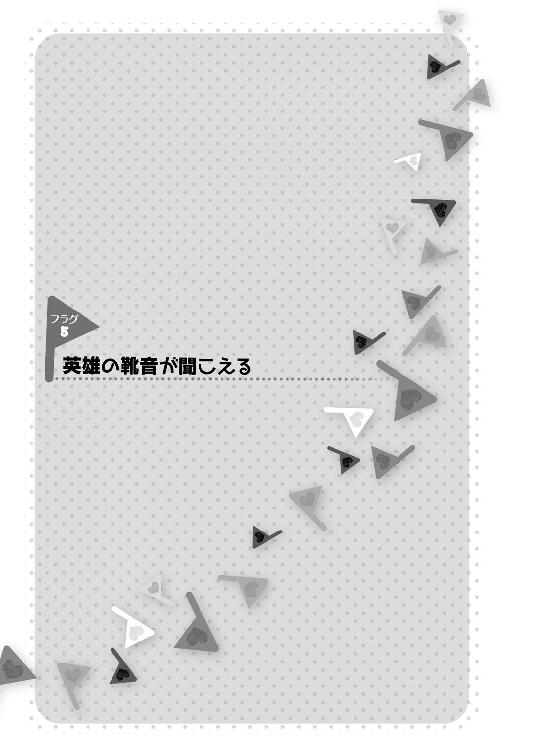
どこにでもある街の、どこにでもある夕方の交差点の、どこにでもある信号待ちの人々。
颯太が、ちょっとした買い物の為に学校の外に出て、その帰り道のことだった。
信号待ちの先頭にいた営業帰りと思しきサラリーマン２人組が、内輪話をしている。
「そういや、お前、例の受付の女の子とは上手くいってんの？ 付き合ってもう１年ぐらいだっけ？」
「ああ......俺、今の大得意先との社運を賭けた商談がまとまったら、彼女に結婚を申し込もうと思うんだ」
なにその死亡フラグ!?と思わず噴き出しそうになった颯太が、どこかで遭遇したシチュエーションそのものすぎて、何とか息を止めて我慢して呼吸困難になりかかった。
しかし、その困難な呼吸が更に困難になりそうな出来事を、颯太は目の当たりにする。
目の前の片道３車線の幹線道路の上り線からガソリン輸送トレーラーが、下り線から大型トレーラーがそれぞれ同時に信号待ちの列目がけて真っ直ぐ突っ込んでこようとしていた。
轟音と共に突っ込んでくる２台の大型車両に、挟み撃ちの恐怖をかき立てられた群衆は悲鳴を上げ、こぞって逃げようとする。
が、密集していた所へ押し合いへし合いしたせいで足をもつれさせ、あっと言う間に将棋倒しが起こる。否、ドミノ倒しが起こる。何故、同じことなのに言い直したのかは謎に包まれている。
『噓だろ......!? 何だよ、これ!? これじゃ、仮想世界の再現じゃないか!!』
颯太が心の中で叫ぶ。
彼の中で去来するのは、転校初日のあの、菜波を救ったトレーラー事故。
笑い事だったのだ、今日、最初にサラリーマンの会話を聞いた時には。
しかし──。
『同じ軌道でトレーラーが突っ込んでくる......あの時と......!!』
迫るガソリン満載のトレーラー。
立ち上がることすら困難な倒れ伏す人々。
万事休す。
『くそっ!! これも運命なのか......!?』
大惨事を覚悟したその時。
颯太の背後の倒れかけの人混みからスッと前へ少女が進み出る。
一際目を引くのを通り越して異質にさえ映るその神がかった造形美を誇る美しい風貌と、大和撫子の鑑と言っても過言ではない程の見事さの長い艶やかな黒髪。
そのお尻まで伸びた髪を揺らし、旗ヶ谷学園の女子の制服を着た少女は呆然と立ち竦むサラリーマンに後ろから言った。
「その商談、まとまらないまま一生続きますよ？」
それは既に商談ではない何かである。
が、その言葉にサラリーマンは動揺する。
勿論、トレーラーは動揺した訳ではない。しかし、それに呼応するかのように、２台のトレーラーはニュートン力学的にもローレンツ変換的にも４次元ベクトル的にもあり得ない挙動の急角度で避け合い、鼓膜をつんざくタイヤの擦過音をけたたましく鳴り響かせて路肩に縦列駐車した。
惨劇を免れた運転手が狐につままれたような顔で呆ける。
将棋倒しになった群衆も奇跡的に掠り傷すら負っていない。のろのろと立ち上がる人々は悪質な白昼夢から覚めたような虚脱感に包まれた。
「............」
しかし、颯太の衝撃はその場の何もかもを上回っている。
それでも......いや、だからこそ、彼の視線はただ一点を見つめ続けていた。
今更悲鳴を上げたり、写メールを撮る者などが現れ、騒然となる現場。
当然と言えば当然なのだが、サラリーマンに謎の言葉を告げた少女に見向きする者など皆無である。
唯一、颯太を除いては。
「............」
彼の見守る先で、少女は、悠然と、しかし素早く、信号を渡ってその場を去っていった。
颯太は、その少女を知っていた。
少女の名前を知っていた。
だから、彼はその名を呼びながら、学園の中へと消えていく少女を追うのである。
「凜くんっ!!」
早足の凜の背中を、颯太はどうにか見つけるも、凜は振り返ることなく、校舎の中へと消えていく。
『そんなはずはない......！ あの力は......フラグ操作の力は、仮想世界だからこその力のはずだった!! だから、現実世界にあるはずのない力なんだ!!』
心の中で叫びながら走る颯太。
しかし、それとは正反対の方向の思いもある。
『天使は現実にも存在すると婆さまは言った。天界の騎士団が空中の魔方陣から現れ、６本の腕を持つ魔界の住人と超常的な力を使った戦闘を行った。そして何より......桜は病院の屋上に現れたんだ。ということは......ということは、だ』
颯太が校舎の階段を上りながら、そこにあるかもしれない人工衛星を見つめた。
『あるのか......？ あの力が、現実世界にも......!!』
追いつけそうで追いつけない、その背中を追っていくうち、颯太は校舎の屋上に出る。
「凜くんっ」
夕日の逆光に溶けるようにして。
佇む少女──凜。
その髪を緩やかな風が靡かせる。
「どうして、私を『くん』付けで呼ぶのだ。失礼な子だなっ」
少し唇を尖らせ、颯太の仮想世界の記憶にあるよりも遥かに可愛らしい仕草と口調で、凜は頰を赤らめて髪とスカートを押さえた。
そして。
風がやむと、凜は自らの頭上に人差し指をゆっくりと向け、困ったように、けれど優しげに言う。
「それに、女の子をつけ回すのはあまり感心しないゾ......大きな、不幸フラグの少年」
その口ぶりが、仮想世界で初めて会った時の鳴と重なる。
「......!!」
颯太は、その衝撃に、一歩後ずさった。
「凜くん......キミは......フラグを見て......折ることが......立てることが......出来る、のか？」
「......？ え、あれ？ 笑われるかと思ったけど......信じてくれなくても......いいよ？」
「いや......でも、ちょっと待ってくれ。まさか、その力、桜に？」
「え、桜ちゃんのことまで知ってるの!? キミは......一体、何者？」
凜の言葉に、颯太は総毛立つ。
まだ終わっていない。
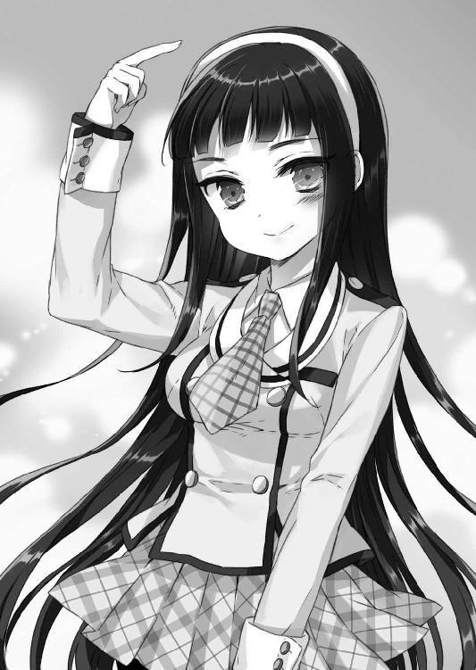
──天界軍の到来。
──フラグを操る者の出現。
──そして、再び暗躍を始めるサクラメント。
それらが颯太を、再び、あの騒乱の日々へと誘おうとしている。
颯太は肌でそれを感じた。
しかも、その水先案内人は......。
「凜くん......」
「だから、何で『くん』付けで呼ぶかなっ？」
「いや、あの......」
颯太は、神楽に自ら語ったように、自分のことを忘れている凜のことを思い出して、一瞬躊躇し、その躊躇が婉曲的表現を呼んだ。
「ほら......川猿軍団......覚えてる？」
「忘れた!! そんな馬鹿集団のことは忘れたもん!!」
「もん、て......」
とはいえ、馬鹿集団のことは覚えているようである。
「公園の砂場にスイカ畑を作ろうとして、怒られたの、覚えてる？」
「知らない！ 作ったスイカを路上販売して、幼馴染みと一緒にド叱られたのなんて、知らないっ!!」
耳を塞いだ凜がいやんいやんと激しく首を振った。
「その幼馴染みが僕だよ！ 颯太！ 旗立颯太！」
「旗立......颯太」
凜はたっぷり12秒沈黙してから、言った。
「......知らない」
「............」
思った程のショックはない。
それよりも、自分の記憶の中にある凜よりも、若干......否、結構可愛い感じがして、颯太はちょっとドギマギしていた。
「......ソーダだよ。幼馴染みの」
「......。ソーダくん!? あの、河川敷で一緒に遊んだ!? うっわぁ、懐かしい!? 私、中学に入る時、地元を離れたから......４年ぶり!? うわぁうわぁ！ 私ね、ずっと連絡取りたいなぁって思ってたんだ！ でも、入った学校が超お嬢様学校で、何か、そういうの知られたら、からかわれる～とか思って、夏休みとか帰省した時も会いに行こうかな......とも考えたんだけど、結局やめちゃったから......えへへ」
ほんの僅かに残る少年性、それと同居する少し大人びた少女の佇まい。
仮想世界では、前者と後者の割合は８：２ぐらいだったが、現実世界の凜は逆転して３：７ぐらいに思え、颯太の中で長年培われたお姉さんに弱い一面が、彼を怯ませないではいられない。
「ソーダくん、見違えたねー。男っぽくなっちゃって」
「凜くんの方こそ......綺麗なお姉さんになってて......。誰この美少女!?......とか思ったよ......」
「やだも～っ。そういうの言われるのが嫌だったのに～」
んふふと笑う凜は、別の意味でも誰この美少女!?であり、仮想世界が全てを現実通りにシミュレートしていないことの一端というか、あれはあれで一つの可能性に過ぎなかったということを思い知らされる。
「あと、子供の頃は、僕のこと、『くん』付けなんかしなかったよね、凜くん......」
「何か、呼び捨て、気恥ずかしくて」
はにかむ凜。
現実世界においての子供の頃──。
少年の頃の颯太が河川敷で出会った、子供の凜は、近所の子供達のボス、川猿軍団の頂点に君臨している恥ずかしい少女だった。
少女と言っても、言動はほとんど完全に男子状態だった凜を、颯太は離れ離れになってもずっと男子だと思っていた。
だから、颯太にとっては、子供時代に一緒に散々遊んだ男子の友達、といえば、思い出の中では凜なのである。
そのあたりは、仮想世界での思い出とほぼ一緒だ。
ただ、別れる時の経緯と、細々と連絡を取っていた事実がない、というだけである。
「......そういえば、ソーダくん、あだ名の『ソーダ』って呼ばれるの、昔、嫌がってたよね。ん～。じゃあ、ソー太くん、て呼んでもいい？」
「いいよ......呼び捨てでもいいよ......」
「男の子を呼び捨てはちょっと抵抗があるなー。あの頃の私を知っていると信じられないかもしれないけど、私、中学が女子校だったから、今、男の子、ちょっと苦手なんだ。......でも、頑張ってみる」
少女の中に僅かに残る少年の照れが垣間見える。
ただ、それだけではない。颯太を『ソー太』と呼んだ仮想世界の凜の面影と思考回路もまた想起させ、颯太には少し嬉しかった。
「......それより、凜くん！」
「は、はいっ」
「桜にフラグを操作する力を......貰ったのか？」
「う、うん。でも、何故、ソー太く......ソー太が桜とフラグのことを知っているんだ？」
その問いに、颯太は一瞬、開きかけた口を閉じる。
『何をどこまで言うべきか......。仮想世界のことはともかく......フラグの力については話すべき、だろうな』
「......僕も、桜にフラグを操作する力を貰ったことがある」
「本当に!? ......そ、そうか。桜はこの力を私に渡す時、言ったんだ」
「............」
「『私の力をお姉さんにあげる。その代わり、お姉さんは世界の希望を見つけなければいけないの』と」
「世界の......希望？」
桜は颯太には言った。
『世界の真理に辿り着かなければいけない』と。
『桜が僕に求めたものと、凜くんに求めたものは違う、ということか......。真理の次は希望......どういうことなんだ、桜......』
「それで......フラグが見えるんだね、凜くん？」
「うん。ソー太も？」
「......。いや......僕は、その力を、嘗て持っていたんだ。でも、今はもう、この手にはない」
「そう......。不思議な力だよね。でも、この力で人を助けることが出来る。人を幸せに出来る力なんだもん」
「............」
颯太は──。
そんな風に考えたことはなかった。
ただ、悲劇を回避する為の力だとずっと思っていた。
その先に、人が幸せになる未来があると、そこまでの考えには至らなかったのだ。
『それに思いを至らしめる人間だから......だからこそ、凜くんは、世界の希望を見つけられる、ということなのか』
「ね、ソー太。よかったら、相談に乗ってくれないかな？」
「相談......？」
「うん。どんな風に力を使ったらいいのか。こんなこと、相談出来る人は他にいないし。ソー太は、先輩だもん、フラグの力の。ね、センパーイ、お願いっ」
「先輩は凜くんでしょ......」
「じゃあ、師匠！ ね？ 幼馴染みのよしみで！ ソー太師匠っ」
「......分かった。僕に出来ることがあれば」
「ありがとう、ソー太!!」
ギュッと颯太の手を握った凜が、自分の頭上にあるフラグが立つのを感じ、顔を紅潮させてバッと手を離した。
『な、なんで!? このフラグの感じ、恋愛攻略済みフラグ!? おかしい！ 私、こんなんじゃないぞ!? こんなチョロい女の子じゃないのに、恥ずかしいぃぃぃっ!!』
急に自分の頭の上を手でバタバタし出した凜に、『？？？』と奇妙な視線を向ける颯太が首を傾げる。
「何でもないんだっ！ それより、このことは誰にも内緒だゾ？ 変に騒がれたくないし......誰もが信じてくれる、っていうものでもないからね。ふふふ。２人だけの秘密だな」
と言ってから、自分の頭上にチョロく恋愛攻略済みフラグが立って、凜がふえぇ!?とかなった。
２人だけの秘密にちょっとワクワクしながら躍るような足取りで、屋上を出て階段を下りてくる凜と、その後ろを『もう一度、桜と話す必要があるのかもしれない』と考えつつついていく颯太。
「ね、ソー太、２人だけの秘密って、何か楽しいね。そういえば、子供の頃も、一緒にタイムカプセルとか埋めたよなっ」
「凜くん、運動会の賞状とか埋めてたよね」
「ソー太は、アイスの当たり棒とか入れてたな......」
「あと、凜くんから貰った駄菓子屋のゲームのメダルとかね」
「そうそう！ 古いお金は価値が増すから、大人になる頃には、駄菓子屋のお菓子全部買えるって言ってたんだよ。あははは、懐かっしいー」
「僕、小学５年生ぐらいまでは、妙にアホな所のあるアホ少年だったからな......」
「６年の時、何かあったの？」
「勉強に励んで、論理的思考を身に付けるようになったからかな。川猿軍団が解散して、遊ぶ仲間がグッと減ったからね」
「なにそれ!? それじゃ私が悪いみたいじゃない!?」
川猿軍団のボスが素っ頓狂な声を上げた。
「............」
もうもうっ！とぽかぽか颯太の肩を叩く凜というイチャイチャした光景を、階段を下りきった廊下で、ポカーンと見上げる菊乃。
「凜ちゃん!? 颯くん!? 何で!? 何その仲良しな感じ!? お姉ちゃん聞いてない!!」
「お菊......？ そうくん......そうくん？ 颯くんて、あれ？ お菊が可愛がっていた近所の弟みたいな男子か？」
「そうよぅ！ 凜ちゃん、颯くんが可愛いからって、お姉ちゃんになろうとするなんて、しょうがないわねえ、もうっ」
「何でだ!? ソー太は、私が小学生の頃の幼馴染みだゾ」
「え!? じゃあ、颯くんが昔遊んでた悪ガキの凜くんて、凜ちゃんのことだったの!? 一緒に煙突の上でおしっこしたっていう!?」
「何を話しているんだ、ソー太!!」
颯太が凜に首を絞められてがっくんがっくん揺すられるが、お姉ちゃんに隠し事は不可能であり、弟の情報は何でも知られているので無理のないことなのだ。
菊乃が凜と昨年クラスメートであったこと、また、颯太と凜、颯太と菊乃がそれぞれ幼馴染みであったことを確認し合った３人のうち、菊乃と凜は思わぬ接点に世間の狭さを感じて驚いた。
颯太だけは、仮想世界でその関係を知っていたから驚くことはなかった。形こそ違えど、旧友との再会は、またも、あの量子コンピュータ・グリモワールの世界シミュレータが的中させたというべきで、颯太としてはそちらの方にむしろ驚いたのだが。
『それに......。屋上でフラグのことを打ち明けて、２人だけの秘密を作る......か』
颯太の脳裏に一瞬、金髪の少女の顔が浮かぶ。
「颯くん？」
「え？ なに、お菊ねえ？」
少し思い出染みた思索に耽っていた颯太は、菊乃に胸を押しつけられながら組んだ腕を揺すられ我に返った。......と言うと、まるで胸の感触で我に返った駄目な人間のようだが、大体合っている。
「もぅ、颯くん聞いてなかったの？ 同じ地元民同士の３人で、今度、集まってお茶しましょうって、お話ししてたの」
「ああ、いいね。......３人？ 菜波は？」
「あ」
菊乃がナチュラルに１人いなかったことにしていた。
「な、なんだ、菜波とは？ ソ、ソー太、他にまだ女子の幼馴染みがいるのか？ よ、良くないゾ、そういうのっ」
「良くないって言われてもな......もう今更取り返しがつかないよ。あと、菜波っていうのは、僕の実の姉だよ」
「ああ......そういえば、昔、姉がいるって言ってた、ソー太」
本当なら、愛菜も呼んでやる所なんだけど......と颯太は少し寂しげに微笑んだ。
後日。
学園内商店街にあるメイド喫茶同好会経営のメイド喫茶で、先に着いていた颯太と凜と菊乃がお茶をしていると、最後のメンバーである菜波がやってくる。
「外人が来たぞ、ソー太!? 何事だ!?」
「......紹介するよ。僕の姉の菜波・Ｋ・ブレードフィールド。こっちは、英雄崎凜くん。僕が子供の頃に所属していた川猿軍団の団長だよ」
「......よしなに」
「......よろしく」
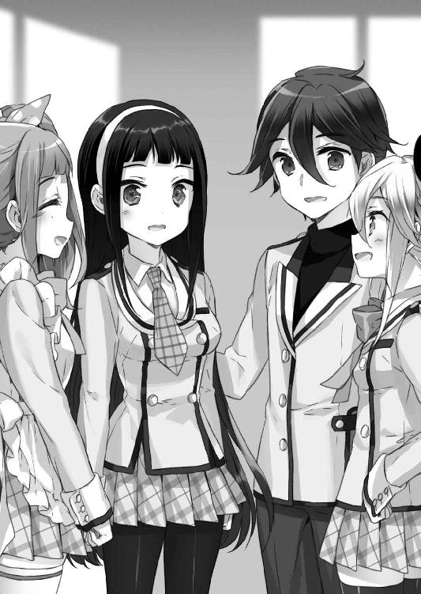
どんな人間だ......？という顔を隠しもしない菜波と凜が、お互いぺこりと会釈した。ぽこりと会釈した場合は殴り合っている。
「これでも颯くんの実の姉よ、一応」
「うむ......。これでも一応姉じゃ。ブレードフィールド公国、第１公女をしておる」
「待て待て待て......ちょっと待って。聞いたことがある。船の事故に遭って、お姫様になって、その弟が意識不明の重体で、最近、姉弟でこの学校に転校してきたって。まさか......それが......」
「僕らだよ」
「ソー太、王子だったのか!?」
「最近なったんだよ」
「最近なれるものなのか!?」
どうやら、颯太の境遇を一切知らなかったらしい凜が、目を剝いて驚く。
「随分と辛い境遇だと、風の噂に聞いたけど......」
「まあ......、でも、助けてくれる人もいるし、支えてくれる人もいるから。それに、凜くんもいるしね」
「う、うん！ 私もソー太の力になるゾ！」
言った直後、凜が自分の頭上に攻略済みフラグを立つのを感じて、頭の上にもってきた手をバタバタ振って慌てた。
と、何じゃこの人間関係は？と思っていた菜波が、ぽむと手を打つ。
「あ」
「どうしたの、菜波ちゃん？」
「川猿軍団て、あれかえ。颯太が子供の頃に入ってたって言っておったアホ集団じゃな。近所でもアホで有名じゃった」
「そうそう」
「誰がアホ集団だ!? ていうか、そうそうって、お菊まで......」
親友だと信じていた女子にアホ集団の頭目だと思われ、凜がショックを受けた。
などと楽しげに話をしていると、その様子を窓の外から窺う超怪しげな人物を認め、凜が眉を顰める。
凜に見つかったのを悟ったその人物は、さっと頭を引っ込めたが、凜のみならず、颯太達にも見つかっていた。
「眞奈花......？」
「誰だ？」
「僕の......クラスメートだよ」
「クラスメート......」
「颯くんのガールフレンドなの。気になって見に来ちゃったのねぇ。んもぅ、颯くん、モテモテでお姉ちゃん困っちゃう！」
困っちゃうお姉ちゃんの顔は笑っていて、特に困ってはいない。お姉ちゃんは弟がモテるのが嬉しくて仕方ないのである。勿論、度を越えると機嫌が悪くなる。
結局、眞奈花も合流し、颯太のメイドであるという事実を彼女の口から聞かされた凜を、若干引かせた。
それから、颯太達の子供時代の話を眞奈花は楽しそうに聞き入って、合間合間に話に加わっては話題を脱線させていた。全然聞き入ってねえじゃねえか。
「英雄崎凜......？」
その日の夜。
颯太の訪問を受けた神楽が、颯太の出してきた名前に眉根を寄せた。
「お前のガールフレンドか」
仮想世界で颯太の周辺調査をした時、特徴的な苗字の人物を何となく薄ぼんやりと覚えていたのだ。
但し、相当薄ぼんやりとであり、颯太の出してきた名前が『フィレ肉崎凜』とかでも同じ反応をしたかもしれない。もう全然別物じゃねえか。あと、若干この名前を言い出す颯太はお腹が減っている可能性がある。
「ガールフレンドっていうか......幼馴染みだよ」
「で、その餃子崎凜がどうした？」
「違う名前に!?」
お腹が減っているのは神楽の方であった。
大規模に夜食の話に傾きかけた流れを、颯太はシリアスな口調で引き戻す。
「凜くんがフラグを......操る力を持っていた」
「なに!?」
「それだけじゃない。桜にも会っていたんだ」
「桜......サクラメントか。畢竟そうなるだろうな......しかし......」
「現実にも存在し得る力、なのか、フラグを折ったり立てたりする力っていうのは？」
「フラグの力に関しては、今や、私よりお前の方が詳しい。お前が知らんのに、私が知る訳がなかろう」
「............」
こんなにも偉そうで、あんなにも訳知り顔だったのに、超ポンコツ状態になっている神楽を颯太が信じ難い目で見ていた。
「何だその目は？ ......そういえば、私の弟が、私をたまにそんな目で見ていたな」
どうやら、遥か太古の昔から、神楽はこんな感じであったらしく、颯太は大変残念な気持ちになる。
「ふむ......姉弟、か。......颯太王子、試しに私を神楽お姉ちゃんと呼んでみるといい」
「神楽お姉ちゃん」
「うむ」
お母さんだと思っていたらお姉ちゃんになっていた。どのみちお母さんでもないが。
なお、颯太が特に抵抗なく神楽をお姉ちゃん呼ばわりした件に関しては、菊乃の教育の賜であり、菜波は何ら寄与していない。
「颯太王子、そういえば、小腹が空いたな。お姉ちゃんが何か作ってやろう」
やはり、お腹が空いていたようだった。
２階の神楽の部屋を出て、階段を下りながら、ふと颯太が尋ねる。
「そういえば、神楽さんは料理出来るのか？」
「出来るさ。昔は世界中を放浪したからな。キャンプしながら料理したものだ。ピャロケチャの蒲焼きや、ヴォモグペの煮物などが得意だった」
「どこの世界を旅したんだよ!?」
聞いたことのない食材が出て来て、颯太が盛大に不安に駆られた。
勿論、神楽が旅したのは異世界なので、ピャロケチャとヴォモグペは異世界の食材である。脂っこくさっぱりしていて、コクがあるがあっさりしている。
「颯太王子は、何が食べたいのだ？ お姉ちゃんに言ってみるといい」
「......ピャロケチャとヴォモグペじゃなきゃ、何でもいいよ」
「ははは、お姉ちゃんの料理への信頼故だな？ まったく、颯太王子はお姉ちゃんっ子だな。まあ、お姉ちゃんに任せておけ」
仲睦まじい感じに階段を下りてきた神楽と颯太を、ぽかんと大きな口を開けて見ている人物がいた。
「............」
菜波だ。
「............」
「............」
「残念だ、菜波姫。好奇心は猫を殺すものだな」
「何でじゃ!? わらわ、別に好奇心を持って見に来た訳じゃないのじゃ!! お主らが勝手にこっちに歩いてきたんじゃろーがっ!?」
ゆらーりと首を絞めるポーズを取って菜波に近づいてくる神楽。
「言わぬっ！ 言わぬわっ！ 神楽殿が颯太に姉呼ばわりさせて悦に入っておるなどと！ わらわの心の内にのみ留めておくのじゃっ!!」
「本当だな......？」
「はい......」
逃げ惑い、最終的に談話室に追い詰められた菜波が壁ドンされながら、ぎこちなく頷いた。
「えっ、神楽ちゃん、颯太くんにお姉ちゃん呼ばわりさせて悦に入ってるです？ ずるいです。わたしも颯太くんといちゃいちゃしたいです」
「............」
「............」
談話室で普通に猫可愛い番組を見ていた茜が会話に殴り込んできて、菜波と神楽が無言で固まった。
そして、神楽は冷徹に菜波に告げた。
「愚か者め、思い知るがよい」
「何でじゃい!?」
茜ではなく普通に菜波を亡き者にしてこようとする神楽に菜波が突っ込んだ。
翌日の放課後。
旗ヶ谷学園生徒の間で、カップルの待ち合わせスポットとして有名な『聖帝小路久美子像』前に、そわそわしている女子がいた。
何故か、普段、滅多に制服を着ず、弓道着で過ごす少女......、珍しく制服を可愛く着こなして、校舎の窓ガラスに映る自分の姿で、前髪をチェックする凜である。
待ち合わせをした颯太を、『まだかな？ まだかな？』と人待ち顔を隠しもしない様子が初々しい。
なお、この聖帝小路久美子像は、久美子が自ら進んで建てた物で、ここで待ち合わせをしたカップルは必ず幸せになるという伝説を自分で作る念の入れようだが、その経緯は全て学園関係者に知れ渡っている。
それでもなお、この像の前で待ち合わせをする男女が大勢いるのは、偏に、そこまでする久美子の心情を慮って自己顕示欲を満たしてやろうという生徒達の優しさに起因するものであった。
「凜くん、早いね」
様子を窺っていた方とは逆から現れた颯太に、びくぅっ！となって、一つ深呼吸してから、凜がくるんと可憐に半回転して、スカートをヒラヒラと舞わせる。
「ソー太と子供の頃に待ち合わせると、いつも、私が待たされたからな。あの時の再演だ」
「あははは」
笑いながら、颯太は、凜と待ち合わせたことなどないのを明確に思い出していた。
ただ、何となく、いつだって、一緒にいたくて、いつもの場所、いつもの時間に、子供の頃の２人は集まっていたのだ。
「凜くんの制服、やっぱりいいね」
「そ、そうか？ そういえば、誰かがこの学校の制服は凄く可愛いと言っていたのを思い出してな」
『颯太に可愛いと思って貰いたい』という気持ちが、凜の頭上に恋愛攻略済みフラグを立て、慌ててバタバタとそれを振り落とす。
「そ、それじゃあ、行こうか。色々積もる話もある。すぐそこの学園内商店街に、可愛い喫茶店屋さんがあるのだ」
ぎこちなく指さす凜の『喫茶店屋さん』という可愛い言い方に、颯太が可愛く微笑む。何で可愛さを争おうとするのか。
一方。
放課後にそそくさと教室を出て行った颯太を怪しんだ茜達は、こっそりと颯太の後をつけていた。
「あ、あれは誰です？ スクールバッグのワンポイントの色からして、先輩さんです？」
「知らない人やよ......。颯太クンの新恋人さんなんやよ......？」
言ってしまってから、隣の茜に対して悪いことを言ったのではと、はわわと恵がなる。
と、同時に自分の言った言葉で、胸の奥がちくちくする恵がしょんぼりして、茜にぽんぽんと背中を叩かれて励まされた。
「あれ、凜お嬢様ですね」
「知っているです、眞奈花ちゃん？」
「はい、殿下の幼馴染みの方です」
「愛菜ちゃんとか菊乃先輩とかだけではなく、また新たな幼馴染みを!? 颯太くん、幼馴染み多すぎ問題です!!」
「しかも、女の子ばっかりですね......」
「............」
ふと思い返せば、幼馴染みが女の子しかいない恵が無言になる。
「でも、普通に生きていると、普通に３人ぐらいは幼馴染みもいるのでは？」
「............」
眞奈花の正論に、『幼馴染み？ ナニソレ、美味しいです？』状態の茜の瞳から光が失われた。
茜、恵、眞奈花の後ろから、ニョキッと出て来た菊乃がグッと握り拳を作る。
「デートに誘うとはやるわね！ でも、お姉ちゃん聞いてないっ！」
この握り拳が『やるわね』なのか『やってくれるわね』なのかで、かなり意味合いが変わってくるが、ハッキリさせると色々怖い気がしたので、恵や眞奈花は勿論、茜ですら口を噤んだ。
颯太監視組織から監視されているとは露ほども疑わない颯太と凜は、仲良く並んで喫茶店屋さんに向かう。
「凜くんとはよく駄菓子屋さん行ったよね」
「そ、そうだなっ。懐かしいな」
「凜くんによく奢って貰ったなあ、５円飴」
「ソー太、あのソーダ飴好きだったものね」
くすくす笑う凜は、やはり、仮想世界の時よりも、女子っぽさが増しているように颯太には思えた。
喫茶店屋さんにつくと、凜がクリームソーダに口を付けて、はにかむ。
「男の子と喫茶店屋さんに来たの、初めてだ」
「凜くん......女の子らしくなったよね......」
「どーゆー意味だ？ ......まあ、子供の頃の私は、確かに、女らしいとは言えなかったけど」
ぷくーっと頰を膨らませる仕草もまた、仮想世界より遥かに可愛い。
「......ソー太、お嬢様と婚約してたんだって？」
「え、うん、まあ。婚約破棄されたけど」
「何か、色々大変だったんだね。そ、その、私に出来ることがあったら、何でも言うんだゾ、ソー太？ 何しろ、私は、お前の相棒だったのだからな」
「............」
あの仮想世界を最後に出る時、颯太も凜の部屋の扉を通して、彼女をそう呼んだ。
だから、凜からもそう言って貰えて、颯太は心の底から嬉しかった。
颯太は、ストローで目の前の極限まで薄めることのない普通のかるぴーをかき混ぜて、遠い目をする。
「凜くん、覚えてる？ 初めて会って喧嘩した後、凜くん、自販機でジュース奢ってくれたんだよね」
「覚えてるよ？ かるぴーソーダを奢ってあげたら、ソーダくん......あ、ソー太、『馬鹿にしてるのか』とか言ってまた怒り出して、また喧嘩になったんだよね～」
「そうそう。それで、その後、バッポが『凜くん、天然なんだよ。許してやれよな』とか言い出して、凜くんが『天然とは何だ、この野郎』ってバッポと喧嘩になって、もう滅茶苦茶に......」
微妙な思い出話を持ち出され、一瞬仏頂面になった凜だが、颯太の思い出し笑いが止まらなくなって、結局、２人して、あはははと笑う。
凜が、久しぶりに聞いた名前に天井を見上げた。
「バッポかぁ......あいつ、馬鹿だったもんなあ......。でも、良い奴だったんだ。凄く友達思いでさ。バカでノッポなだけが残念だったんだよ」
「ノッポは関係ないけどね......」
「あははは、あいつ、いつも、そう言ってた！ ......そうそう！ ソー太の近所に住んでた眼鏡のお姉さん、この学校で先生やってるの知ってたか？」
「僕の担任だよ......」
「そうなの!? 凄い偶然もあるものだな......。ソー太、いつも、あのお姉さんのスカート覗いてたよね」
颯太をジト目で見る凜。
「深雪ねーちゃん、隙だらけだったからなぁ」
苦笑する颯太の鼻をぱちんと凜が指で弾き、痛がる颯太を見て溜飲を下げたのか、悪戯っぽく微笑む。
「ふふふ、それにしても、あのソーダとこんな風に思い出話をするなんて、あの頃は思いもしなかったなぁ......嬉しい」
「............」
何度目かの『誰、この美少女......？』という気持ちを抱く颯太の頭上の友情フラグを、眩しそうに眺める凜であった。
喫茶店内。
颯太達の席から少し離れた所で、不自然な低姿勢で颯太達の様子を窺う茜達の姿がある。
「綺麗な先輩さんですねです」
「茜ちゃんに強力なライバル登場やよ？」
「颯太くん、モテるです......」
ライバルの話をシリアスにする。シリウスではない。
「じゃが、あの先輩は、子供の頃、川猿と呼ばれた悪童じゃぞ？」
「ふわ!? 菜波ちゃん、いつの間に来たです!?」
「割と最初からおったのじゃがな......」
「あの美人さん、お猿さんなんやよ？」
「うむ、颯太と煙突の上から放尿した、アホな放尿犯として、ご近所では恐れられたこともあったのじゃ。わらわは、子供の頃には会うたことはなかったがのう。......じゃが、よもや、あんな美人とは......颯太の奴め」
ぐぬぬと菜波が睨む。
「男の子と立ちションなんて、男らしすぎるんやよっ。ウチの颯太くんの男らしい親友ポジションがピンチやよっ」
「メグちゃんのライバルさんだったですねです......」
「殿下も幼少の砌は、やんちゃな方だったんですね......」
「ねっねっ、お姉ちゃん、もう行っていいっ？ 乗り込んでいいっ？ 良い雰囲気をぶちこわしてきていいっ？」
「菊乃先輩、やんちゃすぎやよ......」
お姉ちゃんの、弟が女の子と仲良くする我慢の分水嶺を越えてきているらしかった。
恵の豪腕（本人談）によって、何とか菊乃の乱入を免れた颯太と凜は、喫茶店を出て、次の目的地を目指す。
旗ヶ谷学園の人工川である。
「へぇ～っ！ こんな所があったんだ！ ソー太、よく知ってるね！」
微笑む颯太は、嘗て、仮想世界で凜に連れられて、この人工川に来たことを懐かしく思い出し、心の中で『凜くんが教えてくれたんだよ』と微笑んだ。
なお、その際、川を管理する生物部に無断でイワナを釣ったことをメチャメチャ怒られたのを思い出して、すぐに颯太は内心苦笑いになったが。
川を見ると、元・川猿の血が騒ぐのか、凜が目を輝かせて川縁にタタタッと走って行った。
「ちょっと昔を思い出すよね」
「うんっ！」
ここに至るまで、颯太の頭上にサプライズフラグが立っているのは分かっていたが、まさか学内で川に連れてこられるとは思わなかった凜が、満面の笑みで頷く。
それから、２人並んで、無言で川の流れを眺めた。
しばらくして、凜が口を開く。
「......ソー太は、どうして、フラグの力をなくしたの？」
「一言で言うのは、難しいな。色々なことがあったから。......本当に......色々な、ことが」
重々しい颯太の表情と口調に、凜は黙して、彼の次の言葉を待った。
「僕の役目が終わったから......桜に頼まれたことを果たしたから、だと思う」
「そっか......」
「僕は、色んな人に助けられ、救われ、導かれて、最後の場所に辿り着くことが出来た。凜くんにも、あるよ。そういう......導きが」
「......ソー太は、この力を持っていて良かったと思った？」
「思わなかった。力のあった頃はね。でも、今だから思うこともある。その力が見せてくれたものがあったからこそ、分かったこともあった。だから、凜くんにも掛け替えのないものを気づかせてくれるんじゃないかな......と思う。......でも、不安なら、僕も一緒に背負うよ」
「ソー太......」
自分の頭上に攻略済みフラグが立つのを、凜は止められなかった。
颯太の言葉に、ホッとした様子で優しく微笑む凜。
「ソー太がいてくれてよかった」
照れたような、心の奥底から零れてくるような、囁きだった。
「え......？」
「思っていたんだ。この力は確かに、人を幸せにすることの出来る力だって。それは、間違いない。でも......」
凜は真っ直ぐ颯太を見つめる。
「独りで背負うには、少し重い力だという気がしていたから」
「凜くん......」
その気持ちは颯太には痛い程よく分かる。
『僕にとって、鳴や美森会長のお母さん達がそうであったように、凜くんにとっての道しるべになれればいい。或いは、僕と同じ力を持って、凜くんが僕の前に現れたのは、僕にそうなれ、と桜が言っているということなのかもしれないしな......』
「ちょっと強がってはいたけど、心細かったけど、ソー太が助けになってくれるのなら、安心だよ」
川を背にした凜の笑顔が、颯太には輝いて見えた。
「私にとって唯一、背中を預けられる相手、だからね。......ソー太は」
少年の笑顔が、その笑顔に重なる。
颯太にとって、それは何より嬉しいことだった。
幕間 天冥帰結・七徳院
ブレードフィールド公国。
国王執務室。
「神楽・ブレードフィールドを、取り逃がしたようよ。米軍が高級ロボを壊されたと嘆いていたわ」
天界16騎士団、聖櫃騎士団・副騎士団長ナルメルが、騎士団長ジェルトロに告げる。
「米軍。この星の最強部隊と聞いたが、人を出さず、機械に頼るたぁな。舐められたもんだぜ」
「神楽卿が？ 我々が？」
「両方かもな」
言いざま、座り心地のいい椅子から、ジェルトロが億劫そうに立ち上がった。
「虎の子の封印の首輪は？」
「機械兵の残骸からは発見できなかったそうよ」
「無事、黒猫の首に鈴を付けることが出来たと見るべきか、失敗して消失したと見るべきか......どのみち、１つじゃ足りゃしなかったな」
「ミーロワースを逃がしましたからね」
「馬鹿、おめぇ、あんなん、そうそう簡単に倒せるかよ、化けモンだぜ、ありゃ!!」
「タリアスなら倒したかも」
「......出たよ、タリアス信奉」
タリアス・ジョア。
ジェルトロと同じく天界16騎士であり、彼も一目置く天界軍のツインエースの片割れである。
ナルメルにとっては、まだ何の力もない少女だった頃からの知己であり、その信頼は非常に厚い。
ジェルトロは、壁に貼られた地図上の日本を拳で軽く叩く。
「ともあれ、だ。こんな、ちっちぇー国のトップが、圧力を突っぱねてくるたぁな」
『ま、こっちもちっちぇー国ではあるけどな』と日本から遠く離れたブレードフィールド公国を横目で見る。
「圧力を強めるか、謀殺を図るのであれば......」
「やめとけ」
「？」
「演説を聴いたがよぉ。賢しいが、立派な人物だ。ああいう奴をこの世から亡くすのは惜しいだろぉが」
「............」
ジェルトロは自分の生い立ち故か、全てを敵に回してでも弱者を救うような清廉な人物に弱い所がある。自分が否定し足蹴にしてきた生き方だからこそ、自分にないその志の尊さを貴重に思うのだろうとナルメルは半ば呆れ、また〝騎士〟ジェルトロとしての拠って立つ所なのだと半ば感じ入る部分でもある。
「とはいえ、ここでダラダラしている訳にもなぁ......」
「２個ほど小隊を預けて貰えば、騎士を率い、直接、王子の捕縛に向かうけれど」
「マジかよ!? 何でそれを早く言わねぇんだ!?」
「王子の捕縛自体をあまり望んでないのかと」
「......まあ、気の進まねぇ任務ではあるが、宮仕えだからな。そうも言ってらんねぇだろ」
「丸くなったものね。早死にするフラグよ、ジェルトロ・フルテッド」
「マジかよ......」
ジェルトロがこの上なく嫌そうな顔をした。
「ところで、七徳院の皆さんはおとなしくしてやがんのか？」
「みたいね」
腹に一物抱えた集団に見える七徳院を放置するのは、正直、あまり望む所ではないのだが、日本や米軍に圧力をかけるような無茶振りに唯々諾々と従っている以上、手駒としては便利なのだ。
一方。
その、便利に使われている七徳院。
地下司令室では、いつものようにＮが壁にもたれて、物憂げな顔をしていた。
「Ｎ」
「３、舞子・ストラテジーか、何だ？」
「エリア公王と理沙公王妃は、かなり憔悴していらっしゃる様子ですが、颯太王子と菜波姫に対しては、そこまで絶望的にはなってはいないようです。『自分達の育てた子供らがそうそう簡単に挫ける訳がない』と。思いの外、ご子息とご息女を信じておいでのようですね」
「当然だ。王子に関しては、俺も同意見だ。......姫の方はどうか知らんが」
「それで、貴方は殿下に合流しないのですか、Ｎ？」
「それもあるが。アリシアに加え０が既に合流しているとの情報が届いたからな。その上、このＮまで、となれば......」
「なれば？」
『あまり本気で、颯太王子の勢力を脅威に思われるのは、まずい。......今は。そう、少なくとも、今は、な』と口の中で呟いて、Ｎは舞子に微笑を向ける。
「旗ヶ谷学園が愉快な七徳院学園になりかねんからな」
「............」
昔、誰かがそんなことを言っていたのを思い出しつつ、舞子はＮすらも冗談を言うようになって、この組織はもう駄目なんじゃないかと思い始めた。
この少し後、ナルメルの日本出兵が決行され、Ｎは或いは愉快な七徳院学園にしておいた方が良かったかもしれないとの感想を抱くに至るのであるが......。
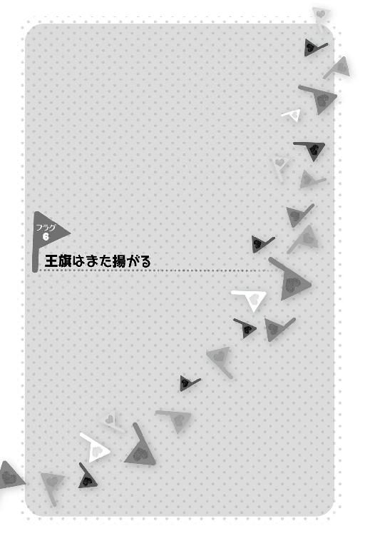
ある日の夕刻。
颯太は夕日が妙に赤く大きく、雲が赤黒く印象的に浮き上がっていたのを覚えている。
深雪先生に呼ばれて帰りが少し遅くなった颯太は、一人、校舎から駅前への道を歩いていた。
虫の知らせ、とでも言うべきだろうか。
赤い夕暮れがとても不吉に思えた。
『まるで血の色だ......』
胸の奥がざわつく。
それは、予感。
或いは......。
──フラグ。
忠犬のように颯太の用事が終わるのを待とうとしていた茜や眞奈花を先に帰した自分を、颯太は誉めてやりたいと思うことになる。
「......!!」
駅前付近に集結していた集団の装束に見覚えがあったからだ。
『あれは......天界軍!! ブレードフィールド公国を制圧した!! 遂にこの旗ヶ谷学園まで物理的に占拠に来たのか!?』
颯太は彼らに気づかれないように、慌てて物陰に身体を潜めて様子を窺う。
『......いや、それにしては動きが妙だ。全域の占拠じゃないな......誰かを......いや、僕を捜しているのか!?』
その時、颯太を目敏く見つけた天界騎士が指さし叫ぶ。
「見つけたぞ、颯太・ブレードフィールド王子だ！ 生かして捕らえろ!!」
「!!」
颯太はこの上ない焦燥感に駆られながら、校舎の方へと戻り、走る。
『くそっ、まずい!! 婆さまに助けを乞うにしても、あの数は......！』
戻りつつ、あちこちに散っていたらしき騎士達が集結してくるのを見て、颯太はこの場を切り抜ける手段を考え、頭をフル回転させた。
そもそも、月麦は既にクエスト寮に戻っていて、携帯で呼ぶにしてもすぐには到着すまい。
どうにかやり過ごすか撒くか、その為、颯太は校舎の中へと入り、階段を駆け上がる。
そのただならぬ後ろ姿を、昇降口で見ていた者がいた。
「......ソー太？」
少し後を追ってくる物々しい姿の一団を凜は、怪訝な様子で眺める。
『......この人達、日本人じゃないっぽいよね。まさか、ブレードフィールド公国からソー太を連れ戻しに!?』
一団が横をすり抜けていこうとする時、凜の口をついて思わずフラグ操作の台詞が出た。
「あのっ！ 〝誰かを捜しているなら、さっき、怪しい生徒が向こうの方に走っていきましたよ〟」
「かたじけない!!」
颯太が走って行った方とは逆の方向を指さす凜。
『これで、今頃、ソー太の頭上には逃亡成功フラグが立っているはず。逃げ延びて、ソー太』
凜が立てたフラグによって、外から追ってきた一団は、颯太を見失っていた。
しかし、既に校舎内の捜索をしていた騎士が数名、廊下にいたのである。
階段を上った颯太は、彼らに発見されてしまう。
「いたぞ!!」
「っ!!」
一瞬足が止まる颯太を、だが、再び疾駆させる声が飛んだ。
「颯太王子!! こっちだ!!」
「神楽さん!?」
ほんの少し前に騎士を発見して、女子トイレでやり過ごそうとしていた神楽である。
「いずれ手が伸びる可能性は考えていたが......存外早かったな！」
颯太の危機に、神楽は走ってきた颯太の手を取り、１年Ｆ組教室を目指してひた走る。
目指す教室に入ると、神楽は颯太を教室の奥に押し込み、自身は自分の机の中から、聖帝小路副理事長・久美子に貰い受けた魔導銃を取り出した。
『こんな物でどこまで凌げるかは分からんが......ないよりはマシか』
突如として血相を変えて飛び込んできた颯太と神楽を、目を白黒させて見ていたのは、日誌を書いていた今日の日直、茶髪にピアスの一見チャラそうなクラスメート、通称・茶パである。
「なにごと......？」
そうこうするうちに、扉を蹴破り、２人の天界騎士が颯太と、彼の前に立ちはだかる神楽を睨んだ。
「一緒に来て貰う、颯太殿下」
「そうは......」
『いくか』と神楽はドスの利いた声で言い切る前に魔導銃を放ち、魔力の弾丸を天界騎士が素手で弾き飛ばし、開けっ放しになっていた窓から外に飛び出した弾丸が中空で爆発する。
「っ!!」
『豆鉄砲め！』と神楽が内心で毒突いた。
その間にも、天界騎士は、ゆらりと歩いてきて、その手に力場を練り込んだ気弾を発生させた。
「逃げろ、颯太王子!!」
「どこへだよ......」
教室の片方の扉は施錠されており、残りの扉の前には天界騎士がいる。
ましてや、この状況で、神楽を置いていく訳にもいかない。
茶パは、目の前で展開される、まるでハリウッド映画と思える光景を、ぽかんと口を開けて見るのみだ。
「痛い目を見んとご同行願えないだろうかな？」
全てが紳士である訳ではない天界騎士の中でも、少々底意地の悪そうな天界騎士が笑みを浮かべ、追い詰めたネズミをいたぶる猫のように舌舐めずりした。
一歩、また一歩と、追い詰められ、窓際まで後ずさった颯太と神楽。
......その時。
教室で唯一座っていた人物が、ガタンと椅子を鳴らした。
立ち上がったのは、勿論、日誌を書いていたクラスメート。
茶パである。
彼は、あまりの馬鹿馬鹿しい現実離れした光景に、はっはっはと軽い笑い声を上げて、両者の間に歩いてきて言った。
「おいおいおい。困るぞ、ウチのクラスメートにちょっかいを出してくれちゃーさ」
「茶パ!! よせ!! こいつら、普通じゃないんだ!!」
颯太は、外見のチャラさとは裏腹に優しく誠実なクラスメートの行動に、鳥肌を立てた。
「............」
一般人故の恐れ知らずな言動を、騎士２人は鼻で笑って、少し脅すつもりで腰の剣を抜いて切っ先を茶パに向ける。
「......抜いたな？」
茶パは『馬鹿者が』と口の中で罵った。
仮想世界で９ヵ月ほどもクラスメートだった颯太は、こんなにも険しく、こんなにも鋭い茶パの瞳を見たことがない。
そして──。
茶パはすっと伸ばした右手の指をパチン!!と鳴らす。
その刹那。
剣を抜いた方の騎士の姿が瞬時に消失した。
「!?」
驚いたのは、颯太と神楽だけではない。
もう一人の騎士も、何が起きたのかは分からなかった。
が、騎士の後ろ、校舎から程近い屋外プールで、バシャーン!!と盛大な水しぶきが上がり、窓から姿を消した方の騎士が沈んでいくのを見、目の前の茶髪の少年が何かをしたのだということは分かった。
必死にプールサイドに上がろうとする同僚の姿に、残った騎士が全身に緊張感を纏わせて、茶パに対峙する。
「貴様......!!」
同僚と同じく、剣の柄に手をかけた瞬間。
「!?」
目にも留まらぬ速度で背後に回った人物に、その手をグッと押し留められた。
「やめておきなさい」
それは、騎士の味方だった。
赤い頭巾を目深に被る小柄な少女。
「ナルメル副団長!?」
ナルメル──彼ら騎士の所属する聖櫃騎士団の副騎士団長たる少女であり、今回の遠征部隊の颯太収奪作戦の指揮を執る人物だ。
「さっきのは彼なりの警告よ。次に剣を抜いた者は殺されるわ」
「......!!」
「呪文詠唱なしで『空間転移』なんていう高位の魔法を使える魔法使いは、全次元広しといえど、数える程しかいない」
「............」
茶パの目がスッと細められる。
「ましてや、対象に触れることもなしに転移させるのは、相当な使い手でもなければね。そんな魔法使いを、私は１人しか知らない」
ナルメルがグッと手に力を込め、騎士を下がらせた。
「そうでしょう？ アヴァロン魔導師団・団長、大賢者マァリン卿」
「ナルメル......真紅の頭巾......天界......。......ああ、お前が噂に名高い三大召喚士の一角。〝真紅のエベラーゼ〟こと、ナルメル・エベラーゼ、か」
「大賢者殿に名を知られているとは光栄の至り」
アヴァロン魔導師団。
魔法少女福祉機構、精霊記念魔導学院、アーネンエルベ魔法ギルドと並び称される、４大魔法組織の一つである。
そして、神楽の元々の祖国......今や、異世界最強の兵団を有するとも言われるまでになり、名を聖デルタ王国と変えた国家の現在の宮廷魔導師団こそが、アヴァロン魔導師団であった。
全次元最強魔導師の呼び声も高いマァリンは、その組織の長なのである。
ナルメルの緊張は並ではなかった。
マァリンが本気を出せば、瞬時に消し飛ばされるだろう。
その緊迫感は、今や普通の少年である颯太ですら分かる程だ。
まさか、ただのクラスメートと思っていた人物が、神楽や月麦達側の人間であろうとは、颯太は目を白黒させないではいられない。
「茶パ......お前......」
「そう怖い顔をするなよ、旗立。先代の黒騎士殿もな」
颯太達にはいつもの気安い顔を見せるが、再びナルメルを見遣る茶パの瞳には敵意が混ざっている。
「帰ってジェルトロくんに忠告しておくことだ」
茶パは、そもそもこの学園に居座る理由を思い起こしながら、颯太が聞いたこともない低い声で続ける。
「ここに手を出す、ということは、お前達にとって身の破滅を意味するぞ、とな」
「......？」
「この場所は、忌むべき力に守られた地だということだよ。そろそろ引き上げた方が身の為だ。大事な騎士達の魂が失われてしまう。......手遅れだとは思うがね」
まるで、その言葉が引き金であるが如く、ナルメルの背後の騎士が胸元を押さえて呻き声を上げた。
「っ!! ぐっ!! あああああああっ!!」
「どうした......!?」
ナルメルが尋ねるも、壁にぶつかって身体を預けた騎士は藻搔き苦しむのみだ。
その直後、バシュッ!!と、天界に作られた仮初めの身体ごと、天界騎士は消失した。
「な......!?」
口を開けて、異変を見るしかないナルメルを、茶パが気の毒そうに揶揄する笑みで見る。
「旧世界がまだ１つだった頃」
「............」
「ここには忌まわしい研究施設があったんだ。その施設は、砕けていく旧世界の中で、最後まで、その異体を保っていたという......」
「まさか、最後の絶対存在の生まれた場所か!?」
「そうだ。奴の怨念が未だにここには渦巻いているのさ。天界のような清浄な地で作られた身体と、そこで清められつつあった魂には、この禍々しさは耐えられまい」
颯太が、何故か、懐かしいような気すらするその言葉を口にする。
「最後の絶対存在......」
「〝虚無の人形〟......か」
口籠もるナルメルの顔面が蒼白になっていた。
周囲の力場の探知を行った茶パは、ふむ......と顎をしゃくる。
「さて。お前が率いていた騎士の力場は、既にほとんど消えてしまったぞ？ お前ほどの実力者でも、そう長くは......いや、お前は生身のまま天界に上ったクチか。しかし、この大賢者マァリンと１対１で勝てるとは思ってはいまい？」
「見逃してくれる、という訳？ 随分と慈悲深いのね」
「いやいや」
茶パは、チッチッと指を横に振った。
「ここまでやらかしたんだ。そこにいる王子殿下が、意趣返しをする相手が必要だろう？ いずれ、彼がお前達の所にお邪魔する。その時まで、首を洗って待っていることだ。因果応報、というのを知るべきだよ、真紅のエベラーゼ」
「............」
その言葉を、茶パは、彼女らを通して、その背後で糸を引く者達に言ったつもりだった。
たとえその相手が、自分と同じ旗の下で戦ってきたはずの仲間であっても、自らが主君と仰いできた存在であっても、だ。
「肝に銘じておきましょう。......颯太殿下。いずれまた、お会いしましょう」
「............」
「それと、マァリン卿。一応、こちらには国王陛下達を初めとする人質がいるということをお忘れなく」
「肝に銘じておこう」
『自分が先陣を切って、旗立の味方をすると思われているのかな？』と、少し妙な状況になったことを苦笑しつつ、茶パが頷く。
そして、ナルメルは煙が消えるように、姿を消した。
一瞬だけナルメルの消えた空間の歪みが残るその場所に、茶パは口の中で呟く。
「取りあえず、クラスメートを庇っただけで、別に率先して、公国を取り戻す尖兵になるつもりはない、んだがな......」
『今のところは』と心の中で付け加えながら。
エピローグ
どれぐらい固まっていただろうか。
颯太と神楽が、呼吸すらままならないような状況からようやく解き放たれ、近くの椅子に腰を下ろして、深くため息を吐いた。
「まさか、颯太王子のクラスメートに、最強魔導師がいようとはな」
「こちらこそ、最強の黒騎士を育て上げた師匠たる人物が転校して来た時はどうしようかと思ったよ」
それ以上に、運命を操る少年が目の前に現れた時には、だ。
余裕を見せていた茶パは、けれど、ふとその表情を引き締める。
「......ん」
「？」
「そろそろ......か」
「何がだ？」
茶パがスッと右腕を上に持ち上げ、天空を指さす。
その遥か先には、地球の衛星軌道上を周回する物がある......即ち。
「魔導人工衛星群・グリモワール。その建造には多くの稀代の錬金術師達が関わった。クリスチャン・ローゼンクロイツ、テオフラストゥス・フォン・ホーエンハイム、フルカネルリ、ゲオルク・ファウスト、アレッサンドロ・ディ・カリオストロ、ハインリヒ・コルネリウス・アグリッパ。......実を言うと、俺も知人の名を騙って魔法で姿を変え、その列に加わらせて貰っていたのさ」
「なに......!?」
グリモワール建造の旗振り役をした神楽が初めて知る事実に声を裏返した。
「覚えているかな？ 果心居士を名乗る錬金術師を」
「あれはお前だったのか!?」
茶パが一瞬、神楽の驚きに片頰笑んでみせる。
「まあな。さて、俺が設計者の１人として、あれに持たせた様々な目的『運命理論の解析』『精神世界の領域への踏破』『上位世界への扉の開放』『世界推移シミュレーション』......これらは複雑に絡み合うことで、１つの力を生み出すことが出来る」
「１つの......力？」
颯太の問い掛けに茶パが頷いた。
「運命を操る力......フラグ操作能力だよ」
「!!」
颯太は息を吞んだ。
その言葉と呼応するかの如く。
13基のグリモワールのうちの１基が、フル稼働を始める。
そのグリモワールの名は、グラングリモア。またの名を、赤い竜。
竜の運命を背負う少年の遥か上空の彼方に、竜の名を持つ量子コンピュータが輝いていた。
巨大な魔力の発動を感じ、茶パが真上に顔を向けて言う。まるで、教室の天井を透かして見るような仕草で。
「仮想世界をサーバー上に構築し、あらゆる運命の可能性をデータとして蓄積。どの道筋を辿れば、世界がどういう形になるかを、グリモワールは〝理解した〟......そして、上位世界の扉を開き、そこから世界の道筋をずらす〝魔法の言葉や行動〟をリンクさせる」
「それが、グリモワールの真の役割か......」
「そうだ。あれは、現実世界に、運命改変能力を実現させる為の、人類の武器なんだ」
茶パは、こんこんと頭を指先で叩く。
「この世に２枚。グリモワールとの相互通信を行う通信用チップがある。脊髄に埋め込んで使う物だ。そいつは、量産型グリモワールを使った脳の治療を行う為にも使われる。１枚は豪華客船プリンセス・カグラ号沈没事故の際、意識不明になった少年に使われた。ちなみに、もう一枚は......」
颯太はそこで、茶パの言葉の先を悟った。
「凜くんに!?」
「......ある少女が自動車事故に巻き込まれ、一時期、生死の境を彷徨った。奇しくもプリンセス・カグラ号の行方不明少年が見つかった直後のことだ。旗立は怒るかもしれんが、一国の王子に未知の治療を施す前に、テストケースとして、その少女が選ばれたんだ。その少女というのが......」
「英雄崎凜か」
神楽が茶パの言葉を引き継いだ。
「じゃあ、凜くんは、僕の為に実験台になったっていうのか......!?」
「そのお陰で、凜嬢は助かったとも言える」
「............」
同時に、颯太は１つの大きな可能性にも気づく。
『じゃあ、凜くんも......茜や恵のように、仮想世界での記憶を深層心理に持っているかもしれないってことなのか......!?』
茶パは講義をする教授のような口調で、引き続き、話を進める。
「さて、その２枚のチップを脊髄に埋め込んだ選ばれし者が、グリモワールによる運命干渉能力付与者、ということになる訳だが」
「今、フラグの力は、凜くんにしか......」
「テストケース、という訳か」
『お兄さん』
不意に。
桜の声が背後から聞こえた。
「桜......!?」
だが、どこにも桜の姿はない。
その代わり......颯太は自分の頭上に復活フラグが立っているのを感じる。
この時、旗立颯太は、グリモワールとのリンクにより、再びその手にフラグ操作能力を取り戻したのである。
──フラグ。
死亡フラグ、恋愛フラグ、友情フラグ......世の中には特定の事象を引き出す『フラグ』と呼ばれる超常的な条件のようなものがある。
旗立颯太はこれら様々なフラグを視覚的に捉えることの出来る、不思議な能力を持っていた。
そして、そのフラグを立てたり折ったりする為の言動を瞬時に直感することが出来るのである。
旗立颯太の、フラグを巡る物語は再び、そのスタートフラグを振られるのであった......。
つづく
あとがき
がをがを～、竹井10日です。
お待たせしました！
と言う訳で、実は、この巻のラストまでが、第２部再始動のファーストエピソードになります。
本当はここまでのお話を前の巻である10巻で終わらせたかったのですけれど、書き始める前から薄々分かってはいたものの、全く１冊分に収まる感じではなく、途中ぐらいまで書いた時点で２冊分だな......と諦めました。
そんな次第で、10巻ラストからちょっとモヤモヤしたまま11巻を待たせてしまったような気もしましたが、それもまた楽しい時間であったと思って頂ければ幸いです。幸町です。何で急に幸町の話をし出したのかは謎ですが、日本全国凄いあちこちにあるようです。貴方の住んでいる街の近くにも幸町はありますか？ そうですか。いえ、特にこれ以上話は膨らみませんが。
予想外の人物が予想外の再登場をするのが、この第２部の楽しみの一つであると思いますが、皆さんのお気に入りキャラはここまでで再登場したでしょうか。
え？ せりきゃん!? せせせせせ、せりきゃん!? いえ、ちょっと大げさに驚いてみただけで、別に意味はありません。
さて、この11巻は文庫のみの通常版の他に、ＯＶＡ付き限定版が出ていますが、勿論、皆さんはゲットしましたよね？ テレビアニメでは語られなかったクリスマスのクエスト寮が描かれています。
なんと！ 限定版アニメのシナリオは、竹井10日が初挑戦しております。脚本家デビューです。高校デビューみたいですね。何がだ。
茜さんが好き放題だったり、テレビでは活躍の場が少なかったあのキャラの謎の大活躍が見られたりするので、うっかり通常版を買ってしまった方も、今からでも限定版をゲットされることをオススメします。
何しろ、限定版はカバー折り返しの著者紹介が別物になっていますからね。いや、冗談ではなく、本当に。
ＢＤパッケージなど、色々お仕事が増える中、今回も可愛い可愛い表紙メグさんが超可愛いＣＵＴＥＧさん、素敵イラストありがとうございます!! ＣＵＴＥＧさんも超可愛いです。僕もかなり可愛いですが。
コミカライズの方は、いよいよ第１部の佳境に入りつつある感じなので、そちらも是非、合わせてお楽しみ下さい！ Ｎ兄ちゃんとか、ミーロのおっちゃんとかが見られるのはコミカライズ版だけですよ！ いえ、ミーロのおっちゃんは、今回一緒に出るコミカライズ９巻ではまだ出てきませんが。......と思ったら出てた！ 危ない、確認大事！ 急に描き慣れない物を描かされる凪庵さん、頑張って下さい！ みんなで応援しましょう。
担当編集・猪熊さんにも今回も色々助けて頂き、感謝感謝です！ コミカライズ連載中の少年シリウスの方では、山本編集長、担当編集小島さんにもお世話になっています。ありがとうございます！
そして、がをられを楽しんで下さる読者の皆さんに、今回も感謝です。
沢山のありがとうによって、がをられは成り立っているのです。沢庵のありがとうの場合は、漬け物です。何の話がしたいのかよく分からなくなってきた......。
そしてそして、角川スニーカー文庫にて、新シリーズを書いております！ タイトルは、『愛だ恋だを取り締まる俺に、春がやってきたので無秩序』です。恋愛禁止のディストピア世界で、恋愛警察や恋愛Ｇメンに取り締まられそうになるところを、あれやこれやで言い逃れる、エクストリーム言い訳ラブコメですよ。リアルタイムで追って下さっている方は、その２巻とこのがをられ11巻とでコラボっぽいこともやっているので、要チェックですよ!!
そんなこんなで、がをられは次の巻も、物凄い展開が待ち受けていますので、お楽しみにお待ち下さい。
では、12巻で、がをがを～。
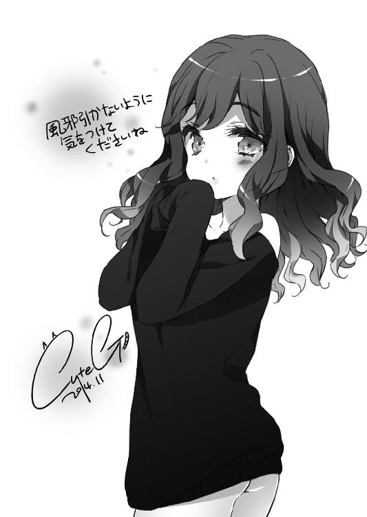
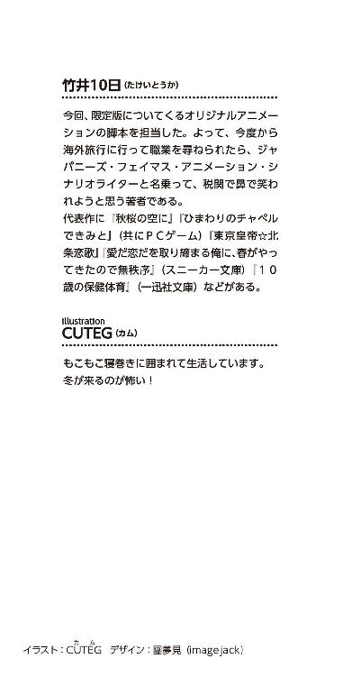
本作品は、二〇一四年一二月、小社より講談社ラノベ文庫として刊行されたものを電子書籍化したものです。
◎本電子書籍内の外部リンクに関して
ご利用の端末によっては、リンク機能が制限され正しく動作しない場合があります。また、リンク先のｗｅｂサイト、メールアドレス、電話番号は、事前のご連絡なく削除あるいは変更されることもございます。ご了承ください。
彼女がフラグをおられたら
こんな床が抜ける寮にはいられない、私は角部屋に帰らせて貰うからね！
二〇一五年一月一日発行
竹井日
©Touka Takei 2015
発行者 清水保雅
発行所 株式会社講談社
東京都文京区音羽二‐一二‐二一
〒112-8001
◎本電子書籍は、購入者個人の閲覧の目的のためにのみ、ファイルの閲覧が許諾されています。私的利用の範囲をこえる行為は著作権法上、禁じられています。
14N1121E
01